To Kill a Mockingbird no es una novela sobre el racismo. Es una novela sobre lo que le cuesta a un niño descubrir que el mundo adulto miente con perfecta coherencia. La voz de Scout tiene seis años cuando empieza a mirar y treinta cuando narra: esa distancia es la estructura real del libro, no la trama. Lo que sobrevive al juicio —que se pierde, que siempre iba a perderse— no es la justicia sino Atticus: su forma de moverse por el mundo como si la integridad fuera una postura corporal. El libro enseña una sola cosa con insistencia: que ver claro no es suficiente, y que vale la pena de todas formas.
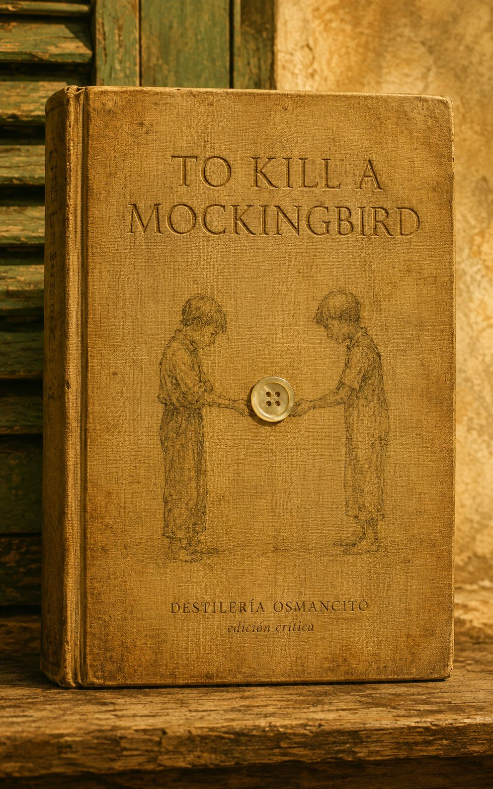
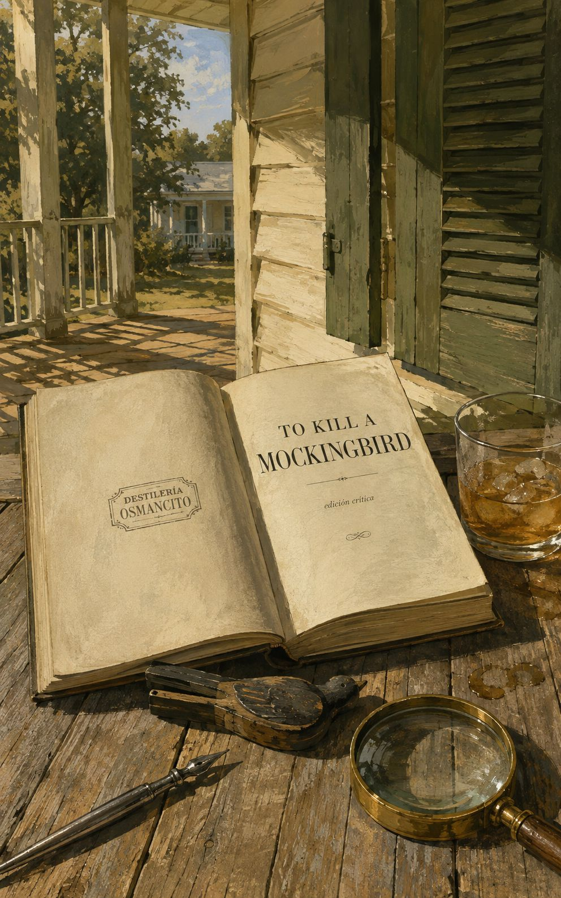
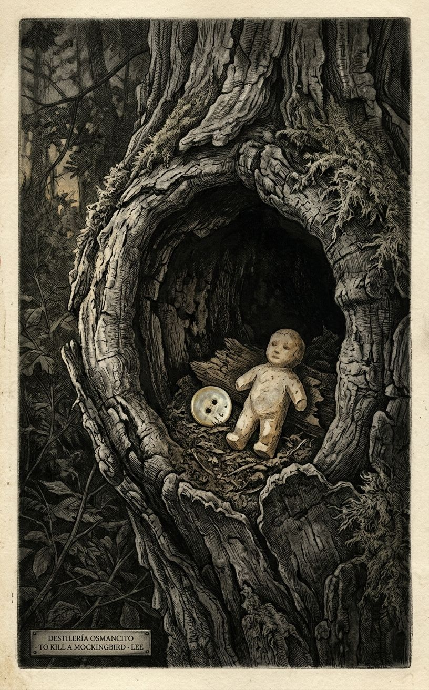
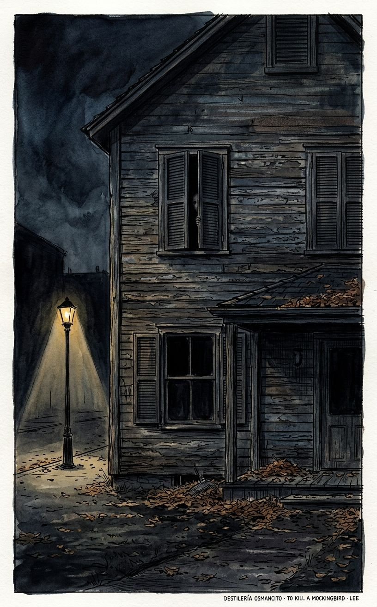
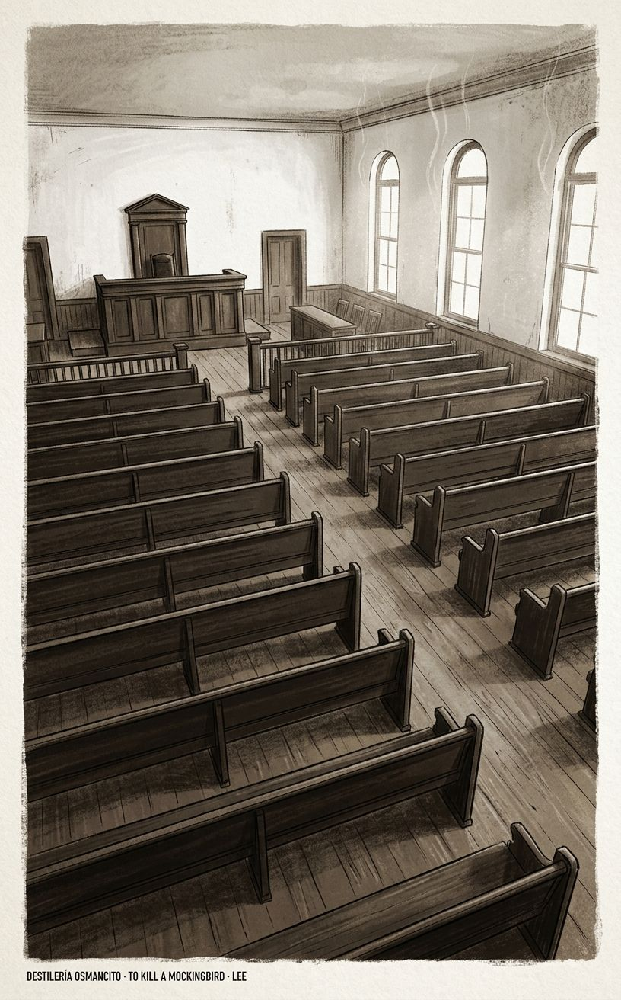
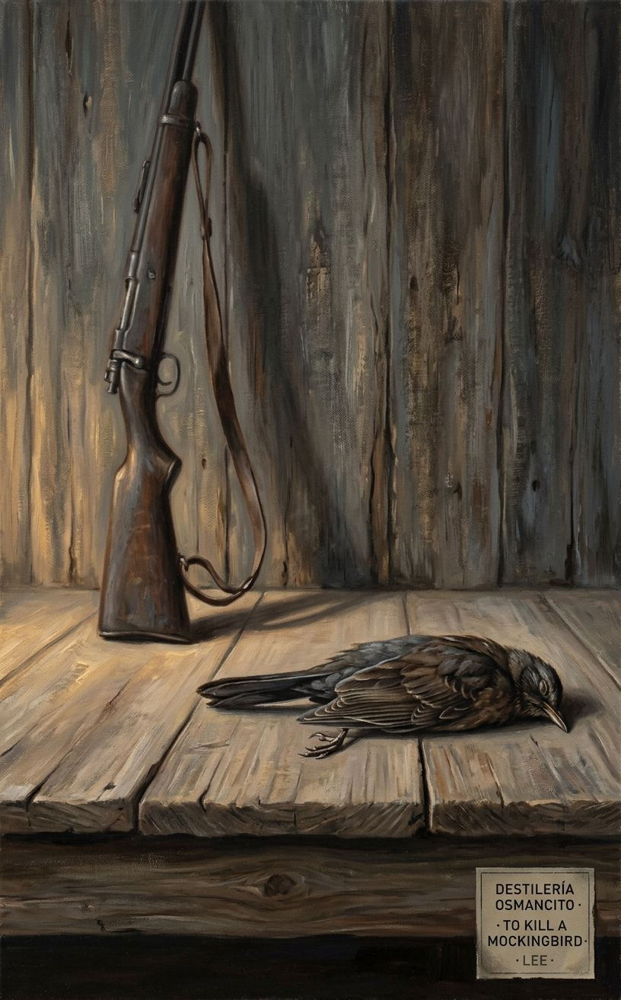
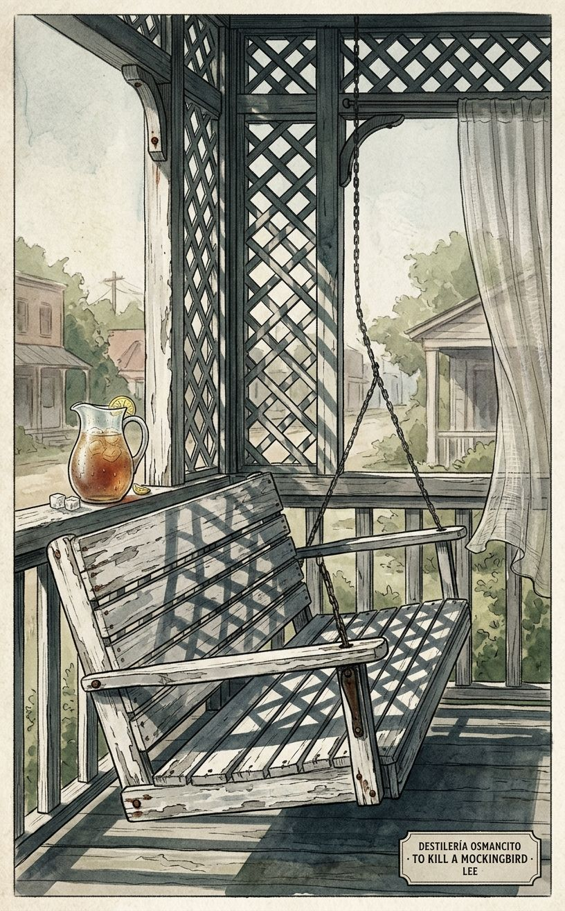
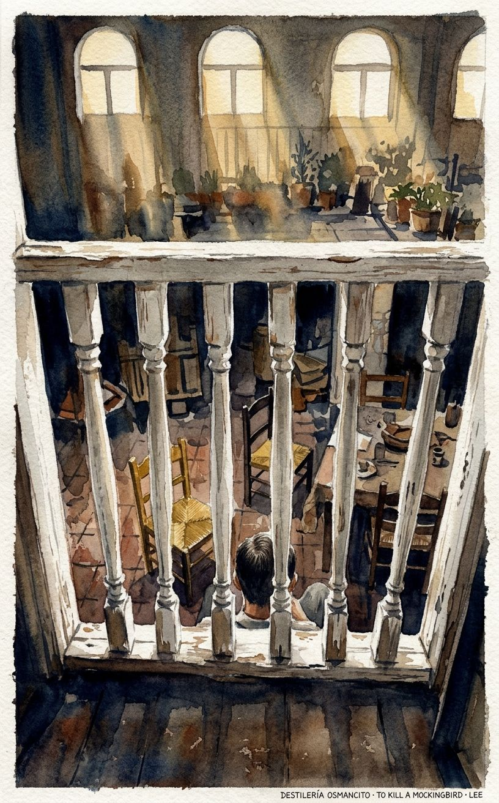
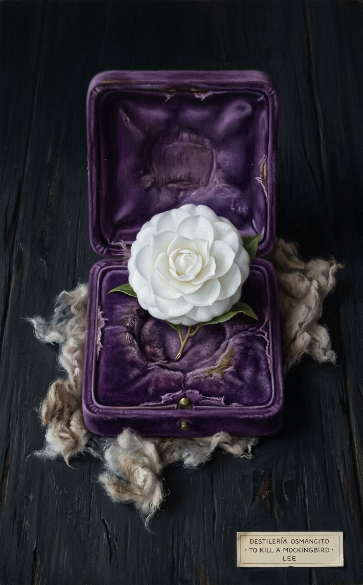
Un libro que pesa menos de lo que promete y más de lo que uno recuerda.
Lo que tiene usted aquí es un libro que habla en la voz de una niña pero piensa con la inteligencia de quien ya lo ha perdido todo menos la lucidez. To Kill a Mockingbird llega encuadernado en anécdota —un verano, un juicio, un vecino fantasma— y guarda dentro algo que la anécdota no anuncia: la pregunta de qué le hacemos a alguien cuando lo vemos con claridad y seguimos eligiendo no verlo. Nombrar lo que es este libro no es contar lo que dice. Es otra operación.
Título — To Kill a Mockingbird Autor — Harper Lee Año — 1960 Género — Novela Extensión estimada — ~99.600 palabras / ~398 páginas (a 250 palabras/página) / 31 capítulos en 2 partes Idioma original — Inglés Palabra más frecuente con contenido — Atticus (863 ocurrencias). El corpus declara ser una historia de infancia narrada por Scout; la palabra que más aparece es el nombre del padre. El libro es sobre él tanto como sobre ella, y eso el corpus lo confiesa sin quererlo.
Maycomb, Alabama, años treinta. Jean Louise “Scout” Finch narra, desde la distancia adulta, los tres años de su infancia en que su padre Atticus defendió a Tom Robinson —un hombre negro acusado de violar a Mayella Ewell, mujer blanca— ante un jurado que nunca tuvo intención de absolverlo. Alrededor del juicio, y entrelazada con él, la obsesión de Scout, su hermano Jem y el amigo veraniego Dill por hacer salir a Boo Radley, el vecino fantasma encerrado en su casa durante décadas. El juicio se pierde. Tom muere en prisión intentando escapar. Boo Radley salva a los niños de Bob Ewell en la oscuridad y desaparece de vuelta a su casa para siempre.
Scout / Jean Louise Finch — narradora, seis años al inicio, voz doble (niña y adulta simultáneas). Jem Finch — hermano mayor de Scout, doce años al final; el que más tarda en aceptar la injusticia y el que más la sufre. Atticus Finch — abogado, padre, hombre que defiende lo indefendible porque no puede vivir de otra manera. Dill Harris / Charles Baker Harris — amigo veraniego, de Meridian, Mississippi; el que llora en el juicio cuando nadie más puede. Boo Radley / Arthur Radley — vecino encerrado durante décadas; presencia que da y nunca pide. Tom Robinson — acusado, inocente, muerto; el centro moral del libro que el libro casi no deja hablar. Bob Ewell — denunciante, mentiroso, violento; muere sobre su propio cuchillo. Mayella Ewell — la mujer que acusó a Tom; víctima de su padre, instrumento de su mentira. Calpurnia — cocinera negra de los Finch; la que vive en dos idiomas y dos mundos. Miss Maudie Atkinson — vecina; la que dice las verdades que Atticus no se permite decir en voz alta. Aunt Alexandra — hermana de Atticus; representa todo lo que Atticus no es, sin ser mala persona. Mrs. Henry Lafayette Dubose — anciana cruel; resulta ser la persona más valiente del vecindario. Mr. Heck Tate — sheriff; el que decide qué verdad oficial conviene al pueblo. Mr. Nathan Radley — hermano de Boo; el que tapa el hueco del árbol con cemento.
La novela ocurre en Maycomb, ciudad ficticia de Alabama, durante la Gran Depresión —aproximadamente entre 1933 y 1935. Está narrada en retrospectiva por Scout adulta, aunque la voz cambia de registro sin anunciarlo: a veces habla la niña, a veces habla quien ya sabe cómo termina.
El mundo de los niños (Parte Primera, capítulos 1–11)
El punto de partida son dos elementos que corren en paralelo: la Casa Radley y el caso Tom Robinson. La Casa Radley, tres puertas al sur de los Finch, lleva décadas clausurada. Arthur “Boo” Radley fue encerrado allí por su padre después de un incidente juvenil; más tarde le clavó unas tijeras a ese mismo padre y fue internado brevemente en el sótano del juzgado. Su hermano Nathan lo sustituye cuando el padre muere. El vecindario ha construido alrededor de Boo una mitología de miedo.
El primer verano, Dill Harris llega de Meridian y los tres niños —Scout, Jem, Dill— desarrollan una obsesión por hacer salir a Boo. Corren hasta la Casa Radley, intentan mirar por los postigos, representan la historia de los Radley como teatro de calle. Una noche se cuelan en el jardín trasero; alguien dispara. Jem pierde los pantalones huyendo por la valla y los recupera de madrugada: estaban doblados y cosidos, esperándolo. En el hueco de un roble junto a la propiedad Radley van apareciendo durante meses regalos: chicles, monedas antiguas, muñecos de jabón tallados con los rasgos de Jem y Scout, una medalla de ortografía, un reloj roto. Nathan Radley tapa el hueco con cemento. Jem llora sin hacer ruido.
El juicio de Tom Robinson se anuncia en el capítulo 9: Atticus ha sido designado por el juez Taylor para defenderlo, aunque acepta porque no podría hacer otra cosa. Cecil Jacobs anuncia en el patio del colegio que Atticus defiende a negros. Scout contiene los puños por primera vez. En Navidad, en Finch’s Landing, el primo Francis repite el insulto y Scout le rompe los dientes. Uncle Jack la castiga sin escucharla; Scout le explica después por qué estuvo mal, y Jack comprende. Esa noche Scout oye sin querer a Atticus decirle a su hermano que el caso está perdido antes de empezar —que la única evidencia es la palabra de un negro contra dos blancos— pero que tiene que intentarlo.
El invierno trae nieve por primera vez en décadas. Jem construye un muñeco de nieve en forma de Mr. Avery. Miss Maudie sonríe desde su porche. Esa noche su casa arde. Mientras los niños observan el incendio desde la valla de los Radley, alguien les echa una manta sobre los hombros: Boo, sin que lo vean.
El año siguiente, Mrs. Dubose —anciana cruel, de lengua de cuchillo— insulta a Atticus repetidamente. Jem destruye sus camelias en un arrebato. Como castigo, lee en voz alta para ella cada tarde durante un mes y una semana. Mrs. Dubose muere poco después. Atticus le explica a Jem que Mrs. Dubose era adicta a la morfina desde hacía años —el médico se la recetó como analgésico— y que decidió morir sin ella. Los ataques que los niños presenciaban eran abstinencia; el reloj de alarma marcaba cuánto aguantaba. Le deja a Jem una camelia perfecta en una caja de terciopelo. Atticus dice: era la persona más valiente que conocí. No un hombre con una pistola. Alguien que sabía que iba a perder y lo hizo de todas formas.
El mundo del juicio (Parte Segunda, capítulos 12–31)
Jem tiene doce años. Dill no viene ese verano —tiene un nuevo padre en Meridian. Atticus parte dos semanas a Montgomery. Calpurnia lleva a los niños a la Primera Compra, la iglesia metodista de color: una mujer llamada Lula los desafía en la puerta, la congregación los acoge, cantan por ecos porque nadie sabe leer. Los niños descubren que Calpurnia habla dos idiomas.
Aunt Alexandra llega a quedarse. Es la hermana de Atticus: firme, aristocrática, convencida de las jerarquías familiares. Quiere que Calpurnia deje la casa. Atticus se niega. Esa noche Dill aparece debajo de la cama de Scout: ha escapado de Meridian porque sus padres lo tratan bien pero no lo necesitan. Jem hace lo inesperado: avisa a Atticus.
La noche anterior al juicio, un grupo de hombres de Old Sarum llega a la cárcel del condado para tomarse a Tom Robinson. Atticus está sentado ante la puerta con una bombilla colgada de la ventana de la celda. Jem, Scout y Dill lo siguen sin que los vean. Scout irrumpe en el círculo. Habla con Mr. Cunningham de su hijo Walter, de la escuela, del entailment. Cunningham dispersa a los hombres. Desde el edificio del periódico enfrente, Mr. Underwood —que odia a los negros— tenía una escopeta apuntada a la multitud todo el tiempo.
El día del juicio todo Maycomb acude como a una feria. Los niños suben al balcón de color con Reverend Sykes. El sheriff Heck Tate testifica: encontró a Mayella golpeada, con el ojo derecho morado. No llamó a un médico. Atticus establece que el ojo derecho implica un golpe de alguien zurdo. Bob Ewell testifica después: fanfarrón, rojo de cuello, escribe su nombre ante el jurado y resulta ser zurdo. Mayella Ewell declara: Tom entró, la agarró, la golpeó, la violó. Atticus la interroga con cortesía que ella confunde con burla; va extrayendo el retrato de su vida —mayor de siete hermanos, sin madre, sin amigos, su padre bebe la paga del gobierno— hasta preguntar si fue Bob Ewell quien la golpeó. Mayella no responde. Tom Robinson declara de pie: tiene el brazo izquierdo doce pulgadas más corto que el derecho, terminado en una mano muerta —atrapado en una desmotadora de algodón siendo niño. No pudo haber golpeado el ojo derecho de Mayella con la mano izquierda. Cuenta cómo Mayella lo atrajo a la casa con el pretexto de una puerta rota, lo abrazó, lo besó, dijo que nunca había besado a un hombre adulto y que más valía hacerlo con un negro. Cuando Bob Ewell gritó desde la ventana, Tom salió corriendo porque sabía lo que significaba que lo encontraran en esa situación. Dill llora durante el contrainterrogatorio —no puede soportar la forma en que el fiscal le habla a Tom. Mr. Dolphus Raymond les explica afuera que finge estar borracho para darle al pueblo una razón que entender; vive con una mujer negra y tiene hijos mestizos, y eso el pueblo no lo tolera sin una coartada.
Atticus pronuncia el alegato final sin truenos. Se afloja el cuello de camisa por primera vez en su vida en público. Les dice al jurado que no hay evidencia médica de ningún crimen, que Tom Robinson es inocente, que los tribunales son el único lugar donde todos los hombres son creados iguales, y que deben hacer su deber. El jurado tarda horas. Veredicto: culpable.
Los negros del balcón se ponen de pie cuando Atticus sale. Scout no entiende por qué hasta que Reverend Sykes lo dice: “Su padre pasa.”
A la mañana siguiente la cocina está llena de comida que los vecinos negros dejaron antes del amanecer. Atticus llora. Miss Maudie dice: dimos un paso de bebé. Esa mañana Bob Ewell escupe a Atticus en la cara y le dice que tarde o temprano lo pagará.
Tom Robinson es enviado a la granja prisión de Enfield, setenta millas. Durante el recreo se lanza a la valla y trepa. Los guardias disparan diecisiete veces. Con los dos brazos buenos habría llegado. Atticus va con Calpurnia a decírselo a Helen, la mujer de Tom. Helen cae al suelo como si un gigante le hubiera pisado encima.
Pasan los meses. Bob Ewell pierde un empleo del WPA en días por vago. Intenta entrar a la casa del juez Taylor en la oscuridad. Persigue a Helen Robinson por la carretera susurrándole obscenidades; Mr. Link Deas lo frena. En clase de Actualidad, la maestra de Scout explica que Hitler persigue a los judíos y que eso está mal porque en América no se persigue a nadie. Scout recuerda haberla oído decir, bajando los escalones del juzgado el día del veredicto, que ya era hora de que alguien les diera una lección a los negros de Maycomb.
La noche de Halloween, Jem lleva a Scout al auditorio del instituto para una función escolar. Scout va disfrazada de jamón curado —un armazón de alambre de gallinero cubierto de arpillera pintada. Al volver a casa, en la oscuridad sin luna, alguien los sigue. Bajo el gran roble del patio del colegio, un hombre los ataca. Scout, atrapada dentro del disfraz de alambre, cae y rueda. Oye la pelea. Un crujido seco y Jem grita. Una tercera persona jala al atacante y lo tira al suelo. Alguien carga a Jem inconsciente hacia la casa de los Finch.
Jem tiene el brazo izquierdo roto, el codo torcido en dirección equivocada. Bob Ewell yace bajo el roble con un cuchillo de cocina clavado entre las costillas. Muerto.
En el cuarto de Jem, apoyado en la pared, hay un hombre que Scout no había identificado: manos blancas de nunca haber visto el sol, cara hundida, ojos casi incoloros. Sonríe con timidez. “Hey, Boo.”
Heck Tate y Atticus debaten en el porche. Atticus cree que fue Jem quien mató a Ewell y quiere que se investigue; no puede criar a sus hijos de una manera y vivir de otra. Tate insiste: Jem no tiene fuerza suficiente con el brazo roto en la oscuridad. Bob Ewell cayó sobre su propio cuchillo. Arrastrar a Arthur Radley al escrutinio público sería, dice Tate, como matar a un mockingbird. Atticus acepta. Le pregunta a Scout si puede entenderlo. Scout dice: sería como matar a un mockingbird, ¿verdad?
Scout lleva a Arthur a despedirse de Jem dormido. Arthur posa la mano sobre el pelo del niño con cuidado. Scout lo escolta hasta la Casa Radley. Él entra. Ella no vuelve a verlo.
De vuelta en la calle, Scout mira el vecindario desde el porche Radley por primera vez. Y desde ese ángulo, reconoce todo lo que Boo vio durante años: cada temporada, cada incidente, cada niño corriendo. Vuelve a casa. Atticus lee en voz alta a Scout hasta que se queda dormida. La acuesta y le arregla la manta. Scout murmura durmiendo: “Cuando por fin lo vieron, no había hecho nada de lo que decían. Era muy buena persona.” Atticus le arropa la barbilla: “La mayoría de la gente lo es, cuando por fin la ves.”
Este corpus llega frío por fuera y ardiendo por dentro. Su tono superficial es el de una novela de iniciación narrada con gracia y humor —los juegos de los niños, el verano, el pueblo excéntrico. Por debajo corre algo de temperatura mucho más alta: la conciencia de que el mundo está organizado para sostener una mentira y de que hay personas que lo saben y viven de todas formas en ese mundo con dignidad. La distancia entre ambas temperaturas es la estructura emocional del libro, y el lector la siente antes de poder nombrarla. To Kill a Mockingbird produce en quien lo recibe una especie de pena tranquila —no desesperación, sino la pena de quien ha visto algo hermoso durar exactamente lo que debe durar y no más.
Ver claro no salva. El libro construye meticulosamente la inocencia de Tom Robinson —evidencia física, lógica, testimonio— y luego permite que el jurado lo condene de todas formas. La claridad de Atticus, la claridad de la evidencia, la claridad del lector: nada de eso cambia el resultado. La pregunta que el libro trabaja sin formularla nunca es: ¿para qué ver claro si no salva?
La infancia como zona de visión pura que hay que perder. Scout y Dill ven lo que los adultos de Maycomb han aprendido a no ver. Dill llora en el juicio; los adultos no. El libro no celebra esa visión —la llora. Lo que Scout pierde no es la inocencia sino la capacidad de sorprenderse de la injusticia. El libro ocurre en el intervalo exacto entre las dos.
El reconocimiento como acto de doble filo. Ver a alguien —realmente verlo— aparece en el libro como el gesto más costoso y más necesario: Atticus ve a Tom, Tom ve a Mayella, Scout ve a Boo. Cada vez que alguien es visto con precisión en este libro, algo se rompe o algo se salva. El corpus pregunta en silencio a qué precio se sostiene la ceguera y a qué precio se abandona.
Cuando Jem tenía casi trece años se rompió el brazo por el codo. Cuando sanó, y los miedos de Jem de no volver a jugar fútbol se calmaron, casi nunca le importó su lesión. Años después, cuando pudieron mirar atrás, discutieron sobre los hechos que llevaron al accidente: Scout sostiene que empezó con los Ewell; Jem, cuatro años mayor, decía que empezó mucho antes, el verano en que Dill llegó y les dio la idea de sacar a Boo Radley.
Nadie había visto a Boo Radley salir de su casa en años. Los niños del vecindario lo imaginaban un fantasma malvado: seis pies y medio de estatura, comía ardillas crudas y gatos que pudiera atrapar, tenía una cicatriz larga que le cruzaba la cara, los dientes amarillos y podridos, los ojos saltones, y babeaba casi todo el tiempo. Se decía que había apuñalado a su padre en la pierna con unas tijeras de podar mientras recortaba recortes de periódico para un álbum, y que nunca se las sacaron. Esa era la leyenda que sostenía todos los juegos del verano: Boo como amenaza pura, sin rostro, sin voz, solo silueta detrás de postigos cerrados.
Meses más tarde, esa misma casa empezó a dejarles regalos: dos monedas de indio en el hueco de un roble, goma de mascar, un estuche de medallas de ortografía, un reloj de bolsillo roto, y dos figuras de jabón talladas con un parecido incómodo a Jem y a Scout. Los regalos se detuvieron el día en que Nathan Radley selló el hueco con cemento, alegando que el árbol se estaba muriendo. Jem se quedó de pie frente al árbol sellado y lloró, aunque no dijo por qué.
Atticus le regaló a Jem un rifle de aire comprimido para su cumpleaños y se negó a enseñarles a disparar; le dijo que tirara contra latas, pero que si insistía en apuntarle a los pájaros, disparara a los arrendajos azules si podía darles, pero que recordara que era pecado matar a un sinsonte. Fue la única vez que Scout oyó a su padre llamar pecado a algo, y se lo preguntó a Miss Maudie. “Tu padre tiene razón”, dijo ella. “Los sinsontes no hacen más que música para que la disfrutemos. No comen de los jardines de la gente, no anidan en los graneros de maíz, no hacen nada más que cantar con el corazón entero para nosotros. Por eso es pecado matar a un sinsonte.”
Esa misma temporada, un perro llamado Tim Johnson caminó por la calle a mediodía, rígido, con la mandíbula floja y babeando, enfermo de rabia. Calpurnia dio la alarma a todo el vecindario. Cuando llegó el sheriff Heck Tate, le pasó el rifle a Atticus —a quien Jem y Scout creían incapaz de disparar nada— y Atticus, ajustándose los anteojos que después dejó caer al suelo, abatió al animal de un solo tiro certero, sin apenas moverse de donde estaba. Miss Maudie se los explicó esa tarde: de joven le decían “Ojo Certero” Finch, el mejor tirador del condado, y había dejado de cazar hacía años porque tenía una ventaja injusta sobre las criaturas vivas.
La noche antes del juicio a Tom Robinson, un grupo de hombres rodeó la cárcel del condado donde lo tenían preso. Scout, Jem y Dill llegaron sin que nadie los viera y se metieron entre los cuerpos oscuros y malolientes hasta la luz donde estaba Atticus, sentado leyendo un periódico frente a la puerta. Uno de los hombres agarró a Jem del cuello para sacarlo; Scout le dio una patada. En medio de la tensión, Scout reconoció al padre de un compañero de escuela y le habló de su hijo Walter, de la entailment de sus tierras, de que Atticus le había dicho que las cosas mejorarían. Mr. Cunningham se agachó, le tomó la cabeza entre las manos, y dijo que le diría a Walter que le mandaba saludos. Luego les dijo a los demás que se fueran, y todos se fueron. Más tarde Jem le preguntó a Atticus si Mr. Cunningham era de fiar. “Anoche formaba parte de una turba”, dijo Atticus, “pero seguía siendo un hombre. Una turba siempre está hecha de personas, sin importar qué. Hizo falta que una niña de ocho años los hiciera entrar en razón. Eso prueba algo: que a una manada de animales salvajes se la puede detener, sencillamente porque siguen siendo humanos.”
En el juicio, Atticus demostró con un examen paciente y demoledor que los golpes en la cara de Mayella Ewell habían sido dados por alguien que la golpeó con la mano derecha —lo cual dejaba marcas en el lado izquierdo de su rostro— y que Bob Ewell era zurdo, mientras que el brazo izquierdo de Tom Robinson estaba inutilizado desde la infancia por un accidente en la desmotadora de algodón. Tom no podía haber sujetado a Mayella con ambas manos y haberla golpeado del lado derecho de la cara a la vez.
En su alegato final, Atticus les recordó al jurado que Thomas Jefferson dijo que todos los hombres son creados iguales, frase que ciertas personas usan fuera de contexto para todo propósito: no todos los hombres nacen iguales, en el sentido que algunos quisieran —unos son más listos que otros, unos nacen con más oportunidades, unas señoras hacen mejores pasteles que otras. Pero hay una manera, en este país, en que todos los hombres son creados iguales: existe una institución humana que hace del mendigo el igual de un Rockefeller, del hombre torpe el igual de un Einstein, y del ignorante el igual de cualquier rector universitario. Esa institución, dijo, es un tribunal. Puede ser la Corte Suprema de los Estados Unidos o el juzgado de paz más humilde del país. Un tribunal no es mejor que cada uno de los hombres que se sientan en un jurado. Les pidió que revisaran la evidencia sin pasión y devolvieran a este hombre a su familia. En el nombre de Dios, cumplan con su deber. Al alejarse del jurado dijo algo que Scout no alcanzó a oír. Jem creyó que había dicho: “En el nombre de Dios, créanle.”
El jurado tardó horas. Cuando regresó, ninguno de sus miembros miró a Tom Robinson —un jurado nunca mira al hombre que acaba de condenar. El juez fue votando uno por uno: “Culpable… culpable… culpable… culpable…” Scout vio las manos de Jem blancas de tanto apretar la baranda, y sus hombros sacudirse como si cada “culpable” fuera una puñalada distinta. Atticus recogió sus papeles, le susurró algo a Tom, y caminó solo por el pasillo central hacia la salida, sin levantar la vista. En el balcón, donde los Finch se habían sentado junto a la comunidad negra del pueblo, todos se pusieron de pie en silencio cuando él pasó. El reverendo Sykes le dijo a Scout: “Miss Jean Louise, póngase de pie. Su padre está pasando.”
Esa noche Jem le preguntó a su padre, con la voz vacía: “¿Cómo pudieron hacerlo, cómo?” “No lo sé”, dijo Atticus, “pero lo hicieron. Ya lo han hecho antes, lo hicieron esta noche, y lo volverán a hacer, y cuando lo hacen, parece que solo los niños lloran. Buenas noches.” A la mañana siguiente encontraron la cocina llena de comida —cerdo salado, tomates, frijoles, hasta un frasco de patas de cerdo en escabeche— dejada en la puerta trasera por la comunidad negra del pueblo, que no tenía otra manera de agradecerle. Atticus se le llenaron los ojos de lágrimas y no habló por un momento.
Meses después, en la noche de un festival escolar, Bob Ewell atacó a Jem y Scout en la oscuridad, camino a casa. Alguien intervino: Jem terminó con el brazo roto, y Bob Ewell apareció muerto, con un cuchillo de cocina clavado bajo las costillas. Fue Boo Radley quien los salvó y quien cargó a Jem hasta la casa. El sheriff Heck Tate decidió, contra la insistencia de Atticus de que se siguiera el proceso debido, declarar que Ewell había caído sobre su propio cuchillo. “Sacar a ese hombre a la luz, un hombre tímido, Mr. Finch… sería como matar a un sinsonte, ¿no cree?”
Esa noche, Scout acompañó a Boo Radley de vuelta a su casa, y desde el porche vacío de los Radley vio el vecindario entero como si lo viera por primera vez: la casa de Miss Maudie, la escuela, el árbol donde habían dejado los regalos, la calle donde había caído el perro rabioso. Bastaba con pararse en el porche de los Radley. Atticus, esa noche, le leyó a Jem un libro hasta que se quedó dormido, y cuando Scout le preguntó si Boo Radley les había hecho daño alguna vez, Atticus dijo que no, y que la mayoría de las personas lo son, cuando finalmente las ves.
El libro abre en el pasado, en voz de una narradora adulta llamada Jean Louise Finch —a quien todos llaman Scout— que reconstruye los veranos que condujeron al accidente que le dejó el brazo deforme a su hermano Jem. El origen del accidente remonta a una disputa: Scout culpa a los Ewell, Jem dice que todo empezó el verano que llegó Dill y propuso hacer salir a Boo Radley.
La narración establece el contexto de la familia Finch. El antepasado Simon Finch llegó de Inglaterra a Alabama como cazador y apotecario metodista, fundó una propiedad llamada Finch’s Landing, acumuló riqueza y esclavos —contradiciendo los principios que profesaba—, y la familia vivió allí durante generaciones. Atticus Finch, padre de Scout y Jem, fue el primero en salir a estudiar derecho a Montgomery; su hermano Jack fue a Boston a estudiar medicina. La hermana Alexandra se quedó en el Landing, casada con un hombre silencioso al que nadie recuerda que haya dicho algo útil.
Maycomb, donde Atticus ejerce la abogacía, es una ciudad vieja y lenta, sofocantemente caliente, sin dinero durante la Depresión. Los Finch viven en la calle principal: Atticus, Jem, Scout y Calpurnia, la cocinera negra que ha estado con la familia desde que Jem era un bebé. La madre de Scout y Jem murió de un ataque cardíaco cuando Scout tenía dos años; Jem la recuerda y a veces se ensombrece en soledad.
El primer gran elemento del libro aparece aquí: la Casa Radley, tres puertas al sur de los Finch. Según la leyenda del vecindario, la casa alberga a Arthur Radley —Boo—, que nunca sale. Los Radley son una familia que rechaza la vida social de Maycomb —no van a la iglesia, no visitan a los vecinos—, lo cual la comunidad considera unforgivable. El padre de Boo, viejo Mr. Radley, fue quien cerró la puerta del mundo sobre su hijo cuando este, de joven, fue arrestado junto a los Cunningham de Old Sarum por alborotar, encerrando al alguacil en el retrete del juzgado. Los otros muchachos fueron enviados a la escuela industrial del estado; Boo fue reclamado por su padre, que prometió al juez que el muchacho no daría más problemas. La puerta de la Casa Radley no volvió a abrirse regularmente. Años después, Boo le clavó las tijeras a su padre en la pierna mientras recortaba periódicos y fue encerrado un tiempo en el sótano del juzgado. El hermano mayor, Nathan Radley, regresó eventualmente y ocupó el lugar del padre muerto.
Ese es el contexto cuando Dill Harris llega: Charles Baker Harris, de Meridian, Mississippi, que pasa los veranos con su tía Miss Rachel, la vecina de los Finch. Es menudo, de cabello blanco, un año mayor que Scout pero más bajo, lleno de historias prodigiosas sobre su padre —presidente del L & N Railroad, barba negra en punta—, y trae al vecindario la obsesión por Boo Radley. Es Dill quien propone hacer salir a Boo.
El primer contacto de los niños con la Casa Radley: Jem, provocado por Dill con una apuesta, corre hasta la valla del jardín, toca la casa y vuelve corriendo. Al marcharse, los niños creen ver moverse un postigo desde dentro.
Dill se marcha en septiembre. Scout empieza el colegio con una ilusión enorme; descubre en el primer día que la escuela es una decepción. Miss Caroline Fisher, maestra nueva de Alabama del Norte, descubre que Scout ya sabe leer y le ordena que le diga a su padre que deje de enseñarle: interfiere con su método. Scout intenta explicar el caso de Walter Cunningham —un niño sin dinero para almuerzo que no puede aceptar préstamos porque su familia no devuelve lo que no puede pagar—, y Miss Caroline no entiende la lógica de los Cunningham. Scout acaba castigada en el rincón. También aparece ese mismo día Burris Ewell, sucio, cubierto de piojos, que informa a la maestra que ya cumplió con la ley asistiendo el primer día y que no volverá. Atemoriza a Miss Caroline antes de irse, y la clase entera tiene que consolarla.
Al volver a casa, Scout negocia con Atticus: si va al colegio, él seguirá leyéndole por las noches como siempre. Atticus acepta. El acuerdo es secreto: Miss Caroline no debe enterarse de que siguen leyendo juntos.
Scout pelea a la salida del colegio con Walter Cunningham porque lo culpa de sus problemas del primer día. Jem los separa e invita a Walter a cenar. En la mesa de los Finch, Walter habla con Atticus de igual a igual sobre agricultura; pide melaza y la vierte sobre toda la comida. Scout protesta en voz alta. Calpurnia la lleva a la cocina y le da una reprensión firme: cualquiera que cruce el umbral de esta casa es visita, y a las visitas no se les critica cómo comen. Scout sale humillada, come en la cocina y llega a casa furiosa. Atticus le dice que jamás se deshará de Calpurnia; que sin ella no funcionaría un solo día.
Esa tarde en clase, Burris Ewell ha dejado escapar un piojo en la cabeza de Miss Caroline. El incidente es el pretexto para explicar el estatuto especial de los Ewell: van el primer día por cumplir, el resto del año lo pasan vagando; el padre caza fuera de temporada y nadie lo denuncia porque si no lo hace, sus hijos pasan hambre. Atticus le enseña a Scout que a veces la ley se dobla para ciertos casos particulares —pero no para ella.
Año escolar rutinario y aburrido para Scout. Un día ve brillar algo en el hueco de un tronco del roble que hay junto a la propiedad Radley: saca dos chicles Wrigley’s. Los mastica; no muere. Cuando se lo cuenta a Jem, él la obliga a hacer gárgaras. Antes del fin del curso, en el mismo hueco encuentran una cajita de terciopelo con dos peniques de cabeza de indio —Indian-heads— muy antiguos, del año 1900 y el 1906, que alguien había pulido hasta hacerlos brillar.
Dill llega ese verano con nuevas historias: ha visto a su padre, que tiene barba puntiaguda y es presidente del L & N Railroad. Los tres niños inventan un juego de teatro: Boo Radley. Jem hace de Boo, Dill de viejo Mr. Radley, Scout hace de señora Radley y de los jueces y townspeople. El juego gana complejidad escénica durante semanas. Un día, Atticus los sorprende con las tijeras en la mano representando la escena de Boo. No les prohíbe explícitamente nada —“¿Es sobre los Radley?” “No, señor”— pero Jem deduce que sabe perfectamente de qué va el juego.
Una revelación que Scout guarda para sí: el día que la rueda la llevó hasta el jardín de los Radley, antes de levantarse oyó una risa suave dentro de la casa.
Scout, excluida por Jem y Dill de sus planes más audaces, pasa las tardes con Miss Maudie Atkinson, la vecina de enfrente. Miss Maudie es viuda, trabaja en el jardín con overol y sombrero de hombre, hace las mejores tartas del vecindario, y habla con Scout sin condescendencia. Le explica que Arthur Radley está vivo —nadie lo ha visto sacar muerto— y que es una casa triste: los Radley padre eran baptistas lavapies, gente que cree que todo placer mundano es pecado, y que la Biblia en manos de ciertos hombres es peor que una botella de whiskey.
Jem y Dill planean enviar una nota a Boo en el extremo de una caña de pescar a través del postigo suelto. La nota le pide, muy educadamente, que salga a sentarse con ellos algún rato; le ofrecen comprarle un helado. Atticus los pilla en el momento de intentarlo. Los reprende sin levantar la voz: lo que Mr. Radley decida hacer en su propiedad es asunto suyo; los niños no tienen derecho a molestarlo ni a exhibir su historia como espectáculo para el vecindario. Jem protesta; Atticus lo deja hablar y luego le dice simplemente que acaba de confesarlo todo.
Última noche de Dill en Maycomb. Los tres niños, con el pretexto de sentarse junto al estanque de Miss Rachel, se escapan de noche a la propiedad Radley para mirar por el postigo suelto. Entran por la valla trasera, entre los coles —“no se toquen o despertarán a los muertos”—, y Jem trepa a la galería trasera para asomarse. Una sombra con sombrero aparece en la galería y se acerca a Jem. Los tres salen corriendo. Una escopeta dispara. Jem queda atrapado en la valla y tiene que quitarse los pantalones para escapar; los abandona.
El vecindario se congrega. Nathan Radley dice que disparó al aire: había un negro en sus coles. Atticus encuentra a Jem sin pantalones. Dill improvisa: estaban jugando al strip-poker junto al estanque —con cerillas, precisa Jem para salvar la situación. El escándalo se disuelve.
De madrugada, mientras Scout duerme, Jem vuelve solo a la propiedad Radley a recuperar sus pantalones. Scout lo oye regresar. Al día siguiente Jem le cuenta que los pantalones estaban doblados sobre la valla, esperándolo, y que alguien los había cosido toscamente —como si supieran que él iba a volver a buscarlos.
Segundo año escolar, igualmente gris. Jem está taciturno durante una semana. Al volver del colegio, en el hueco del roble encuentran sucesivamente: un ovillo de cordel gris, dos muñecos de jabón tallados con sorprendente precisión —un niño con flequillo y una niña con fleco, réplicas inequívocas de ellos mismos—, un paquete entero de chicles, una medalla oxidada de concurso de ortografía, y un reloj de bolsillo roto con cadena de aluminio y un cuchillito. Jem llega a la conclusión de que alguien los está observando con cariño y les deja regalos. Escriben una nota de agradecimiento para depositar en el hueco al día siguiente.
Al llegar al árbol encuentran que Nathan Radley ha tapado el agujero con cemento. Jem le pregunta por qué. Nathan dice que el árbol está enfermo y que se tapan los enfermos. Jem le consulta a Atticus; Atticus dice que el árbol parece perfectamente sano. Jem pasa la tarde apoyado en el pilar del porche. Al anochecer, cuando entran, Scout ve que ha estado llorando en silencio.
Un invierno excepcional: nieva por primera vez desde 1885. No hay colegio. Jem y Scout construyen un muñeco de nieve con tierra del jardín recubierta de nieve tomada del jardín de Miss Maudie —el muñeco tiene la forma de Mr. Avery, el vecino gordo. Atticus los obliga a disfrazarlo con el sombrero y las tijeras de Miss Maudie para que no parezca una caricatura. Miss Maudie lo ve desde su porche y se ríe.
Esa noche, durante la helada más severa en décadas, la casa de Miss Maudie arde. Todo el vecindario —los hombres en pijama, el camión de bomberos averiado, el hidrante que falla— trabaja para contener el fuego. Jem lleva a Scout a la valla de los Radley para apartarla del peligro. Scout está tan absorta en el incendio que no se da cuenta de que alguien le echa una manta sobre los hombros.
Al volver a casa, con el chocolate caliente, Atticus pregunta quién le puso la manta. Nadie lo sabe. Jem, de repente, descarga todos los secretos: el hueco en el árbol, los pantalones cosidos, los regalos, la manta. Atticus lo escucha sin interrumpir. Dice que el cemento en el árbol fue obra de Nathan, no de Boo, y que quizá algún día Scout pueda darle las gracias a Boo por la manta.
Cecil Jacobs anuncia en el patio del colegio que Atticus defiende a negros. Scout se pelea con Cecil, luego se arrepiente al recordar la promesa que le hizo a Atticus de no pelear. Atticus le explica que está defendiendo a Tom Robinson, un hombre negro acusado de violar a una mujer blanca, que el caso es difícil, que probablemente perderán, pero que no puede no intentarlo: si no lo intentara, no podría pedirle nada a sus hijos, no podría mirarse al espejo.
En Navidad, la familia entera va a Finch’s Landing. Uncle Jack trae de regalo a Jem y Scout escopetas de balines. Francis Hancock, el primo —niño tedioso, aburrido, delator— le dice a Scout que Atticus es un amante de negros que está arruinando a la familia. Scout le rompe los dientes a puñetazos. Uncle Jack la castiga sin escuchar su versión. Scout se lo echa en cara esa noche, con argumentos precisos: le dice que cuando Jem y ella riñen, Atticus escucha a los dos lados. Uncle Jack reconoce que tenía razón. Promete a Scout no decírselo a Atticus. Esa noche, Scout oye sin querer la conversación de los dos hombres en el salón: Atticus le dice a Jack que el caso va a ser muy duro, que la única evidencia es la palabra de un negro contra la de dos blancos, y que espera que Jem y Scout puedan pasar por ello sin amargarse ni contagiarse de la enfermedad habitual de Maycomb.
Scout y Jem se avergüenzan de que Atticus sea viejo y no haga nada espectacular —no caza, no pesca, no juega al fútbol. Les regala las escopetas pero les dice que no les enseñará a disparar: que pueden matar urracas pero que matar un mockingbird es un pecado, porque los mockingbirds no hacen nada malo, sólo cantan.
Un sábado, Tim Johnson —el perro del pueblo, un setter hepático— aparece caminando erráticamente por la calle: está rabioso. Calpurnia llama a Atticus y avisa al vecindario. Llegan Atticus y Heck Tate, el sheriff. Tate entrega el rifle a Atticus: es un disparo de precisión que él no puede garantizar, y cualquier fallo penetrará en la Casa Radley. Atticus —que nunca ha disparado en treinta años— ajusta las gafas, deja caer al suelo, apunta sin ellas y derriba al perro de un solo tiro, exactamente entre los ojos.
Miss Maudie le cuenta a Jem: en sus tiempos, Atticus era conocido como Ol’ One-Shot Finch, el mejor tirador del condado de Maycomb. Nunca habló de ello. Jem comprende algo sobre su padre que no sabía decir: “Atticus es un caballero, igual que yo.”
Mrs. Henry Lafayette Dubose vive dos puertas más arriba. Es vieja, cruel, de lengua afilada; insulta a los niños cada vez que pasan. Ataca a Atticus —“no es mejor que los negros y la basura a quienes defiende”— hasta que Jem, el día después de su duodécimo cumpleaños, pierde la cabeza y destruye con el bastón de Scout todos los arbustos de camelias del jardín de Mrs. Dubose.
Atticus obliga a Jem a ir a pedirle disculpas y a cumplir el castigo que ella imponga: leerle en voz alta cada tarde durante un mes. Los niños descubren que Mrs. Dubose tiene ataques que la dejan ausente —los ojos en blanco, la boca trabajando sola. Al cabo del mes de lecturas, Mrs. Dubose les dice que han terminado, aunque añade una semana más “para estar seguros.”
Poco después, Mrs. Dubose muere. Atticus le explica a Jem que Mrs. Dubose era adicta a la morfina, que el médico le recetó durante años como analgésico, y que antes de morir decidió que no iba a irse de este mundo sin romper la adicción. Los ataques que los niños presenciaban eran el síndrome de abstinencia. El reloj de alarma marcaba el tiempo que aguantaba sin la dosis; la lectura de Jem era la distracción que le permitía estirar los intervalos. Mrs. Dubose murió limpia.
Deja a Jem una cajita con una sola camelia perfecta de nieve —Snow-on-the-Mountain. Jem la arroja al fuego furioso, luego la rescata. Atticus dice: “Ella sabía que iba a perder antes de empezar, pero lo hizo de todas formas. Eso es el valor real. No un hombre con una pistola en la mano.”
Jem tiene doce años y empieza a cambiar: misterioso, irritable, distante, mandón. Dill no viene ese verano: escribe que tiene un nuevo padre y que se quedan en Meridian construyendo un barco. Scout está desolada. Atticus se marcha dos semanas a Montgomery, convocado el Parlamento.
Calpurnia lleva a los niños a la Primera Compra, la iglesia metodista de color donde ella es miembro. El edificio es viejo, sin pintar; no hay himnarios porque la mayoría no sabe leer —cantan por ecos, lining. Zeebo, el hijo de Calpurnia —que recoge la basura y a quien ella enseñó a leer con Blackstone’s Commentaries—, dirige el canto fila por fila.
Una mujer llamada Lula desafía a Calpurnia: “¿Para qué traes niños blancos a una iglesia negra?” La congregación toma partido por Calpurnia y acoge a los niños con calidez. Reverend Sykes recoge una colecta especial para Helen Robinson, la mujer de Tom Robinson, que no puede trabajar porque nadie la contrata.
De regreso, los niños aprenden que Calpurnia vive una doble vida: habla el dialecto de su comunidad cuando está entre ellos, y el inglés correcto en casa de los Finch. No es ignorancia: es política, es no ponerse por encima de los suyos. Zeebo es su hijo mayor. Calpurnia creció en Finch’s Landing, junto a los Buford, y se mudó a Maycomb cuando Atticus se casó.
Al llegar a casa, Aunt Alexandra está sentada en el porche como si llevara allí toda la vida.
Aunt Alexandra —hermana de Atticus, sólida, aristocrática, convencida de las jerarquías familiares— viene a quedarse. Lo decide ella; Atticus da su consentimiento. Viene a aportar influencia femenina en la crianza de los niños, especialmente de Scout.
Maycomb la acoge de maravilla: es perfectamente compatible con el pueblo. Organiza el Missionary Circle, entra en el Maycomb Amanuensis Club, da consejos y advertencias. Atticus, a instancias de Alexandra, intenta hablarles a los niños sobre el orgullo familiar, el linaje Finch, la necesidad de estar a la altura. Jem y Scout se quedan de piedra —ese no es el Atticus que conocen. A las pocas frases Atticus para, los abraza brevemente y les dice que olviden lo que les acaba de decir. Cuando sale del cuarto, Jem dice: “Cada vez se parece más al Primo Joshua.”
El pueblo empieza a mirar a los niños con lástima o incomodidad, eco del caso Robinson. Scout le pregunta a Atticus qué es la violación; él lo explica con precisión y brevedad. Aunt Alexandra quiere que Calpurnia deje la casa; Atticus se niega categóricamente: Calpurnia es parte de la familia y es buena en todo lo que hace.
Esa noche, Scout nota algo vivo bajo su cama. Sale Dill —descalzo, sucio, hambriento. Ha huido de Meridian porque sus padres, aunque no son malos, simplemente no lo necesitan; le compran cosas, lo mandan a jugar, no lo quieren consigo. Jem hace lo que Dill no espera: avisa a Atticus. Atticus llama a Miss Rachel para tranquilizarla. Dill se queda esa noche. Más tarde, en la cama junto a Scout, le pregunta por qué Boo Radley nunca se ha escapado. Scout no sabe responder. Dill musita: “Quizá no tiene a dónde ir.”
Una semana de paz. Luego, una noche, un grupo de hombres del pueblo —Heck Tate entre ellos— viene a ver a Atticus: van a trasladar a Tom Robinson a la cárcel del condado mañana, antes del juicio. Teme disturbios del Old Sarum bunch. Atticus los tranquiliza.
El domingo por la tarde, Atticus sale de noche con un cable eléctrico y una bombilla. Jem lo sigue en secreto, con Scout y Dill. Lo encuentran sentado en una silla ante la puerta de la cárcel del condado, leyendo bajo la bombilla que cuelga de la ventana de la celda. Cuatro coches llegan despacio desde la carretera de Meridian: hombres del Old Sarum, desconocidos, con olor a whiskey y a pocilga. Quieren a Tom. Atticus se niega a moverse.
Scout, que no puede contenerse, irrumpe en el círculo. Hace el ridículo intentando hablar con Mr. Cunningham —padre de Walter— de sus problemas de entailment, de Walter, de la escuela. El hombre la escucha. De repente Mr. Cunningham se arrodilla a su altura, le dice que le dará recuerdos a Walter, y ordena a los demás que se vayan. Los coches se marchan.
Desde la ventana oscura, la voz suave de Tom Robinson pregunta: “¿Se han ido?” Atticus responde que sí. Desde el Tribune, encima del periódico, Mr. Underwood —que según dicen desprecia a los negros— tenía una escopeta apuntada a la multitud todo el tiempo.
El día del juicio. La ciudad entera acude como a un espectáculo —familias con bocadillos, carretas de menonitas, el señor Dolphus Raymond bebiendo de un saco de papel. Jem guía a Scout y Dill al edificio del juzgado; llegan tarde y no encuentran asiento en la planta baja. Reverend Sykes los invita al balcón de color, donde cuatro personas les ceden los primeros asientos. Desde arriba lo ven todo.
El juicio comienza. Heck Tate, el sheriff, testifica: esa noche de noviembre recibió la llamada de Bob Ewell diciendo que un negro había violado a su hija Mayella. Fue, la encontró golpeada, ella lo señaló a Tom Robinson. No llamaron a un médico. Atticus, en el contrainterrogatorio, establece con precisión cuál ojo tenía moratón: el derecho, lo que indica que fue golpeada por alguien zurdo.
Luego testifica Bob Ewell, pequeño, rojo de cuello, con ganas de pavonearse. Cuenta que volvía del monte con leña cuando oyó a Mayella gritar, se asomó a la ventana y vio a Tom Robinson “encima” de ella. Huyó cuando Bob entró. Atticus, en el contrainterrogatorio, le hace firmar su nombre ante el jurado: es zurdo.
Mayella Ewell, diecinueve años, robusta, con aspecto de haber intentado siempre estar más limpia que el resto de su familia —ella cuida los geranios rojos del jardín. Cuenta que le pidió a Tom que entrara a romper un chiffonier. Cuando volvió de buscar el níquel que le debía, él la agarró por el cuello, la golpeó y la violó.
Atticus la interroga con una cortesía que ella confunde con burla. Va extrayendo el cuadro de su vida: la mayor de siete hermanos, madre muerta desde que era niña, padre que bebe, no tiene amigos, nunca nadie la llamó “señorita Mayella.” Tom Robinson era probablemente la única persona que fue amable con ella habitualmente, entrando al jardín a hacer pequeñas tareas sin cobrar porque le daba lástima su situación. Atticus le pide que identifique al hombre que la violó. Tom Robinson se levanta: tiene el brazo izquierdo doce pulgadas más corto que el derecho, terminado en una mano encogida y muerta —se le quedó atrapada en una desmotadora de algodón cuando era niño.
Jem, en el balcón, susurra: “La tenemos.”
Tom Robinson declara. Veinticinco años, casado, tres hijos, ha trabajado para Mr. Link Deas durante ocho años sin problemas. Cuenta cómo Mayella lo llamaba a hacer trabajos en el jardín con frecuencia —él lo hacía sin cobrar porque la veía sola y sin ayuda. Ese día ella lo llamó para que alcanzara una caja de arriba del chiffonier. Cuando Tom estiró el brazo, Mayella lo abrazó por la cintura. Lo besó. Dijo: “Nunca he besado a un hombre adulto, así que mejor que sea un negro. Bésame tú también.” Tom la apartó con cuidado, sin herirla, y cuando Bob Ewell apareció gritando en la ventana, Tom salió corriendo.
Mr. Gilmer, el fiscal, lo machaca en el contrainterrogatorio, hablándole despectivamente, llamándolo “muchacho.” Dill empieza a llorar. Scout lo saca afuera. Dill explica: no puede soportar la manera en que ese hombre le habla a Tom, la forma en que lo mira el jurado cada vez que el fiscal dice algo. Mr. Dolphus Raymond, que ha visto y oído todo, les ofrece un sorbo de su saco de papel: es solo Coca-Cola. Les explica que finge estar borracho para que el pueblo tenga una explicación a su forma de vivir —vive con una mujer negra y tiene hijos mestizos. Les dice que ellos aún pueden ver la injusticia con ojos limpios; que cuando sean mayores aprenderán a no llorar.
Los niños vuelven al juzgado justo cuando Atticus termina su alegato final. Atticus, sudando por primera vez en su vida —se ha aflojado el cuello de camisa y se ha quitado la chaqueta—, habla al jurado sin truenos ni teatro. Les dice que el estado no ha presentado ninguna evidencia médica de que se cometió un crimen; que la única prueba es el testimonio de dos testigos cuya credibilidad quedó destruida en el contrainterrogatorio; que Mayella Ewell intentó deshacerse del hombre que se había atrevido a inspirarle deseo —porque eso es lo que ocurrió—, y que Tom Robinson no es culpable de nada salvo de haber sentido compasión por una mujer blanca. Termina invocando los tribunales como la única institución donde todos los hombres son creados iguales.
Calpurnia entra al juzgado con una nota de Alexandra: los niños llevan horas desaparecidos. Atticus los descubre en el balcón de color. Los manda a cenar a casa pero les permite volver si el jurado sigue deliberando. Calpurnia los lleva a casa reprendiéndolos sin parar. Cenan y vuelven. El juzgado espera en silencio. Son las once cuando el jurado regresa. Ningún jurado mira al acusado que va a condenar. Ninguno de ellos mira a Tom Robinson. “Culpable… culpable… culpable…”
Al salir, los negros del balcón se ponen en pie cuando Atticus pasa. Reverend Sykes dice a Scout: “Señorita Jean Louise, póngase de pie. Su padre pasa.”
Jem llora con rabia silenciosa: “No es justo.” Atticus concuerda: “No, no lo es.” Esa noche Alexandra dice: “Lo siento, hermano.” Scout no la ha oído llamarlo así nunca. Atticus va a la cama con el peso de alguien que sabe que hará apelación pero que conoce el resultado probable.
A la mañana siguiente, la cocina está llena de comida que los negros del pueblo han traído antes del amanecer: pollos, verduras, scuppernongs, tarros de encurtidos. Atticus, al verlo, llora en silencio. Les manda decir que está muy agradecido pero que no vuelvan a hacer esto; los tiempos son demasiado difíciles.
Miss Maudie les sirve pastel a los niños y les dice que Atticus es de los hombres que hacen el trabajo que los demás no quieren hacer: “Dimos un paso pequeño. Un paso de bebé, pero un paso.” Esa mañana, Bob Ewell escupe a Atticus en la cara delante del correo y le dice que tarde o temprano lo va a pagar.
Atticus le quita hierro al asunto: Ewell necesitaba un desahogo. Lo entiende. Los niños no. Buscan maneras de proteger a Atticus; él no quiere saber nada de armas. Les explica que Tom tiene posibilidades en apelación y que lo que pasó en el tribunal tuvo algo insólito: el jurado tardó horas en pronunciarse —normalmente con un negro acusado de violar a una mujer blanca son minutos. Un hombre del Old Sarum —uno de los Cunningham— estuvo a punto de votar la absolución.
Atticus habla de la injusticia del sistema judicial de Alabama, donde los blancos siempre ganan contra los negros, y dice: “Cada vez que un hombre blanco engaña a un hombre negro, ese hombre blanco es escoria.”
Scout quiere invitar a Walter Cunningham a casa después de esta revelación sobre su familia. Aunt Alexandra lo prohíbe: son gente de una clase diferente, no son nuestro tipo de gente. Scout discute; Alexandra es inamovible. Jem la consuela con caramelos y le muestra por primera vez el vello incipiente en sus axilas.
Agosto. Dill se ha ido. Jem está con Dill en el arroyo. Scout pasa el día entre Calpurnia y Miss Maudie mientras Aunt Alexandra organiza el Missionary Circle en el salón.
Scout, obligada a participar en las meriendas, escucha a Mrs. Merriweather y Mrs. Farrow hablar de los sufrimientos de los Mruna en África —a quienes J. Grimes Everett intenta convertir— y simultáneamente quejarse de los negros locales que están “malhumorados” desde el juicio. Miss Maudie corta en seco a Mrs. Merriweather: “¿No le cuesta tragar?” Dos líneas de su boca se tensan como acero.
Atticus entra sin anuncio, con la cara blanca. Lleva a Calpurnia aparte. Tom Robinson ha muerto. Estaba en la granja prisión de Enfield. Durante el recreo se lanzó a la valla y empezó a trepar. Los guardias le dispararon; diecisiete balazos. Si hubiera tenido los dos brazos buenos, podría haber llegado.
En la cocina, Alexandra se quiebra un momento: “¿Qué más quieren de él, Maudie?” Miss Maudie responde que ese es el tributo más alto que Maycomb puede darle a un hombre: confiar en él para hacer lo que ellos tienen miedo de hacer.
Alexandra y Miss Maudie vuelven al salón a servir café y pastas como si no hubiera pasado nada. Scout las imita con sus mejores modales. “Si Aunty puede ser una dama en un momento así, yo también.”
Dill cuenta a Scout lo que vio: cuando Atticus y Calpurnia fueron a la casa de Helen Robinson, Helen literalmente se desplomó en la tierra “como si un gigante le hubiera pisado encima.” La noticia de la muerte de Tom duró en Maycomb lo que dura un chascarrillo: dos días. “Típico de un negro echarse a correr.” Sólo Mr. Underwood escribió un editorial furioso: dijo que era un pecado matar a los tullidos, como matar a un mockingbird.
Bob Ewell, al enterarse de la muerte de Tom Robinson, comentó que había uno menos y quedaban dos más.
Empieza el tercer año escolar de Scout. En clase de “Noticias de Actualidad,” Cecil Jacobs habla de Hitler y la persecución de los judíos. Miss Gates explica que eso es una dictadura; en América somos una democracia, no perseguimos a nadie. Scout recuerda haberla oído decir en los escalones del juzgado, la noche del veredicto, que “ya era hora de que alguien les diera una lección, están saliendo de su lugar.” Se lo cuenta a Jem. Jem estalla: no quiere oír hablar del juzgado nunca más. Luego Scout va con Atticus y se queda dormida en su regazo.
Tres cosas ocurren en octubre. Bob Ewell consigue un empleo del WPA y lo pierde en días —el único hombre en Maycomb despedido del WPA por vago. Echa la culpa a Atticus de haberle quitado el trabajo. El juez Taylor regresa un domingo a casa y encuentra la puerta trasera abierta y una sombra que huye. Helen Robinson es perseguida por Ewell cada vez que va al trabajo: la sigue por la carretera susurrándole obscenidades. Mr. Link Deas interviene y amenaza a Ewell con la cárcel.
Mrs. Merriweather organiza una función de Halloween en el auditorio del instituto. Scout hará de jamón curado —un traje de alambre de gallinero cubierto de arpillera pintada. Atticus está cansado y no puede ir; Alexandra tampoco, agotada de decorar el escenario. Jem lleva a Scout.
Camino al instituto, noche sin luna. Cecil Jacobs les da un susto de broma saliendo de la oscuridad. El espectáculo transcurre; Scout se queda dormida dentro de su disfraz y entra al escenario tarde, con el jamón ya identificado. Mrs. Merriweather está furiosa. Scout, avergonzada, no quiere cruzar el público y espera con Jem hasta que el auditorio se vacía.
Vuelven a casa a oscuras. Escuchan pasos detrás que se detienen cuando ellos se detienen, avanzan cuando ellos avanzan. Creen que es Cecil de broma. Bajo el gran roble del patio del colegio, alguien carga contra ellos. Scout cae, enredada en el alambre del disfraz; oye una pelea; oye que Jem grita; un crujido seco y Jem grita de nuevo. Alguien aprieta a Scout con fuerza hasta que una tercera persona jala al atacante desde atrás. Scout, dentro del disfraz, toca el suelo: el olor a whiskey rancio en la cara de un hombre.
Un hombre carga a Jem hacia su casa. La puerta se abre; Atticus llama a Dr. Reynolds y a Heck Tate.
Jem tiene un brazo roto —el codo doblado en dirección equivocada— y un chichón en la cabeza. Está inconsciente. Scout cuenta lo que recuerda. En el rincón de la habitación de Jem, apoyado en la pared, hay un hombre que Scout no había identificado: manos blancas de nunca haber visto el sol, cara hundida, ojos casi incoloros, pelo finísimo. Sonríe, tímida, casi disculpándose. Scout llora de repente.
“Hey, Boo,” dice.
Atticus corrige suavemente: “Señor Arthur, cariño.” Boo Radley, Arthur Radley, ha estado allí todo el tiempo. Ha sido él quien mató a Bob Ewell; Ewell, borracho, esperó en la oscuridad con un cuchillo de cocina afilado. El traje de alambre de Scout le salvó la vida —el cuchillo dejó una marca en el alambre.
En el porche delantero, Atticus y Heck Tate debaten. Atticus cree que fue Jem quien mató a Ewell y quiere que se investigue y se lleve a juicio: no puede criar a sus hijos de una manera y vivir de otra. Tate insiste: Jem no mató a nadie; lo que tenía en el cuerpo no le daba para matar a un adulto con el brazo roto en la oscuridad. Bob Ewell cayó sobre su propio cuchillo. Y en cuanto a Arthur Radley: “Arrastrar a ese hombre al mundo cuando tiene esos modos tímidos sería un pecado. Es como matar a un mockingbird.”
Atticus, durante largo rato, mira el suelo. Luego levanta la vista hacia Scout. “¿Puedes entenderlo?”
Scout le dice: “Sería como matar a un mockingbird, ¿no?”
Atticus le cubre la cara con el pelo y sube al interior. Antes de entrar, se detiene ante Arthur Radley. “Gracias por mis hijos, Arthur,” dice.
Scout lleva a Arthur Radley a despedirse de Jem dormido —Arthur posa la mano con cuidado sobre el pelo de Jem. Luego Scout lo escolta hasta el porche, le da el brazo, lo lleva hasta la puerta de la Casa Radley. Él entra. Ella nunca vuelve a verlo.
De pie ante la Casa Radley, Scout mira el vecindario desde ese ángulo por primera vez: ve su propia casa, ve el balancín del porche, ve las demás casas. Y en su mente el vecindario se vuelve vivo: el verano en que Dill llegó, las estaciones que pasaron, el invierno de la nieve, el fuego, el juicio. Todo visto desde este pórtico es lo mismo que lo que vio Boo durante todos esos años.
Vuelve a casa. Atticus está en la habitación de Jem, leyendo. Lee en voz alta El Fantasma Gris —un libro de misterio de Jem. A Scout el sueño se la lleva antes de que termine el primer capítulo. Atticus la acuesta, le quita el overol, le pone el pijama. Ella murmura entre sueños: “Cuando por fin lo vieron, no había hecho nada de lo que le decían que había hecho. Era muy buena persona.”
Atticus le arropa la barbilla. “La mayoría de la gente lo es, cuando por fin la ves.”
una niña de seis años desarma a una turba de linchadores preguntándole a un hombre por su hijo, y nadie —ni ella, ni el hombre, ni el lector— entiende del todo por qué funcionó. El libro está lleno de violencia que no llega a tiempo y de ternura que llega demasiado tarde: un reloj roto en el hueco de un árbol, una manta puesta sobre los hombros de alguien que no vio quién la puso, un hombre que muere corriendo hacia una valla que ya no tenía sentido saltar. Y al final, el verdadero héroe pasa el libro entero sin decir una sola palabra hasta la penúltima página.
Cap. 1 — Jem toca la casa maldita Empujado por una apuesta de Dill, Jem corre hasta la fachada de la Casa Radley, la toca con la palma de la mano y huye a toda velocidad; los tres niños, jadeando en su propio porche, creen ver moverse una persiana desde dentro. El giro no es el gesto en sí sino la mirada: por primera vez sienten que la casa les devolvió la mirada. Intensidad — 55%
Cap. 2-3 — Walter Cunningham y la melaza Miss Caroline intenta darle una moneda a Walter Cunningham para el almuerzo; el niño la rechaza en silencio repetidas veces hasta que Scout, exasperada, explica en voz alta el código de honor de los Cunningham, y es castigada por corregir a la maestra. En la mesa de los Finch, Walter vierte melaza sobre toda su comida y Scout lo señala con desprecio; Calpurnia la arrastra a la cocina y le hace ver, con una furia que la sorprende, que un invitado no se corrige jamás en esa casa, gire lo que gire haga con su comida. Intensidad — 60%
Cap. 6 — La sombra en el porche De noche, colados en el huerto de los Radley, Jem se asoma a la ventana trasera mientras Scout ve avanzar hacia él, silenciosa, la sombra de un hombre con sombrero que se detiene un instante junto a Jem y regresa por donde vino. Disparan una escopeta al aire cuando huyen; Jem pierde los pantalones en la cerca y esa misma noche vuelve solo, de madrugada, a buscarlos. Intensidad — 75%
Cap. 6 — Los pantalones cosidos Jem regresa de madrugada de su expedición solitaria con los pantalones puestos, doblados de un modo extraño, como recién cosidos por alguien que no cose bien. El giro está en lo que implica sin decirlo: alguien, dentro de la casa prohibida, esperaba a que él volviera. Intensidad — 65%
Cap. 7 — El hueco del árbol se sella Tras meses de regalos anónimos —monedas, figuritas de jabón, un reloj roto—, Jem y Scout llegan al roble con una carta de agradecimiento y encuentran el hueco relleno de cemento durante la noche. Nathan Radley dice que el árbol estaba enfermo; Atticus, sin saber que rompe algo, confirma que el árbol está perfectamente sano. Jem llora esa tarde sin hacer ruido, la primera vez que Scout lo ve hacerlo. Intensidad — 80%
Cap. 8 — El incendio y la manta La casa de Miss Maudie arde de madrugada; todo el vecindario lucha contra el fuego mientras los niños esperan junto a la verja de los Radley. Solo en casa, ya de madrugada, Atticus nota que Scout lleva una manta que nadie recuerda haberle puesto encima. Nadie la vio llegar. Nadie la vio irse. Intensidad — 70%
Cap. 10 — El disparo Un perro con rabia avanza erráticamente por la calle mientras el vecindario se atrinchera; el sheriff, incapaz de acertar, le pasa el rifle a Atticus, que hasta ese momento nunca ha demostrado ningún interés por las armas. Se quita las gafas, calcula, dispara una sola vez y el perro cae muerto en el sitio. Jem y Scout descubren en ese instante que su padre aburrido esconde algo que jamás mencionó. Intensidad — 65%
Cap. 11 — Las camelias destrozadas Provocado hasta el límite por los insultos de Mrs. Dubose contra Atticus, Jem entra en su jardín y destroza a golpes todas sus camelias. El castigo —leerle en voz alta cada tarde durante un mes— se revela después como otra cosa completamente distinta: la anciana estaba usando esas lecturas para cronometrar, día a día, su propia lucha por morir libre de la morfina que la sostenía. Intensidad — 85%
Cap. 15 — La niña que disuelve una turba De noche, frente a la cárcel, un grupo de hombres desconocidos rodea a Atticus exigiendo que se aparte. Scout irrumpe corriendo entre ellos sin medir el peligro y, al reconocer a Mr. Cunningham entre la multitud, le pregunta con total inocencia por su hijo y por el estado legal de sus tierras. El hombre se agacha, le habla con ternura, y ordena a los demás que se retiren: la turba entera se disuelve porque una niña obligó a uno de ellos a verse a sí mismo como individuo y no como parte de una masa. Intensidad — 95%
Cap. 17-18 — El nombre escrito con la mano equivocada Atticus le pide a Bob Ewell que escriba su nombre ante el jurado; al hacerlo con la izquierda, sin que nadie diga una palabra, queda expuesta la posibilidad de que fue él, no Tom, quien golpeó a su hija en el lado derecho del rostro. Después, cuando Mayella debe señalar a Tom, se revela que su brazo izquierdo está completamente inutilizado desde niño: físicamente no pudo hacer lo que ella describe. Intensidad — 90%
Cap. 19 — La palabra que lo condena Tom Robinson relata con calma toda la tarde en que Mayella lo besó, aterrada de haber sido descubierta por su padre gritando desde la ventana. Cuando el fiscal le pregunta por qué ayudaba tanto a una mujer blanca sin cobrar, Tom responde, sin pensarlo, que sentía lástima por ella. Esa sola palabra, dicha por un hombre negro sobre una mujer blanca, hace más daño a su caso que cualquier otra prueba presentada en el juicio. Intensidad — 90%
Cap. 21 — El veredicto Tras horas de deliberación inusualmente largas, el jurado regresa sin mirar en ningún momento a Tom Robinson. El juez repite “culpable” doce veces. Cuando Atticus recoge sus papeles y camina solo por el pasillo central sin levantar la vista, todo el palco de la población negra se pone de pie en silencio; el reverendo Sykes hace levantarse a Scout: su padre está pasando. Intensidad — 100%
Cap. 22 — El escupitajo Bob Ewell aborda a Atticus en la calle, a plena luz del día, le escupe en la cara y lo amenaza de muerte delante de testigos. Atticus se limpia con el pañuelo, responde con una sola frase seca sobre su propia edad, y sigue caminando. Intensidad — 60%
Cap. 24 — La muerte de Tom Durante el periodo de ejercicio en prisión, mientras esperaba la apelación, Tom Robinson corre hacia la valla del patio y recibe diecisiete disparos. Atticus va personalmente, con Calpurnia, a decírselo a su viuda; ella se derrumba en el sitio, como pisada por algo enorme. Intensidad — 95%
Cap. 28 — El ataque bajo el árbol Volviendo a casa de noche tras la fiesta de Halloween, Jem y Scout advierten pasos que los siguen y que, de pronto, corren hacia ellos. Scout, atrapada dentro de su disfraz de alambre, no logra correr; oye forcejeos, el grito de dolor de Jem siendo arrastrado, y luego choca contra el vientre de un hombre que huele a whisky y que la aprieta hasta casi asfixiarla, antes de que alguien lo arranque bruscamente de encima de ella. Cuando todo queda en silencio, un hombre desconocido se aleja cargando a Jem en brazos. Intensidad — 100%
Cap. 29 — “Hola, Boo” En el cuarto de Jem, mientras el médico confirma que sobrevivirá, Scout repara por primera vez en un hombre de piel blanquísima apoyado en silencio contra la pared, y lo reconoce: es Boo Radley, el hombre que llevaba quince años sin salir de su casa y que esa noche salió a matar por ellos. Solo alcanza a decir dos palabras. Intensidad — 100%
Cap. 30 — La mentira que protege El sheriff Tate se enfrenta a Atticus, que insiste en llevar el caso a juicio para no criar a su hijo bajo un encubrimiento. Tate se niega en redondo: dictamina que Bob Ewell cayó sobre su propio cuchillo, y ninguna objeción hará que cambie esa versión. Es la única vez en todo el libro en que alguien le gana una discusión moral a Atticus Finch. Intensidad — 85%
Cap. 31 — El regreso a casa Scout acompaña a Boo de vuelta a su puerta tomándolo del brazo como a una dama, cumple sin saberlo su viejo sueño de infancia, y lo ve entrar en la casa por última vez: nunca volverá a verlo. Se queda un instante sola en su porche, mirando la calle desde el único punto de vista que le faltaba. Intensidad — 90%
Este es un corpus donde la violencia real siempre llega desplazada —un tiro a un perro, un cuchillo bajo un árbol en la oscuridad, diecisiete disparos contra una valla— y la verdadera acción ocurre en gestos mínimos que nadie ve hacer: una manta, unos pantalones cosidos, un hueco tapado con cemento; es la narración de un pueblo que solo es capaz de decir lo que siente a través de objetos dejados en la oscuridad y de un silencio que dura quince años hasta que un cuchillo lo rompe en una sola noche.
Este es un libro que esconde sus mejores frases dentro de conversaciones de sobremesa y las deja ahí, sin subrayarlas, como si no supiera lo que acaba de decir. Un padre le explica a su hija por qué es pecado matar un pájaro que solo canta, y esa frase menor termina siendo la ley que rige todo lo demás. Las joyas de este libro casi nunca están en los momentos que uno esperaría —el juicio, el ataque— sino en los minutos muertos alrededor: un porche, una cocina, una anciana con la boca llena de saliva.
La genealogía que se convierte en excusa Arranca como respuesta a una discusión infantil sobre cuándo empezó realmente la historia que se va a contar, y en vez de resolverse en una fecha, se dispara hacia atrás varias generaciones hasta un boticario huido de Inglaterra. El argumento finge ir hacia el pasado remoto y en realidad va hacia el presente: termina anclando a Atticus como abogado en Maycomb, con el caso de los hermanos Haverford como semilla de su rechazo al derecho penal. Temperatura: la de alguien que cuenta un chiste familiar tantas veces que ya no sabe si es cierto.
La casa que nadie mira de frente Se abre con la mención de un límite territorial infantil —hasta ahí y no más— y viaja acumulando rumor sobre rumor: las tijeras, el sótano del juzgado, los quince años de encierro. No se desvía ni se resuelve; se detiene justo antes de tocar al propio Boo, dejando la tensión abierta de forma deliberada. Temperatura: expectación contenida, casi religiosa.
El primer toque Se abre con una apuesta —un libro contra un gesto de valentía— y escala rápido: la resistencia de Jem, la provocación de Dill, la carrera final. Cierra con un giro pequeño pero real: lo que debía ser una travesura termina en la sensación, no dicha en voz alta, de que la casa respondió. Temperatura: adrenalina que se convierte en escalofrío.
Veredicto del capítulo: capítulo que planta —no resuelve nada, siembra tres semillas (el pasado familiar, la leyenda, el primer contacto) que germinarán mucho más tarde.
El capítulo entero funciona como acta fundacional de dos mundos que van a chocar sin saberlo todavía: el mundo con nombre y apellido de los Finch, capaz de remontarse hasta un boticario del siglo XVIII para justificar quién es hoy, y el mundo sin nombre de los Radley, del que nadie sabe nada cierto porque nadie ha vuelto a verlos desde hace quince años. La genealogía de Simon Finch no es un adorno costumbrista: establece que en Maycomb el linaje importa, que el abolengo se hereda como una propiedad más, y que Atticus —hijo de esa tradición— eligió sin embargo un oficio, la abogacía criminal, que la tradición desprecia. Esa elección temprana, sembrada aquí de pasada, es la misma que en la segunda mitad del libro lo pondrá en el centro de la hostilidad del pueblo. Al mismo tiempo, la leyenda de los Radley se construye deliberadamente como rumor sin verificación: cada detalle —las tijeras, el sótano, la reclusión— llega filtrado por terceros, nunca confirmado por el narrador, lo que convierte a Boo, desde la primera página, en una superficie sobre la que el pueblo entero proyecta sus miedos. El primer toque de Jem a la fachada de la casa es el primer gesto físico de la novela que cruza esa frontera invisible, y aunque no ocurre nada visible, algo cambia: los niños empiezan a sentir que el objeto de su curiosidad podría, en algún momento, mirarlos de vuelta. Ese pequeño giro de percepción —de la casa como escenario pasivo a la casa como presencia activa— es la bisagra sobre la que se sostendrá toda la trama de Boo Radley hasta el final del libro.
Cómo justificar de generación en generación por qué uno es como es Simon Finch, boticario metodista, huye de Inglaterra por sus creencias, se instala junto a un río que ni siquiera es navegable, y termina comprando esclavos pese a los mismos escrúpulos religiosos que lo hicieron huir. Ese primer antepasado nunca sabrá que, generaciones después, uno de sus descendientes pasará su vida defendiendo, sin ganar casi nunca, a la gente que sus propios principios lo empujaron a comprar como propiedad.
La niña que sabe demasiado Se abre con el choque entre el saber espontáneo de Scout y el método pedagógico oficial de Miss Caroline, que interpreta ese saber como una interferencia a corregir. Escala rápidamente de la extrañeza a la reprimenda formal —la esquina, el castigo— sin que ninguna de las dos partes entienda del todo a la otra. Cierra en suspensión: Scout es castigada, pero el malentendido de fondo —qué significa realmente saber algo— nunca se resuelve. Temperatura: frustración muda.
La moneda que no se puede aceptar Se abre con un gesto generoso —Miss Caroline ofreciendo dinero a Walter Cunningham— que la maestra no sabe leer correctamente. Viaja a través de la incomodidad silenciosa del niño hasta que Scout interviene para traducir un código que la maestra desconoce. Cierra con una inversión: el gesto bienintencionado termina castigando a quien intentó explicarlo. Temperatura: vergüenza ajena.
El primer día que se repite y no cuenta Se abre con la revelación de que los Ewell solo asisten un día al año. No escala ni se desvía: es una tensión que se declara y se cierra en el mismo aliento, como una ley del pueblo que todos conocen y nadie cuestiona. Tensión abierta hacia el resto del libro. Temperatura: resignación institucional.
Veredicto del capítulo: capítulo que construye reglas —establece los códigos silenciosos de Maycomb (el honor de los pobres, la tolerancia hacia los Ewell) que operarán sin explicación el resto de la novela.
Este capítulo instala, sin que nadie lo anuncie como tal, el sistema económico y moral que gobierna Maycomb: hay familias como los Cunningham, pobres pero con honor intacto, que prefieren pasar hambre antes que aceptar algo que no puedan devolver, y hay familias como los Ewell, igual de pobres, a las que el pueblo ha dejado de exigirles nada porque ha decidido, colectivamente, que no vale la pena el esfuerzo. Esa distinción —invisible para Miss Caroline, recién llegada y ajena a las reglas locales— es exactamente el eje que sostendrá el juicio central del libro: Tom Robinson será juzgado, en el fondo, no solo por lo que se le acusa sino por pertenecer a una comunidad a la que el sistema de honor de los Cunningham no le está permitido aplicarse con la misma flexibilidad. El breve fracaso pedagógico de Miss Caroline —no saber leer el silencio orgulloso de un niño pobre— anticipa en miniatura el fracaso mucho más grave del sistema judicial más adelante: la incapacidad de una institución foránea o formal para leer correctamente los códigos reales de la gente a la que juzga. Scout, castigada por intentar traducir ese código, empieza aquí su educación en un tema que atravesará todo el libro: que decir la verdad en el momento y el lugar equivocados tiene consecuencias, aunque la verdad sea exactamente eso, verdad.
Devolver siempre lo que se recibe, aunque sea hambre lo que se devuelve Walter Cunningham rechaza una y otra vez la moneda que le ofrece la maestra, sin decir una palabra de explicación, porque sabe algo que ella no sabe: que su familia jamás toma nada que no pueda pagar de vuelta, ni siquiera el almuerzo de un niño de siete años.
La melaza como frontera de clase Se abre con un gesto inocente —Walter Cunningham cubriendo su comida entera de melaza— que Scout interpreta como motivo de burla pública. Viaja hacia la cocina, donde Calpurnia intercepta esa lectura y la invierte por completo. Cierra con una lección impuesta por la fuerza: la hospitalidad tiene reglas más importantes que el gusto personal. Temperatura: corrección tajante.
La ley que se dobla para algunos Se abre con la pregunta directa de Scout sobre por qué ella debe ir a la escuela si los Ewell no lo hacen. Viaja a través de la explicación paciente de Atticus sobre las excepciones tácitas que el pueblo concede a la miseria extrema. Cierra en una lección que trasciende el capítulo: hay que caminar dentro de la piel del otro antes de juzgarlo. Temperatura: paciencia didáctica.
Veredicto del capítulo: capítulo que instala la lección madre del libro entero —la piel del otro— disfrazada de conversación menor sobre reglas escolares.
Aquí se pronuncia, sin ningún énfasis narrativo especial, la frase que terminará gobernando la lectura moral de todo lo que sigue: que no se conoce de verdad a una persona hasta que uno se mete dentro de su piel y camina un rato con ella. Atticus la dice para justificar por qué el sistema tolera que los Ewell no vayan a la escuela, un ejemplo aparentemente trivial, pero el lector que llegue al juicio recordará esta escena, porque es exactamente lo que Atticus intentará, sin éxito, que el jurado haga con Tom Robinson: ponerse en su piel por un momento. La reprimenda de Calpurnia en la cocina, por su parte, funciona como contrapeso doméstico de esa misma lección: no basta con entender al otro en abstracto, hay que saber tratarlo bien en el momento concreto, delante de él, sin humillarlo con la verdad. Ambas escenas —la cocina y el porche— enseñan la misma cosa desde ángulos distintos, y juntas arman el manual moral con el que Scout, sin saberlo todavía, va a medir cada acontecimiento del resto de la novela.
La lección que se repite hasta que deja de sonar a lección Atticus le explica a su hija que nunca se comprende de verdad a una persona hasta que uno se mete dentro de su piel y camina un rato con ella; lo dice para justificar por qué los Ewell no van a la escuela, sin sospechar que esa misma frase será, meses después, la única defensa real que tendrá para un hombre inocente frente a un jurado que se niega a intentarlo.
El tesoro sin dueño Se abre con un hallazgo casual —chicle envuelto en papel de plata en el hueco de un árbol— que activa la superstición de Jem sobre la casa maldita. Escala con un segundo hallazgo, dos monedas indias, que obliga a decidir si apropiarse de algo cuyo origen desconocen. Cierra en una decisión pragmática: como nadie más pasa por ahí, es suyo. Tensión abierta hacia el resto del libro: quién deja esas cosas. Temperatura: curiosidad con un fondo de inquietud.
El neumático que rueda hacia el peligro Se abre con un juego inocente de empuje entre hermanos, cargado de un resentimiento menor de Jem. Escala en velocidad literal y figurada hasta que el neumático, con Scout dentro, se estrella exactamente frente a la escalinata prohibida. Cierra en pánico y huida. Temperatura: vértigo.
Veredicto del capítulo: capítulo bisagra —conecta el misterio recién sembrado del árbol con el peligro físico real de acercarse a la casa, sin resolver ninguno de los dos.
El hueco del árbol, presentado aquí con total ligereza como un hallazgo de niños aburridos en verano, se convertirá en el canal de comunicación más importante de todo el libro entre Boo Radley y el mundo exterior; este capítulo es la primera vez que ese canal se abre, sin que nadie —ni los niños, ni el lector todavía— entienda su verdadero peso. El accidente del neumático, que termina depositando a Scout, literalmente, en el umbral de la casa prohibida, funciona como anticipo físico de algo que solo se resolverá en las últimas páginas del libro: el cuerpo de un niño Finch llegando, sin buscarlo, hasta el territorio de Boo. La diferencia entre este capítulo y el final —donde será Jem quien llegue inconsciente y en brazos de Boo hasta la casa de los Finch— es la medida exacta de cuánto recorrerá la relación entre ambas familias a lo largo del libro: de un accidente de juego aterrador a un rescate deliberado y silencioso.
(Sin joyas: el capítulo trabaja en clave de anticipo y andamiaje —planta el árbol y el umbral, pero ningún pasaje aislado sobrevive fuera de ese contexto que se completa después.)
El teatro de los Radley Se abre con la decisión de Jem de representar la historia entera de los Radley como juego, repartiendo papeles entre los tres niños. Escala en detalle morboso —tijeras, gritos, apuñalamientos fingidos— hasta que Atticus los sorprende y corta el juego de raíz, sin necesidad de preguntar de qué trata. Cierra en autoridad silenciosa: él ya lo sabía todo. Temperatura: vergüenza infantil frente a un adulto que no necesita explicaciones.
La vecina que sabe la verdad y la reparte con cuidado Se abre con la pregunta directa de Scout a Miss Maudie sobre si Boo sigue vivo. Viaja a través de una explicación paciente que desmonta, pieza por pieza, la leyenda del monstruo y la reemplaza por la de un niño educado bajo un fanatismo religioso asfixiante. Cierra con una frase que define para siempre a Atticus a ojos de Scout: es el mismo hombre en la calle que en su casa. Temperatura: revelación tranquila.
Veredicto del capítulo: capítulo que corrige —desmonta con delicadeza el mito construido en el capítulo 1 y lo sustituye por una explicación humana, sin perder el misterio de fondo.
Miss Maudie funciona en este capítulo como la primera grieta seria en la versión oficial del terror que rodea a los Radley: sin negar el aislamiento de Boo, le devuelve al lector la posibilidad de leerlo como víctima antes que como monstruo, resultado de una crianza religiosa que consideraba pecado hasta las flores del jardín. Esta reinterpretación —ofrecida con calma, sin dramatismo— es la que permitirá al lector, mucho más adelante, aceptar sin extrañeza que ese mismo hombre recluido sea capaz de un acto de protección extrema hacia dos niños que apenas conoce. Al mismo tiempo, la frase de Miss Maudie sobre Atticus —que es igual en la calle que en su propia casa— funciona como definición anticipada del personaje que sostendrá moralmente el resto del libro: su comportamiento en el juicio, meses después, no será una pose pública sino la extensión exacta de quien ya es puertas adentro.
El mismo hombre en todas partes Miss Maudie le asegura a Scout que Atticus Finch es exactamente igual dentro de su casa que en la calle del pueblo, una frase tan simple que casi pasa desapercibida, hasta que meses después, en un tribunal repleto de gente que finge una cosa en público y practica otra en privado, se revela como la definición más precisa posible de integridad.
La sombra que camina hacia Jem Se abre con la decisión temeraria de acercarse de noche a la ventana trasera de los Radley. Escala centímetro a centímetro —el sigilo, la persiana, el instante en que Jem se asoma— hasta el momento exacto en que una figura cruza el porche hacia él. No hay violencia, solo proximidad. Cierra en huida y disparo al aire. Temperatura: terror contenido que se resuelve en pánico físico.
Los pantalones perdidos y la mentira que los cubre Se abre con el descubrimiento de que Jem ha perdido los pantalones en la huida, ante todo el vecindario reunido. Viaja a través de una coartada improvisada por Dill —el póker junto al estanque— que nadie cree del todo pero que nadie refuta tampoco. Cierra en suspensión: Atticus no castiga, solo exige silencio sobre el tema. Temperatura: alivio a medias.
Veredicto del capítulo: capítulo que escala el riesgo físico real por primera vez en el libro, y lo resuelve con una mentira infantil que funciona mejor de lo que debería.
Este es el primer contacto casi directo entre un Finch y Boo Radley, y ocurre en las condiciones menos preparadas posibles: en la oscuridad, por sorpresa, disfrazado de travesura. La sombra que cruza el porche sin tocar a Jem —que se detiene, en realidad, en vez de atacar— es la primera pista, apenas perceptible, de que la reputación de peligro que rodea a Boo no se corresponde con sus actos reales; el libro sembrará esta misma discrepancia una y otra vez hasta resolverla del todo en el ataque final, donde la mano que protege resulta ser exactamente la misma que aquí solo se acerca y se retira. El disparo de Nathan Radley, por su parte, introduce un contraste que se sostendrá durante toda la novela: el miedo real no viene de Boo sino de quienes creen protegerlo, dispuestos a herir a cualquiera que se acerque demasiado a su secreto.
(Sin joyas nuevas más allá de las ya registradas en el mapa: el capítulo funciona en tensión pura de suspenso físico, sin un pasaje que cristalice de forma autónoma.)
Los pantalones que alguien cosió Se abre con la confesión tardía de Jem: encontró los pantalones doblados sobre la cerca, cosidos toscamente. No escala ni se explica —se declara y se deja en el aire. Tensión abierta que solo se resolverá, de manera indirecta, muchos capítulos después. Temperatura: inquietud que no encuentra palabras.
Los regalos que nadie reclama Se abre con el hallazgo sucesivo de objetos en el hueco del árbol —cuerda, figuritas, chicles, una medalla, un reloj roto—. Escala en intimidad creciente: de objetos genéricos a un reloj que exige ser reparado, cuidado. Cierra abruptamente cuando el hueco aparece sellado con cemento. Temperatura: intimidad cortada de raíz.
El árbol que no estaba enfermo Se abre con la explicación de Nathan Radley sobre por qué selló el árbol. Viaja a través de la confirmación posterior de Atticus, que sin saberlo desmiente a Nathan. Cierra en llanto silencioso de Jem, sin que nadie le pregunte por qué llora. Temperatura: duelo mudo.
Veredicto del capítulo: capítulo que cierra una puerta —literal y figuradamente— y con ella cierra también la inocencia de Jem respecto a los Radley.
El cemento en el hueco del árbol es, probablemente, el gesto más cruel de todo el libro cometido por alguien que técnicamente no hace nada ilegal ni violento: Nathan Radley no golpea a nadie, no dispara, no amenaza; simplemente tapa un agujero. Y sin embargo ese gesto mínimo cancela, de un plumazo, el único canal de comunicación que su hermano tenía con el exterior, condenándolo a un aislamiento aún más total del que ya vivía. Jem, que hasta este capítulo trataba el misterio de los Radley como un juego, entiende aquí por primera vez que hay una crueldad real ejercida sobre una persona real, y esa comprensión —marcada por un llanto que Scout nunca antes había presenciado en él— es la que empieza a transformarlo en el adolescente más serio y menos dispuesto a jugar que veremos en la segunda mitad del libro. La mentira de Nathan sobre la salud del árbol, sin que él lo sepa, queda desmentida por la propia boca de Atticus, estableciendo tempranamente un patrón que se repetirá en el juicio: la verdad, aunque nadie la busque activamente, siempre termina filtrándose por las grietas de las mentiras mal construidas.
Cerrar una puerta sin dar ningún portazo Nathan Radley no necesita gritar, amenazar ni golpear a nadie: le basta con rellenar de cemento el hueco de un árbol, alegando que estaba enfermo, para cortar en silencio el único hilo que conectaba a su hermano encerrado con el resto del mundo; Atticus, sin saberlo, desmiente la mentira esa misma tarde con una sola frase sobre la salud del roble.
La nieve que no debería existir en Alabama Se abre con un fenómeno meteorológico casi mítico para el pueblo. Viaja hacia el juego infantil del muñeco de nieve, que termina pareciéndose peligrosamente a un vecino real. Cierra con una solución cómica —disfrazarlo con objetos de Miss Maudie— que evita la ofensa. Temperatura: ligereza antes de la tormenta.
El fuego que consume una casa y revela una manta Se abre con el incendio nocturno en casa de Miss Maudie, que moviliza a todo el vecindario. Escala en peligro real —Mr. Avery atrapado en una ventana— mientras los niños esperan, aparentemente a salvo, junto a la verja prohibida. Cierra con un detalle que nadie explica en el momento: una manta sobre los hombros de Scout que nadie recuerda haber puesto. Temperatura: calor físico que se convierte, después, en un frío distinto: el de la certeza no dicha.
Veredicto del capítulo: capítulo que entrega, sin anunciarlo, la primera prueba tangible de que Boo Radley cuida de los niños desde la sombra.
La manta sobre los hombros de Scout es, en términos de la trama entera, el primer acto de protección directa de Boo Radley hacia los niños Finch, y ocurre exactamente en el lugar donde nadie está mirando: no en el drama visible del incendio, sino en el margen silencioso de ese drama, mientras todos los ojos del pueblo están puestos en las llamas. Esta estructura —el gesto decisivo ocurriendo fuera de foco, mientras la atención colectiva se dirige a otra parte— se repetirá de forma casi idéntica en el clímax final del libro, cuando Boo salga de su casa a proteger a los niños en la oscuridad de una calle donde nadie más está mirando. Atticus, al deducir en voz alta quién debió de poner esa manta, es el primer adulto en decir en voz alta, aunque sea de forma indirecta, lo que el libro tardará veinte capítulos más en decir del todo: que Boo Radley no es una amenaza, sino un vecino silencioso que cuida de ellos.
Alguien estuvo ahí y nadie lo vio llegar En medio del caos de un incendio que se traga la casa entera de una vecina, alguien se acerca lo suficiente a Scout como para ponerle una manta sobre los hombros sin que ella lo note, y desaparece con la misma discreción con la que llegó, dejando como única prueba de su existencia el calor de una tela que nadie reclama.
La palabra que llega antes que la explicación Se abre con la acusación de un compañero de escuela: que Atticus “defiende negros”. Escala en la propia pregunta de Scout a su padre esa noche, que en vez de esquivar el tema lo confirma sin rodeos. Cierra con una instrucción moral —cabeza alta, puños abajo— que Scout deberá cumplir el resto del libro. Temperatura: gravedad asumida antes de tiempo.
El puño que no se cierra Se abre con una segunda provocación de Cecil Jacobs. Viaja a través del recuerdo de la promesa hecha a Atticus. Cierra con una victoria invisible: Scout se aleja sin pelear, por primera vez en su vida, aunque eso signifique ser llamada cobarde. Temperatura: autocontrol forzado.
La familia que se pesa a sí misma en Navidad Se abre con la llegada a Finch’s Landing y la hostilidad latente de Francis hacia Atticus. Escala hasta el insulto directo —“amante de negros”— que rompe la promesa de Scout de no pelear. Cierra con un castigo injusto del tío Jack, que no escucha su versión antes de sancionarla. Temperatura: injusticia doméstica en miniatura.
La conversación que no debía escucharse Se abre cuando Scout, de noche, oye por casualidad hablar a Atticus y al tío Jack sobre el caso real. Viaja a través de una confesión que Atticus jamás haría frente a sus hijos: que no espera ganar. Cierra en la revelación más honesta de todo el libro sobre el estado real del caso. Temperatura: verdad desnuda, sin público.
Veredicto del capítulo: capítulo que acelera —convierte un rumor escolar en una declaración de guerra moral que Atticus asume en voz baja frente a su hermano, sin que sus hijos lo sepan del todo todavía.
Este capítulo hace algo que el libro repetirá con frecuencia: deja que la verdad más importante se diga en el lugar menos protegido, un pasillo de noche, entre dos adultos que creen no tener testigos. Cuando Atticus le confiesa al tío Jack que no espera ganar el caso de Tom Robinson, y que piensa defenderlo hasta el final de todos modos porque “que nos hayan derrotado cien años antes de empezar no es razón para no intentarlo”, está formulando en privado la ética exacta que sostendrá públicamente en el tribunal meses después, sin saber que su hija lo ha escuchado. Esta escena reconfigura por completo la lectura del resto del libro: cuando llegue el veredicto, el lector recordará que Atticus ya sabía, desde el principio, que perdería, y que lo hizo de todos modos —lo cual convierte la derrota final no en una sorpresa sino en el cumplimiento exacto de una profecía que él mismo pronunció en voz baja. El episodio navideño, por su parte, introduce por primera vez de forma explícita la hostilidad de la propia familia extendida de los Finch hacia la decisión de Atticus, mostrando que el conflicto racial del libro no separa solo a blancos de negros, sino también a una misma familia entre sí.
Perder de antemano y presentarse a pelear igual Atticus le confiesa a su hermano, en voz baja y creyendo que nadie más escucha, que sabe perfectamente que va a perder el caso de Tom Robinson porque los llevan cien años de derrota, y que precisamente por eso, y no a pesar de eso, piensa defenderlo hasta el final.
Ser castigado por un adulto que no preguntó primero El tío Jack castiga a Scout por pelearse con Francis sin molestarse en preguntarle antes qué la provocó; cuando ella misma se lo explica más tarde, con una lógica infantil pero irrefutable, es él quien termina pidiendo disculpas, avergonzado de haber juzgado antes de escuchar —exactamente el mismo error que, a escala mucho mayor, cometerá el jurado del condado unos meses después.
El padre aburrido que resulta no serlo Se abre con la queja íntima de Scout de que su padre no tiene ninguna cualidad admirable comparado con otros padres del pueblo. Viaja, sin que ella lo busque, hacia la revelación gradual de talentos ocultos: damas, testamentos, puntería legendaria. Cierra en un disparo real que confirma todo lo que Miss Maudie había insinuado. Temperatura: orgullo que llega tarde pero llega entero.
El ruiseñor que no se debe matar Se abre con una instrucción aislada sobre los rifles de aire comprimido: se puede disparar a los arrendajos, nunca a un ruiseñor. No escala dentro del capítulo —se declara y se cierra en el mismo instante, como una ley moral suelta. Tensión que permanece abierta y da nombre al libro entero. Temperatura: solemnidad breve en medio de lo cotidiano.
El perro que camina hacia el pueblo Se abre con la aparición errática de Tim Johnson por la calle principal. Escala con la evacuación del vecindario, la llegada armada del sheriff, la entrega del rifle a un hombre que nunca dispara. Cierra con un solo tiro certero que mata al animal en el sitio exacto. Temperatura: tensión que se resuelve en un segundo, después de minutos de contención.
Veredicto del capítulo: capítulo que revela —da la vuelta a la imagen que Scout tenía de su padre, en dos direcciones opuestas: la ternura moral del ruiseñor y la fuerza física del disparo certero.
Este capítulo cristaliza el título del libro en una sola instrucción doméstica sobre un rifle de aire comprimido, y lo hace sin ceremonia, como una regla más entre tantas otras del verano. Pero esa frase —que matar un ruiseñor es pecado porque no hace más que cantar para nuestro disfrute, sin dañar a nadie— se convertirá, antes de que termine el libro, en la clave con la que se leerá tanto la muerte de Tom Robinson como la protección final de Boo Radley: dos hombres que, cada uno a su manera, no le hicieron daño a nadie y que el mundo trató, sin embargo, como si fueran una amenaza. El disparo al perro rabioso, por otro lado, cumple una función distinta pero complementaria: es la primera vez que el lector ve a Atticus ejercer una violencia certera y letal, contraviniendo por completo la imagen de hombre pacífico y casi débil que Scout tenía de él, y esa contradicción —capaz de matar con precisión exacta y sin embargo elegir no hacerlo casi nunca— es la misma tensión moral que sostendrá su actuación en el juicio: tiene el poder de vencer y elige, en cambio, pelear limpio incluso sabiendo que puede perder.
La única ley moral que se pronuncia en voz alta en todo el libro Atticus les da permiso a sus hijos para disparar a cuantos arrendajos azules quieran con sus rifles nuevos, pero les advierte que matar a un ruiseñor es pecado, porque esos pájaros no hacen nada más que cantar para que los demás lo disfruten, sin causarle jamás ningún daño a nadie.
El hombre aburrido que resulta ser el mejor tirador del condado Durante años, Scout creyó que su padre no tenía ninguna cualidad que presumir frente a los demás niños, hasta el día en que un perro con rabia avanza por la calle y Atticus, sin decir una palabra, se quita las gafas, calcula con una calma absoluta y lo abate de un solo disparo certero, revelando en un segundo un talento que había escondido durante toda su vida adulta porque consideraba injusta la ventaja que le daba sobre cualquier ser vivo.
Las camelias destrozadas Se abre con un insulto reiterado de Mrs. Dubose contra Atticus, que finalmente rompe la paciencia de Jem. Escala en un solo estallido físico —el machete improvisado contra el jardín entero—. Cierra en un castigo insólito: leerle en voz alta cada tarde durante un mes. Temperatura: rabia contenida que estalla y se paga con creces.
Los ataques que llegan cada vez más tarde Se abre con la primera sesión de lectura y el primer “ataque” extraño de la anciana. Escala en duración: cada tarde el ataque tarda más en llegar respecto al despertador. Cierra, semanas después, en la muerte de Mrs. Dubose y la revelación completa de lo que esas sesiones significaban en realidad. Temperatura: misterio doméstico que se resuelve en tragedia digna.
Veredicto del capítulo: capítulo que invierte por completo el sentido de un castigo —lo que empieza como corrección disciplinaria termina siendo la lección más elevada de coraje de todo el libro.
Mrs. Dubose es, hasta el momento de su muerte, la figura más fácil de odiar en todo el libro: vieja, cruel, cargada de insultos raciales dirigidos incluso contra los propios hijos de Atticus. La revelación final —que sus ataques progresivamente más tardíos eran, en realidad, el registro exacto de su lucha voluntaria por liberarse de la morfina antes de morir, decidida a no irse de este mundo en deuda con nada ni nadie— obliga a una relectura completa del personaje sin cambiar ni una sola de sus palabras crueles: sigue siendo racista, sigue siendo hiriente, y sin embargo es, según la definición de Atticus, la persona más valiente que él ha conocido jamás. Esta capacidad del libro de sostener dos verdades contradictorias sobre una misma persona sin resolverlas en una sola —ni “buena” ni “mala”, sino ambas cosas exactas al mismo tiempo— es la misma estructura moral que se aplicará, en escala mucho mayor, sobre el pueblo entero de Maycomb durante el juicio: capaz de condenar a un inocente y, al mismo tiempo, de tardar horas en hacerlo, un primer paso mínimo hacia algo mejor.
Redefinir el coraje mientras se explica un castigo Atticus le explica a Jem que el verdadero coraje no es un hombre con un arma en la mano, sino alguien que sabe que está derrotado antes incluso de empezar y de todos modos lucha hasta el final, sea cual sea el resultado; se lo dice sobre una anciana que acaba de morir después de pasar su último mes de vida liberándose, a fuerza de voluntad y sin ayuda de nadie, de la morfina que la mantenía con vida.
Odiar a alguien y descubrir después que merecía otra cosa Jem destroza a hachazos el jardín entero de una anciana que lo ha insultado durante años, sin saber todavía que, semanas más tarde, se enterará de que esa misma mujer pasó su último mes librando, en secreto, la batalla más difícil de toda su vida, y que le dejó, como despedida, la misma flor que él había destrozado.
Un domingo en la iglesia equivocada Se abre con la decisión de Calpurnia de llevar a los niños a su propia congregación, ante la ausencia de Atticus. Escala con la hostilidad inicial de una feligresa que cuestiona su derecho a estar ahí, y se resuelve casi de inmediato gracias al resto de la comunidad. Cierra en una colecta forzada, puerta cerrada hasta reunir el dinero completo, para ayudar a la familia de un hombre preso. Temperatura: bienvenida tensa que se convierte en solidaridad concreta.
Calpurnia con dos voces Se abre con la extrañeza de los niños al oír a Calpurnia hablar distinto entre su gente. Viaja a través de una explicación paciente sobre pertenencia y prudencia. Cierra en una revelación que la humaniza por completo: ella misma enseñó a leer a su propio hijo con un libro de derecho heredado de los Finch. Temperatura: descubrimiento tranquilo de una vida entera oculta a plena vista.
Veredicto del capítulo: capítulo que amplía el mundo —saca a los niños, por primera vez, del territorio exclusivamente blanco del libro y los deja ver, aunque sea de visita, la vida entera que existe del otro lado.
Este es el único capítulo del libro narrado casi por completo dentro del mundo negro de Maycomb, y su función es doble: humaniza a Tom Robinson antes de que el lector lo conozca directamente en el juicio —mostrando la comunidad entera movilizada para sostener a su familia mientras espera preso— y humaniza a Calpurnia, reducida hasta este punto casi exclusivamente a su función de disciplina doméstica. Descubrir que ella misma es una de las pocas personas alfabetizadas de su congregación, y que enseñó a leer a su propio hijo con un libro heredado de los abuelos de los Finch, reordena retroactivamente cada escena anterior en que apareció solo dando órdenes en la cocina: hay toda una vida intelectual y comunitaria detrás de ella que los propios niños Finch, pese a quererla, nunca se habían molestado en preguntar. La colecta cerrada a puerta para reunir dinero para Helen Robinson es, además, el primer indicio concreto en el libro de que la comunidad negra de Maycomb no espera pasivamente el resultado del juicio: se organiza, se sostiene entre sí, ejerce una forma de agencia colectiva que el resto de la novela, centrada en la perspectiva blanca del tribunal, no volverá a mostrar con la misma claridad.
Hablar dos idiomas dentro del mismo idioma Calpurnia les explica a Jem y Scout, sorprendidos de oírla hablar distinto entre su propia gente, que hacerlo de otro modo —hablar “correctamente” frente a sus vecinos— sonaría a que se cree superior a ellos, y que a veces conviene no demostrar que se sabe más de lo que los demás están dispuestos a reconocer.
La maleta en el porche Se abre con el regreso a casa de los niños y el hallazgo de la tía Alexandra ya instalada, sin previo aviso real. No escala dentro del capítulo: se declara como hecho consumado. Temperatura: invasión con modales impecables.
La lección de abolengo que nadie puede sostener Se abre con la exigencia de Alexandra de que Atticus les explique a sus hijos “lo que significa ser un Finch”. Escala en la torpeza creciente de Atticus intentando cumplir el encargo sin creer del todo en él. Cierra en fracaso total: el propio Atticus les pide que lo olviden. Temperatura: incomodidad que se resuelve en rendición honesta.
Veredicto del capítulo: capítulo que gira —lo que empieza como imposición autoritaria de la tía Alexandra termina desarmado por la incapacidad genuina de Atticus para sostener un discurso en el que ni él mismo cree del todo.
La escena en que Atticus intenta, torpemente, explicarles a sus hijos el peso del apellido Finch —y termina rindiéndose ante el llanto de Scout, pidiéndoles directamente que lo olviden— es una de las contadas veces en todo el libro en que se le ve fracasar en algo, y el fracaso es revelador: Atticus no cree genuinamente en la jerarquía de sangre que su hermana quiere imponer, y su cuerpo, su vacilación, delatan esa falta de convicción antes de que lo haga cualquier palabra. Este pequeño traspié doméstico funciona como contraste necesario frente al resto del libro, donde Atticus aparece casi siempre como una autoridad moral inquebrantable: aquí se le ve genuinamente incómodo, atrapado entre la lealtad a su hermana y su propia falta de fe en lo que ella le pide que transmita, y esa grieta lo vuelve, paradójicamente, más creíble como el hombre que después sostendrá, sin vacilar, una convicción en la que sí cree por completo.
(Sin joyas: capítulo de fricción doméstica y andamiaje social, sin un pasaje que cristalice de forma autónoma fuera de su contexto inmediato.)
La amenaza de despedir a Calpurnia Se abre con la petición de Alexandra de prescindir de Calpurnia, ahora que ella está en la casa. Viaja a través de la negativa firme e inmediata de Atticus. Cierra sin concesión alguna: Calpurnia se queda. Temperatura: lealtad que no se negocia.
El niño debajo de la cama Se abre con una pelea física entre hermanos que Atticus corta sin favoritismos. Escala hacia un hallazgo inesperado: Dill, escondido, ha huido de su nueva familia. Cierra con la explicación nocturna de Dill sobre por qué se sintió sobrante en su propia casa, y con la decisión de Atticus de dejarlo quedarse sin reprenderlo. Temperatura: ternura repentina en medio del caos doméstico.
Veredicto del capítulo: capítulo que introduce, por la puerta de atrás, el tema del abandono —Dill huyendo de una familia que lo colma de regalos pero no de atención— como contrapunto silencioso a la lealtad inquebrantable que sostiene a la familia Finch.
La huida de Dill, contada casi como travesura hasta que se revela su motivo real, introduce una forma de soledad infantil distinta a todas las demás del libro: no la pobreza de los Cunningham, ni el abandono de los Ewell, sino la sensación, mucho más silenciosa, de sobrar en una casa llena de cosas pero vacía de atención. Su explicación nocturna a Scout —que sus padrastros lo colman de regalos precisamente para tenerlo ocupado y lejos, para poder estar solos entre ellos— resuena, sin que el libro lo subraye, con la propia infancia de Scout y Jem, criados sin madre pero rodeados, en cambio, de una atención constante por parte de Atticus y Calpurnia. El contraste no se enuncia nunca en voz alta, pero queda ahí, disponible para el lector: hay más de una forma de ser un niño sin lugar en el mundo, y no todas tienen que ver con la pobreza.
Sentirse de más en la propia casa Dill le confiesa a Scout, ya de noche, que huyó de Meridian no porque lo traten mal sino porque sus padrastros lo colman de regalos precisamente para tenerlo entretenido y lejos, dejándolo entender, sin decírselo nunca de frente, que estarían mejor solos entre ellos.
El presentimiento de Jem Se abre con la visita nocturna del sheriff advirtiendo del riesgo de disturbios. Viaja a través de la decisión impulsiva de Jem de seguir a Atticus hasta el pueblo esa misma noche. Cierra encontrándolo solo, leyendo bajo una bombilla frente a la cárcel: la calma antes de la tormenta. Temperatura: inquietud que se adelanta a los hechos.
La turba que rodea a un solo hombre Se abre con la llegada de varios coches de desconocidos exigiendo que Atticus se aparte de la puerta. Escala con la irrupción imprudente de los tres niños en medio del cerco. Cierra con un giro que nadie planeó: una pregunta infantil sobre un hijo y una tierra desarma a toda la multitud sin un solo golpe. Temperatura: peligro real que se disuelve por el camino menos esperado.
Veredicto del capítulo: capítulo que resuelve por accidente —la tensión más peligrosa del libro hasta este punto se desactiva no por estrategia ni por fuerza, sino por la incapacidad de una niña de seis años de reconocer el peligro en el que se ha metido.
Esta escena es, probablemente, el momento más citado de todo el libro, y su poder está en que la solución no llega por ningún mecanismo dramático convencional: no hay un discurso persuasivo, no hay un arma, no hay una autoridad que imponga orden. Lo que desarma a la turba es que una niña, sin saber que está en peligro, obliga a uno de sus integrantes a dejar de ser parte de una masa anónima y volver a ser, por un instante, un padre concreto con un hijo concreto llamado Walter. El propio Atticus, al día siguiente, reformula lo ocurrido con una frase que funciona como clave de lectura para el resto del libro: una multitud sigue siendo, en el fondo, un conjunto de personas, y basta con recordarle a una de ellas su propia humanidad para que dejen de comportarse, todos juntos, como algo peor de lo que son por separado. Esta misma lógica —la posibilidad de que el reconocimiento individual desactive la violencia colectiva— es precisamente la apuesta que Atticus intentará, sin éxito esta vez, replicar semanas después frente al jurado del juicio: pedirles que dejen de verse como una masa que debe cumplir una expectativa racial y vuelvan a ser, cada uno, un hombre capaz de razonar solo.
Desarmar a una turba preguntando por un hijo Rodeada de hombres desconocidos que han venido a linchar a un preso, una niña de seis años reconoce entre ellos a un conocido de su padre y le pregunta, con total inocencia, por su hijo y por el estado de sus tierras; el hombre se agacha, le responde con ternura, y ordena a todos los demás que se retiren, sin que nadie —ni él mismo— sepa explicar después por qué una pregunta tan simple bastó para deshacer lo que ninguna amenaza había logrado detener.
Una multitud es solo gente, hasta que deja de serlo Atticus le explica a sus hijos, la mañana después de haber estado a punto de enfrentar un linchamiento, que hasta la multitud más peligrosa sigue siendo, por dentro, un conjunto de personas individuales, y que basta con que una sola de ellas recuerde quién es realmente para que el grupo entero pierda, de golpe, su capacidad de hacer daño.
El miedo que Jem no dice en voz alta Se abre con la explicación tranquilizadora de Atticus sobre la ausencia de bandas organizadas en Maycomb. Viaja hacia una confesión privada de Jem a Scout, fuera del alcance de su padre, sobre el miedo real que siente por él. Cierra sin resolución: el miedo queda ahí, sin que nadie lo calme del todo. Tensión abierta. Temperatura: ansiedad contenida entre hermanos.
El pueblo entero convertido en espectáculo Se abre con la llegada masiva de gente al centro de Maycomb el día del juicio. Escala en descripción coral —familias comiendo en el suelo, la fila separada por raza— hasta desembocar en la sala del tribunal. Cierra con los tres niños instalados, gracias a la generosidad ajena, en el mejor asiento posible para presenciarlo todo. Temperatura: expectación festiva que oculta, sin saberlo del todo, una tragedia en marcha.
Veredicto del capítulo: capítulo puente —traslada al lector físicamente del mundo doméstico de los Finch al escenario público del tribunal, sin resolver nada todavía, solo preparando el terreno.
La descripción del pueblo entero convergiendo sobre el juzgado como si se tratara de un día de feria es una de las ironías más frías del libro: la gente trae comida, se sienta en el suelo a esperar con la misma expectación con que esperaría un espectáculo de circo, sin que la mayoría perciba —o le importe— que lo que está a punto de presenciar es, literalmente, la vida de un hombre puesta en juego. Esa atmósfera festiva alrededor de un juicio que decidirá si Tom Robinson vive o muere establece, antes de que se pronuncie una sola palabra en la sala, la distancia moral real que separa al pueblo de la gravedad de lo que está ocurriendo. El hecho de que los niños terminen, gracias al reverendo Sykes, sentados en el palco reservado a la población negra —el único lugar donde nadie finge que esto es entretenimiento— los coloca, sin que ellos lo elijan del todo, del lado correcto de esa distancia moral desde el primer minuto del juicio.
(Sin joyas: capítulo de transición coral, construye atmósfera y ubicación física sin producir un pasaje que cristalice de forma independiente.)
El ojo que estaba del lado equivocado Se abre con el testimonio rutinario del sheriff Tate sobre la noche del incidente. Escala en el contrainterrogatorio de Atticus, que insiste, pregunta tras pregunta, en un detalle aparentemente menor: qué ojo tenía amoratado Mayella. Cierra en una confirmación que nadie en la sala parece captar del todo todavía: el derecho. Temperatura: precisión quirúrgica bajo apariencia de aburrimiento.
El nombre escrito con la mano equivocada Se abre con el testimonio teatral y agresivo de Bob Ewell. Escala en indignación pública ante su lenguaje soez, que el juez apenas logra controlar. Cierra con un giro silencioso: Atticus le pide que escriba su nombre, y al hacerlo con la izquierda, sin que nadie diga una palabra, la sala entera acaba de ver algo que Ewell no quería mostrar. Temperatura: trampa tendida con total cortesía.
Veredicto del capítulo: capítulo que construye evidencia sin necesidad de argumentarla en voz alta —dos detalles físicos, un ojo y una mano, hacen todo el trabajo que ningún alegato podría hacer solo.
Este capítulo es una lección de cómo desmontar una acusación sin levantar la voz ni una sola vez: Atticus no discute frontalmente ni con Tate ni con Ewell, simplemente hace las preguntas exactas —qué ojo, qué mano— y deja que los propios hechos, presentados sin comentario adicional, hagan el trabajo de sembrar la duda. La zurdera de Ewell, revelada de la manera más anticlimática posible —pidiéndole que firme un sobre—, es el tipo de detalle que un lector recordará mucho después de haber olvidado los alegatos formales del juicio, precisamente porque no se presenta como una revelación dramática sino como un hecho neutro que cada quien puede interpretar por sí mismo. Este capítulo enseña, en miniatura, el método entero de Atticus como abogado: no busca convencer con retórica sino con la disposición ordenada de hechos que, vistos en conjunto, no dejan más que una lectura posible, aunque el jurado, como se verá después, elija no hacer esa lectura de todos modos.
Una firma que delata más que cualquier confesión Atticus le pide a Bob Ewell, con total cortesía, que escriba su propio nombre en un sobre para que el jurado lo vea con claridad; al hacerlo con la mano izquierda, sin que Atticus tenga que pronunciar una sola palabra de acusación, la sala entera acaba de presenciar la prueba más contundente de todo el juicio, disfrazada de simple trámite administrativo.
El llanto que confunde cortesía con burla Se abre con Mayella Ewell rompiendo a llorar ante las primeras preguntas de Atticus, convencida de que el trato respetuoso es una forma de mofa. Viaja a través de la intervención del propio juez, que debe explicarle que así habla Atticus con todo el mundo. Cierra sin resolver del todo la desconfianza de la testigo. Temperatura: malentendido genuino sobre las reglas del respeto.
La miseria que se construye pregunta a pregunta Se abre con el interrogatorio aparentemente inocuo de Atticus sobre la vida cotidiana de Mayella. Escala en detalle acumulativo —el agua acarreada, los hermanos sin escuela, la ausencia total de amigos— hasta revelar una soledad mayor que la del propio Boo Radley. Cierra sin que Mayella lo perciba: se ha revelado a sí misma sin darse cuenta. Temperatura: compasión que se filtra por debajo de la estrategia legal.
El brazo que no puede haber hecho lo que se dice Se abre con la petición de Atticus a Tom de ponerse en pie para ser identificado. Escala en un instante de exposición física total: el brazo izquierdo, atrofiado desde la infancia, queda a la vista de toda la sala. Cierra en la imposibilidad física silenciosa de que la versión de Mayella sea literalmente cierta. Temperatura: evidencia muda, sin necesidad de palabras.
El estallido final de Mayella Se abre con las contradicciones cada vez más evidentes en su relato. Escala hasta el punto de quiebre: acusa a todos los presentes de cobardía. Cierra en un cierre total de la testigo, que se niega a seguir respondiendo. Temperatura: rabia como último refugio ante la derrota.
Veredicto del capítulo: capítulo que acumula sin piedad —cada pregunta añade una capa más de evidencia silenciosa hasta que el propio cuerpo de Tom hace el argumento que ninguna palabra podría hacer con la misma fuerza.
La revelación del brazo inutilizado de Tom Robinson es, en términos puramente narrativos, el clímax de todo el juicio, y ocurre sin un solo grito, sin música, sin ningún efecto dramático: Atticus simplemente le pide que se ponga de pie. Ese silencio es deliberado y es, además, el argumento más fuerte que el libro ofrece contra la mecánica de un prejuicio que no necesita pruebas para funcionar: por más evidente que resulte, físicamente, la imposibilidad de que Tom haya cometido el crimen tal como se describe, esa evidencia no bastará para cambiar el veredicto, porque el veredicto no depende de los hechos sino de algo anterior a los hechos. Al mismo tiempo, el retrato que Atticus construye de la vida de Mayella —sin proponérselo como objetivo directo de su defensa, casi como efecto colateral de intentar exculpar a Tom— es uno de los pocos momentos del libro en que el lector siente compasión genuina por alguien que, minutos después, sostendrá una acusación falsa capaz de matar a un hombre inocente: el libro se niega, incluso aquí, a simplificar a sus personajes en buenos y malos absolutos.
Una soledad más profunda que la de la casa encantada del pueblo A través de un interrogatorio aparentemente rutinario sobre su vida diaria, se revela que Mayella Ewell no tiene amigos de su edad, no ha recibido jamás una visita, y vive tan aislada de cualquier afecto que Scout, escuchando desde el palco, concluye que es incluso más solitaria que Boo Radley, el hombre que lleva quince años sin salir de su casa.
Un cuerpo que dice lo que ninguna palabra podría decir Cuando se le pide a Tom Robinson que se ponga de pie ante el jurado, queda expuesto ante toda la sala que su brazo izquierdo está completamente inutilizado desde que era niño, un detalle que hace físicamente casi imposible que haya podido cometer el crimen exactamente del modo en que se lo describe, y que sin embargo no bastará, por sí solo, para cambiar lo que ya está decidido de antemano en la mente de los doce hombres que lo juzgan.
La tarde contada desde adentro Se abre con el propio testimonio de Tom, narrando con calma la tarde exacta del incidente. Escala en intimidad creciente: el silencio inusual de la casa, el beso, el grito del padre desde la ventana. Cierra en huida, la única reacción posible para un hombre en su posición. Temperatura: vulnerabilidad narrada sin dramatismo, que resulta más devastadora por su sobriedad.
La palabra que no debió decirse Se abre con la pregunta hostil del fiscal sobre por qué Tom ayudaba tanto a Mayella sin cobrar. Viaja hacia una respuesta honesta y espontánea: sentía lástima por ella. Cierra en el instante exacto en que esa palabra, dicha sin cálculo, se convierte en la prueba más dañina de todo el juicio. Temperatura: sinceridad que se paga como si fuera un crimen.
Veredicto del capítulo: capítulo que desnuda —Tom cuenta la verdad completa, sin editarla, y esa misma honestidad total es lo que termina condenándolo, porque el sistema que lo juzga no está diseñado para escuchar la verdad sino para confirmar lo que ya cree.
La respuesta de Tom Robinson —que sintió lástima por Mayella— es, en términos puramente lógicos, la explicación más razonable posible de por qué un hombre ayudaría repetidamente a otra persona sin cobrar; y es, al mismo tiempo, la frase que sella su condena, porque en el sistema racial que gobierna la sala, un hombre negro no tiene permitido sentir lástima por una mujer blanca sin que eso se interprete como una inversión intolerable de jerarquía. El libro no subraya esta ironía con ningún comentario adicional: la deja ahí, desnuda, para que el lector la complete por sí mismo, del mismo modo en que Tom, sin saberlo, acaba de completar su propia condena con una sola palabra sincera. Todo el testimonio anterior —paciente, detallado, coherente— queda anulado por ese instante, revelando con crudeza que el juicio nunca dependió realmente de la calidad ni de la veracidad del relato, sino de si ese relato lograba mantenerse dentro de los límites de lo que el jurado estaba dispuesto a tolerar sin sentirse amenazado.
La palabra equivocada, dicha por la razón correcta Presionado por el fiscal sobre por qué ayudaba tanto a una mujer blanca sin aceptar nunca dinero, Tom Robinson responde, sin pensarlo, que sentía lástima por ella; esa única palabra, la más honesta de todo su testimonio, es la que termina de convencer al jurado de que merece morir por ello.
El secreto de la bolsa de papel Se abre con el llanto incontenible de Dill ante el trato hostil hacia Tom. Viaja, fuera de la sala, hacia el encuentro con Dolphus Raymond, que revela sin reparos que su supuesta borrachera es una farsa deliberada. Cierra en una lección impartida por un hombre que el pueblo entero desprecia sin conocerlo. Temperatura: revelación tranquila desde los márgenes.
El alegato que se quita la chaqueta Se abre con el regreso de los niños justo a tiempo para el cierre del caso. Escala en la construcción paciente del argumento de Atticus: la falta de pruebas médicas, la transgresión social real que se oculta tras la acusación. Cierra en una apelación final a la igualdad ante la ley, con Atticus visiblemente exhausto. Temperatura: convicción que no necesita alzar la voz para ser total.
Veredicto del capítulo: capítulo que expone dos formas distintas de vivir con la mentira —la de Dolphus Raymond, que miente para proteger al pueblo de una verdad que no quiere ver, y la del propio sistema judicial, que se miente a sí mismo sobre su propia imparcialidad.
Dolphus Raymond ofrece, en un aparte casi secundario del capítulo, una de las claves de lectura más incómodas de todo el libro: que a veces mentir —fingirse borracho, en su caso— es más fácil de digerir para una comunidad que aceptar la verdad simple de que un hombre blanco eligió, libremente y sin excusas, vivir junto a una mujer negra. Su confesión a dos niños, elegidos precisamente porque todavía no han aprendido a mirar con el prejuicio adulto, funciona como espejo silencioso del alegato que Atticus está pronunciando al mismo tiempo dentro de la sala: ambos hombres, cada uno a su manera, están intentando decirle al pueblo una verdad que preferiría no escuchar, y ambos saben, de antemano, que el pueblo elegirá casi siempre la mentira más cómoda. El alegato final de Atticus, con su gesto insólito de quitarse la chaqueta, es la culminación de todo lo construido pacientemente a lo largo del juicio: no pide al jurado que le crea a él, sino que se atreva, por una vez, a mirar los hechos sin el filtro que llevan puesto desde que nacieron.
Fingir un vicio para esconder una verdad que nadie quiere ver Dolphus Raymond les confiesa a dos niños, con total naturalidad, que finge estar borracho constantemente —bebiendo en realidad solo Coca-Cola de una bolsa de papel— únicamente para darle al pueblo una excusa aceptable con la que explicar por qué eligió vivir junto a una mujer negra, ahorrándoles así la incomodidad de tener que aceptar que simplemente lo prefirió así.
La espera que se alarga más de lo normal Se abre con el jurado retirándose a deliberar. Escala en tensión acumulada por horas de silencio inusualmente largo, que la multitud interpreta, sin decirlo del todo, como una señal de esperanza. Cierra bruscamente cuando el jurado regresa. Temperatura: expectación que se estira hasta casi romperse.
Doce veces la misma palabra Se abre con la entrada del jurado, que evita mirar a Tom Robinson en todo momento. Viaja sin desvíos, sin matices, a través de la repetición mecánica del veredicto. Cierra en una condena total, pronunciada doce veces seguidas sin variación. Temperatura: frialdad institucional absoluta.
Ponerse de pie cuando tu padre pasa Se abre con la salida silenciosa de Atticus por el pasillo central, sin levantar la vista. Viaja a través de un gesto colectivo espontáneo del palco de la población negra. Cierra con una instrucción susurrada al oído de Scout que ella obedece sin entender del todo por qué. Temperatura: dignidad silenciosa en medio de la derrota.
Veredicto del capítulo: capítulo que destruye sin ambigüedad, y sin embargo termina en el único gesto de honor genuino de todo el juicio, ofrecido no por el sistema sino por quienes el sistema acaba de traicionar.
El veredicto en sí mismo no sorprende a nadie que haya seguido con atención el resto del libro —ni siquiera a Atticus, que ya había confesado meses atrás que no esperaba ganar—; lo que hace de este capítulo uno de los más recordados de la novela es lo que ocurre después del “culpable”, en el instante en que toda la población negra del palco se pone de pie en silencio mientras Atticus camina solo por el pasillo central. Ese gesto no está dirigido a él como abogado victorioso, porque no lo es, sino como hombre que hizo lo que pudo con total honestidad frente a un sistema diseñado para no escucharlo; es un homenaje a la derrota honrada, no a la victoria, y esa distinción es precisamente lo que separa a este libro de un relato triunfalista sobre la justicia: aquí la justicia pierde, y lo que se celebra, en cambio, es que alguien se haya presentado a defenderla de todos modos.
Levantarse por un hombre que acaba de perder Cuando Atticus recoge sus papeles y camina solo, sin levantar la vista, por el pasillo central del tribunal que acaba de condenar a un hombre inocente, toda la población negra del palco se pone de pie en un silencio absoluto; el reverendo Sykes hace levantarse también a Scout con una sola frase susurrada: su padre está pasando.
El llanto que le corresponde a Jem esta vez Se abre con el regreso a casa tras el veredicto. Viaja a través de la rabia de Jem, que llora abiertamente por primera vez en el libro por una injusticia que no le ocurre a él directamente. Cierra sin consuelo real, solo con la promesa de una apelación. Temperatura: indignación adolescente sin salida inmediata.
La comida que aparece de madrugada Se abre con el hallazgo de alimentos dejados en secreto durante la noche. Viaja hacia la gratitud conmovida de Atticus. Cierra con un ruego paradójico: que nunca más lo vuelvan a hacer, porque los tiempos son demasiado duros. Temperatura: ternura que se cruza con culpa.
El escupitajo en plena calle Se abre con Bob Ewell abordando a Atticus a plena luz del día. Escala hasta el gesto más humillante posible, un escupitajo público, seguido de una amenaza de muerte explícita. Cierra en algo casi anticlimático: Atticus se limpia y sigue caminando. Temperatura: violencia contenida que amenaza con desbordarse más adelante.
Veredicto del capítulo: capítulo que reparte el dolor —cada personaje procesa la derrota del juicio a su manera, y el más peligroso de todos, Bob Ewell, empieza aquí su propia cuenta pendiente.
El gesto de Atticus de limpiarse la saliva de la cara y seguir caminando, sin responder a la amenaza de muerte de Bob Ewell, es coherente con todo lo que el libro ha construido sobre él hasta este punto, pero también introduce una tensión nueva que no se resolverá hasta el final de la novela: la certeza, compartida por el lector aunque no por Atticus, de que un hombre humillado en público no suele conformarse con una sola humillación devuelta. La comida dejada en secreto por la comunidad negra, en cambio, es uno de los gestos más silenciosamente devastadores del libro: es un agradecimiento que no puede darse la cara a sí mismo, ofrecido de noche, sin testigos, porque hasta agradecer abiertamente a un hombre blanco por defender a uno de los suyos representa un riesgo. Atticus entiende ese riesgo mejor que nadie, y por eso pide que dejen de hacerlo: no por desprecio, sino por protegerlos de las consecuencias de su propia gratitud.
Agradecer sin poder dar la cara Durante la noche, sin que nadie los vea, los vecinos negros del pueblo dejan comida amontonada en la puerta trasera de la casa de los Finch como agradecimiento silencioso por la defensa de Tom Robinson; Atticus, conmovido hasta las lágrimas, le pide a Calpurnia que transmita su gratitud, pero también su ruego desesperado de que nunca más vuelvan a arriesgarse así por él.
El arma que Atticus se niega a llevar Se abre con la súplica de los niños para que su padre se proteja tras la amenaza de Ewell. Viaja a través de la negativa razonada de Atticus: un arma es más una invitación al peligro que una defensa. Cierra en tensión abierta, sin resolución ni promesa de cambio de postura. Temperatura: valentía que roza la terquedad.
Doce hombres que dejan de ser razonables juntos Se abre con la pregunta indignada de Jem sobre por qué no se abolen los jurados. Viaja a través de la explicación de Atticus sobre cómo hombres individualmente razonables se transforman, en grupo, frente a un caso racial. Cierra sin solución práctica, solo con una comprensión más amarga del sistema. Temperatura: desencanto lúcido.
Veredicto del capítulo: capítulo que teoriza sin resolver —convierte la derrota reciente en una lección sobre los mecanismos colectivos del prejuicio, sin ofrecer ninguna salida inmediata.
La explicación de Atticus sobre por qué doce hombres, cada uno razonable por separado, pueden convertirse en algo completamente distinto cuando deliberan juntos sobre un caso racial es una de las pocas veces en el libro en que un adulto le ofrece a un niño una teoría explícita sobre cómo funciona el prejuicio colectivo, en vez de simplemente mostrarlo en acción. Esta reflexión, ubicada justo después del veredicto, funciona como el intento de Atticus de dar sentido racional a algo que, en el fondo, sabe que no lo tiene del todo: necesita creer que existe un mecanismo identificable —la presión de grupo, el miedo social— porque la alternativa, que simplemente decidieron condenar a un hombre inocente porque sí, resulta demasiado insoportable de aceptar incluso para él.
(Sin joyas: capítulo predominantemente reflexivo y dialogado, sin un pasaje de imagen o consecuencia concreta que sobreviva de forma autónoma.)
La hipocresía servida con té Se abre con el discurso teatral de una misionera sobre la miseria moral de una tribu lejana. Escala en ironía creciente cuando las mismas señoras, minutos después, hablan con desprecio de sus propias criadas negras. Cierra con una réplica helada de Miss Maudie, la única que se atreve a confrontarlas. Temperatura: indignación contenida bajo modales impecables.
Diecisiete disparos contra una valla Se abre con el regreso repentino de Atticus, pálido, en plena reunión social. Viaja, fuera de escena, hacia la noticia que trae: Tom Robinson ha muerto intentando escapar. Cierra en el desplazamiento inmediato de Atticus para comunicárselo personalmente a la viuda. Temperatura: tragedia que irrumpe sin aviso en medio de la vida social más trivial.
Veredicto del capítulo: capítulo que colisiona dos mundos sin transición —la hipocresía doméstica más trivial y la muerte más brutal del libro ocurren en el mismo salón, con apenas minutos de diferencia.
La yuxtaposición entre la reunión misionera —con sus lágrimas fingidas por tribus lejanas y su desprecio real hacia la gente negra del propio pueblo— y la irrupción de la noticia de la muerte de Tom Robinson es, probablemente, el golpe estructural más certero de todo el libro: no hay transición, no hay preparación emocional, la hipocresía cotidiana y la tragedia real ocurren en el mismo espacio físico con apenas minutos de diferencia, obligando al lector a sentir el mismo choque que sienten Atticus y Miss Maudie al tener que volver, después de recibir la peor noticia posible, a servir té con una sonrisa. La muerte de Tom —diecisiete disparos contra una valla, en un intento de fuga que probablemente nunca tuvo sentido salvo como acto de desesperación— cierra de la manera más brutal posible cualquier esperanza que el lector pudiera haber conservado tras el veredicto: no habrá apelación, no habrá segunda oportunidad, el sistema que falló en la sala termina de fallar también fuera de ella.
Compadecerse de los lejanos mientras se desprecia a los cercanos Mientras las señoras de la sociedad misionera de Maycomb lloran con fervor por la condición moral de una tribu remota al otro lado del mundo, esas mismas mujeres, minutos después y sin percibir la contradicción, se quejan con desdén de la actitud “hosca” de sus propias criadas negras tras el veredicto de un juicio que acaba de condenar a un hombre inocente.
Una mujer que se derrumba en el sitio Se abre con el relato, contado de segunda mano a través de Dill, del momento exacto en que Helen Robinson recibe la noticia. No escala: es un instante único, brutal, sin desarrollo posterior dentro del capítulo. Temperatura: dolor físico descrito desde afuera.
El pájaro cantor que un editor se atreve a nombrar Se abre con la indiferencia general del pueblo ante la muerte de Tom. Viaja a través del editorial de Mr. Underwood, que rompe esa indiferencia con una comparación que nombra, por primera vez en público, lo que el libro entero ha estado mostrando en silencio. Cierra sin que el pueblo reaccione de forma visible al editorial. Temperatura: verdad publicada que cae en un vacío.
“Uno menos, quedan dos más” Se abre con el comentario de Bob Ewell al enterarse de la muerte de Tom. No escala: es una frase suelta, dejada ahí sin comentario adicional. Tensión abierta que anticipa el resto del libro. Temperatura: amenaza fría disfrazada de comentario casual.
Veredicto del capítulo: capítulo que cierra un duelo y abre otro —la muerte de Tom se asienta en el pueblo sin consecuencias visibles, mientras la amenaza real de Ewell empieza a tomar forma concreta.
El editorial de Mr. Underwood es el único momento del libro en que alguien, con autoridad pública y por escrito, se atreve a llamar a la muerte de Tom Robinson por su nombre real: una cacería sin sentido, equivalente a matar pájaros cantores por diversión. Que ese editorial no provoque ningún cambio visible en el pueblo —ni indignación colectiva, ni arrepentimiento, ni siquiera una conversación sostenida— es quizás la declaración más pesimista de toda la novela sobre la capacidad de las palabras, por certeras que sean, de mover algo que no quiere moverse. La frase de Bob Ewell, dejada caer casi de pasada, funciona como el verdadero motor oculto del resto del libro: mientras el pueblo entero pasa página con indiferencia, él sigue contando, uno por uno, a quienes cree que le deben algo, y ese conteo terminará, capítulos después, bajo un árbol oscuro con un cuchillo en la mano.
Nombrar en público lo que todos vieron y nadie dijo Mr. Underwood escribe un editorial furioso comparando la muerte de Tom Robinson con la matanza sin sentido de pájaros cantores, afirmando que en realidad fue condenado desde el instante mismo en que Mayella Ewell abrió la boca para acusarlo, mucho antes de que cualquier jurado se molestara en deliberar; nadie en el pueblo parece darse por aludido.
La maestra que se contradice sin saberlo Se abre con la lección vehemente de Miss Gates contra la persecución nazi de los judíos. Viaja hacia el recuerdo de Scout de haberla oído, la misma noche del veredicto, expresar el deseo de “enseñarles una lección” a los negros del pueblo. Cierra sin resolución explícita: la contradicción queda ahí, sin que la propia maestra la note jamás. Temperatura: hipocresía que ni siquiera es consciente de sí misma.
El portazo verbal de Jem Se abre con el intento de Scout de compartir esa contradicción con su hermano. Escala en una reacción desproporcionada: Jem le prohíbe tajantemente volver a mencionar el juicio. Cierra sin pelea física esta vez, solo con una distancia nueva entre ambos. Temperatura: dolor que se protege a sí mismo cerrando la puerta.
Veredicto del capítulo: capítulo que expone sin denunciar —deja que el lector, no los personajes, sea quien conecte los puntos entre el discurso sobre Hitler y el desprecio casero hacia los propios vecinos negros.
La contradicción de Miss Gates —capaz de condenar con sinceridad genuina la persecución racial en la Alemania nazi mientras aplaude, en privado, una humillación racial ocurrida en su propio pueblo— es una de las ironías más deliberadamente silenciosas de todo el libro: nadie la señala en voz alta dentro de la escena, ni Scout logra articular del todo por qué le molesta, ni la propia maestra muestra jamás señales de percibir la incoherencia. Esa falta de resolución es la clave: el libro confía en que el lector haga el trabajo que ningún personaje dentro de la escena está dispuesto a hacer, y al confiárselo, lo vuelve cómplice de una lucidez que los propios adultos de Maycomb parecen incapaces de alcanzar. La reacción de Jem, negándose a seguir hablando del tema, no es indiferencia sino su opuesto exacto: es la señal de que el veredicto sigue doliéndole demasiado como para poder analizarlo todavía con la distancia que requeriría esta conversación.
Condenar el prejuicio lejano sin ver el propio La misma maestra que dedica una clase entera a horrorizarse por la persecución de Hitler contra los judíos en Alemania fue escuchada, la misma noche del veredicto, diciendo que ya era hora de enseñarles una lección a los negros del pueblo antes de que se les ocurriera algo más; nunca llega a notar la distancia entre ambas frases.
El hombre que cobra viejas cuentas Se abre con una serie de incidentes menores atribuidos, sin pruebas directas, a Bob Ewell: un empleo perdido por pereza, un allanamiento fallido, el acoso a la viuda de Tom. Escala en frecuencia sin escalar en gravedad —cada incidente es pequeño por separado. Cierra sin resolución: Atticus interpreta todo como el desahogo final de un hombre humillado, sin sospechar hacia dónde escala en realidad. Tensión abierta, y de las más peligrosas del libro. Temperatura: amenaza acumulándose en sordina.
El disfraz de jamón Se abre con la organización de una fiesta escolar de Halloween. Viaja hacia la asignación de Scout a un papel absurdo dentro de una representación pedagógica: un jamón de cerdo encerrado en alambre de gallinero. No cierra dentro del capítulo: queda en suspensión, cargado de una ironía que el lector solo entenderá capítulos después. Temperatura: comedia inocente que, en retrospectiva, se revela cargada de un peligro que nadie anticipa.
Veredicto del capítulo: capítulo que acumula sin resolver, sembrando de forma casi invisible el arma —literal, el disfraz— que salvará una vida en el capítulo siguiente.
Ningún personaje dentro de este capítulo conecta los puntos que el lector empieza a conectar por sí mismo: una serie de pequeños actos de hostilidad de Bob Ewell, cada uno menor por separado, dibuja en conjunto la trayectoria de un hombre que no ha terminado de pagar lo que cree que se le debe. Atticus, con su fe casi obstinada en que la gente actúa dentro de límites razonables, interpreta estos incidentes como el final natural de una humillación pública, sin considerar que para un hombre como Ewell, desprovisto de cualquier otra fuente de dignidad, la humillación no tiene fecha de caducidad. El disfraz de jamón, introducido aquí como simple anécdota escolar, es el ejemplo perfecto de cómo el libro siembra sus giros más importantes disfrazados de detalles triviales: nadie en la escena podría sospechar que ese armazón de alambre de gallinero, ridículo y humillante para la propia Scout, será en pocas páginas lo único que se interponga entre un cuchillo y su cuerpo.
(Sin joyas de pasaje único: el capítulo funciona enteramente como siembra acumulativa —su valor está en la suma de sus partes, no en un fragmento aislado que sobreviva fuera de ese conjunto.)
Los pasos que se detienen cuando ellos se detienen Se abre con la caminata nocturna de regreso del instituto, ya casi a solas. Escala centímetro a centímetro: primero un sonido lejano, después una certeza compartida, después una carrera directa hacia ellos. Cierra en ataque físico real. Temperatura: terror que se confirma paso a paso, sin poder negarlo más.
El disfraz que se convierte en armadura Se abre con Scout atrapada dentro de su propio disfraz de alambre en el momento del ataque. Viaja a través de su incapacidad casi total de moverse o defenderse. Cierra, sin que ella lo sepa todavía, en un giro que le salva la vida: el propio armazón absurdo desvía el filo de un cuchillo. Temperatura: vulnerabilidad total que se revela, después, protección accidental.
El forcejeo en la oscuridad Se abre con el grito de Jem ordenándole correr. Escala en un caos sensorial total —golpes, jadeos, un cuerpo que huele a whisky apretándola contra sí— sin que Scout logre entender quién lucha contra quién. Cierra en un silencio súbito, y en la imagen final de un hombre desconocido alejándose con Jem inconsciente en brazos. Tensión que se resuelve solo parcialmente: sabemos que sobrevivieron, no sabemos todavía quién los salvó. Temperatura: caos absoluto que se apaga de golpe en un silencio inexplicable.
Veredicto del capítulo: capítulo que estalla —es el único momento de violencia física directa contra los propios protagonistas en todo el libro, y ocurre precisamente cuando el lector, adormecido por la rutina escolar reciente, menos lo espera.
Este capítulo invierte, de la manera más brutal posible, todo lo que el libro ha construido hasta ahora sobre quién representa el peligro real en Maycomb: no es la casa encantada del principio, no es la multitud frente a la cárcel, es un hombre blanco común, humillado meses atrás en un tribunal, esperando en la oscuridad a dos niños que ni siquiera participaron directamente en su derrota. El disfraz de jamón, sembrado como anécdota cómica en el capítulo anterior, se revela aquí como el objeto que probablemente salva la vida de Scout, en una de las ironías más elegantes de toda la novela: lo que la humilló públicamente horas antes en el escenario es, en la oscuridad, lo único que se interpone entre ella y un cuchillo. La escena entera está narrada desde la percepción limitada y aterrada de Scout, que no logra entender del todo lo que ocurre a su alrededor —quién lucha contra quién, quién cae, quién se levanta—, y esa misma limitación narrativa es la que sostiene el suspenso hasta la última línea del capítulo: el lector, igual que ella, no sabe todavía quién acaba de salvarlos.
Lo que te humilla en público te salva en la oscuridad El disfraz de alambre de gallinero que hizo reír al público entero cuando Scout perdió su entrada en el escenario resulta ser, horas después, en plena oscuridad, lo único que se interpone entre el filo de un cuchillo y su cuerpo, desviando el golpe que probablemente la habría matado.
El disfraz destrozado como prueba Se abre con la llegada del sheriff Tate al cuarto de Jem. Viaja a través del examen de los restos del disfraz de Scout, con una marca brillante que revela dónde se desvió el cuchillo. Cierra en la confirmación de que Bob Ewell yace muerto bajo el árbol. Temperatura: alivio mezclado con la comprensión tardía de lo cerca que estuvo la tragedia.
El hombre pegado a la pared Se abre con la mención casual de una presencia silenciosa en el cuarto, que nadie ha presentado todavía. Viaja a través de la descripción progresiva de Scout: piel blanquísima, manos nunca tocadas por el sol, ojos casi incoloros. Cierra en el reconocimiento pleno, y en dos palabras que resumen todo el libro. Temperatura: asombro que se convierte, en un segundo, en ternura total.
Veredicto del capítulo: capítulo que resuelve el misterio central de todo el libro en el momento menos preparado posible —no con una revelación anunciada, sino con una niña que simplemente mira hacia un rincón y reconoce a alguien.
Después de veintinueve capítulos construyendo a Boo Radley exclusivamente a través de rumores, objetos dejados en un árbol y sombras entrevistas de noche, el libro decide presentarlo, por fin, de la manera menos dramática posible: apoyado en silencio contra una pared, en la habitación de un niño herido, esperando sin decir nada a que alguien note que está ahí. La descripción física de Scout —la piel nunca tocada por el sol, las manos delicadas, los ojos casi sin color— confirma, en términos puramente visuales, todo lo que la leyenda había insinuado sobre un hombre recluido durante quince años, pero lo hace despojándolo por completo de la amenaza que esa misma leyenda le había atribuido siempre: no hay nada monstruoso en esa descripción, solo fragilidad. El saludo de Scout —“Hola, Boo”— es, en dos palabras, el cierre de todo el arco narrativo del libro: la niña que alguna vez ayudó a construir el mito del monstruo es la misma que, al fin, lo mira de frente y solo ve a un vecino.
Reconocer al monstruo y descubrir que nunca lo fue Después de toda una infancia imaginando a Boo Radley como una figura aterradora escondida detrás de persianas cerradas, Scout lo encuentra por fin apoyado en silencio contra la pared del cuarto de su hermano herido, con la piel blanquísima de quien nunca ha visto el sol, y solo alcanza a decirle dos palabras: “Hola, Boo”.
El padre que quiere la verdad completa Se abre con la insistencia de Atticus en que el caso de Jem pase por los cauces legales normales, sin ocultamiento alguno. Escala en firmeza creciente frente a la resistencia igual de firme del sheriff. Cierra sin que Atticus ceda por convencimiento propio: es derrotado, no persuadido. Temperatura: principio moral chocando de frente contra la compasión práctica.
La mentira que protege a quien no puede protegerse solo Se abre con la negativa rotunda de Heck Tate a que el nombre de Boo aparezca en ningún registro oficial. Viaja a través de una explicación que no apela a la ley sino a la decencia básica: exponerlo sería una crueldad injustificable. Cierra con una decisión unilateral e irrevocable: la versión oficial será que Ewell cayó sobre su propio cuchillo. Temperatura: autoridad ejercida, por una vez, al servicio de la ternura y no de la ley.
Veredicto del capítulo: capítulo que gira por completo la relación de poder moral establecida en todo el libro —es la única vez que alguien le gana una discusión ética a Atticus Finch, y lo hace por una razón que él mismo termina aceptando como correcta.
Durante veintinueve capítulos, Atticus ha sido la autoridad moral incuestionable del libro, el hombre cuyas decisiones el lector aprende a confiar sin reservas; este capítulo es el único momento en que se equivoca, o al menos en que otra persona —el sheriff Tate, no precisamente un personaje central hasta ahora— tiene una claridad ética que a él, en ese instante concreto, se le escapa. La insistencia de Atticus en llevar el caso a juicio abierto, aunque nazca de un principio noble —no quiere que su hijo crezca bajo la sombra de un encubrimiento—, ignora por un momento algo que Tate ve con total nitidez: que exponer públicamente a Boo Radley, sacarlo del anonimato que ha protegido su fragilidad durante quince años, sería infligirle un daño real a cambio de un principio abstracto. Que Atticus finalmente ceda, y que lo haga no por cansancio sino por comprensión genuina, es la confirmación final de que su grandeza como personaje nunca dependió de tener siempre la razón, sino de ser capaz de reconocerla en boca de otro.
Perder una discusión moral por primera y única vez en el libro Ante la insistencia de Atticus de llevar el caso a juicio abierto para no criar a su hijo bajo la sombra de un encubrimiento, el sheriff Heck Tate se planta con una firmeza total: la versión oficial será que Bob Ewell cayó sobre su propio cuchillo, y ningún argumento —ni siquiera viniendo del hombre más honesto del condado— hará que cambie esa decisión, porque exponer a Boo Radley al escrutinio público sería, según sus propias palabras, como matar a un ruiseñor.
El paseo de vuelta a casa Se abre con Scout tomando del brazo a Boo para acompañarlo de regreso, como haría una dama con un caballero. Viaja sin apuro, en silencio casi total, hacia la puerta de la casa que él no ha cruzado en sentido contrario en quince años. Cierra en una despedida definitiva, sin que ninguna de las dos partes lo anuncie como tal: ella sabe, sin que se lo digan, que no volverá a verlo. Temperatura: ternura irrepetible, consciente de su propia fecha de caducidad.
La calle mirada desde el porche prohibido Se abre con Scout deteniéndose, sola, en el lugar exacto que llevó toda la novela evitar. Viaja hacia atrás en el tiempo, repasando mentalmente cada estación vivida frente a esa misma casa. Cierra en una comprensión total y silenciosa de la lección con la que empezó el libro. Temperatura: síntesis emocional sin necesidad de palabras.
El libro que se cierra con otro libro Se abre con Scout, ya en casa, encontrando a Atticus leyéndole a Jem dormido. Viaja a través de un relato sobre un villano legendario que termina revelándose inofensivo. Cierra con una frase final que resume, sin solemnidad, todo lo aprendido: la mayoría de la gente es buena, cuando finalmente se la llega a conocer. Temperatura: calma después de la tormenta, sin heridas del todo cerradas pero sí sostenidas.
Veredicto del capítulo: capítulo que resuelve —cierra, uno por uno, todos los movimientos abiertos desde la primera página, y lo hace devolviendo al lector exactamente a la misma lección con la que Atticus abrió el libro, ahora encarnada en un gesto en vez de una frase.
El último capítulo del libro logra algo poco común: resolver su misterio central —quién es realmente Boo Radley— sin convertirlo en un giro sorpresivo, sino en la culminación natural de una lección moral que el libro llevaba repitiendo desde su primera página. Cuando Scout se detiene en el porche prohibido y repasa, sin que el texto lo anuncie como ejercicio deliberado, cada estación vivida por su familia frente a esa misma casa, está haciendo literalmente lo que Atticus le pidió que hiciera al principio del libro: meterse en la piel de otro y caminar con ella, aunque sea solo unos metros, sobre unas tablas de madera que no había pisado nunca. El libro que Atticus le lee a Jem en la última escena —sobre un villano que resulta ser inofensivo— es, de manera casi demasiado perfecta, un espejo directo de la historia que el propio lector acaba de terminar de leer, y esa duplicación final no se siente forzada porque el libro entero ha estado, desde el capítulo uno, enseñando exactamente esa misma lección una y otra vez, desde ángulos distintos, hasta que ya no hace falta explicarla más.
Terminar de entender una lección con los pies, no con las palabras De pie, sola, en el porche de la casa que pasó toda su infancia temiendo, Scout mira la calle desde el único ángulo que le faltaba y repasa en silencio cada estación vivida por su familia frente a esos mismos escalones, comprendiendo por fin, en carne propia, la lección que su padre le dio al principio del libro sin que ella entonces pudiera entenderla del todo: que nunca se conoce a alguien hasta que uno se pone en su lugar y camina un rato dentro de su piel.
Cerrar un libro entero con la misma frase con la que empezó, sin repetirla Mientras vela a Jem dormido, Atticus le lee un cuento sobre un villano legendario que, al final de la historia, resulta ser completamente inofensivo, y resume en una sola frase, sin solemnidad ni grandilocuencia, todo lo que el libro entero ha estado intentando demostrar: que la mayoría de la gente termina siendo buena, cuando por fin se la llega a conocer de verdad.
Notaría la estructura circular del relato —una adulta que recuerda a la niña que fue, un juicio que repite otro juicio anterior a su nacimiento, la casa de los Radley como un texto cerrado que todo el pueblo interpreta sin leer nunca— y probablemente se detendría en el gesto final, cuando Scout mira la calle desde el porche de Boo y ve su propia infancia invertida, como si el libro entero fuera un espejo que se mira a sí mismo desde el otro lado.
Reconocería en Atticus Finch una figura moral demasiado clara para su gusto —heredera de una tradición sentimental americana más que de una lucha genuina con predecesores literarios más oscuros— y probablemente cuestionaría si la novela merece su lugar canónico por su fuerza estética o por la comodidad ética que ofrece a sus lectores, sospecha que dirigiría más al fenómeno cultural del libro que a su prosa.
Sospecharía de la voz narrativa que finge ser la niña que observa pero razona ya como la mujer que recuerda, un truco de autoridad que ancla el sentido moral en una intención adulta disfrazada de inocencia; buscaría el placer del texto no en la trama del juicio sino en las escenas laterales —los juegos de los niños, el barrio, Boo Radley como enigma narrativo— donde el goce de leer no depende de ninguna lección.
Sería quizás la más incómoda con la novela misma: notaría cómo cada escena viene ya interpretada por Atticus o por Scout adulta, cómo el racismo y la injusticia se explican en vez de dejarse sentir en su crudeza, y preguntaría si tanta claridad moral no es una forma de anestesiar la experiencia en vez de exponerla.
Se detendría en el silencio de Tom Robinson, un hombre que apenas puede hablar por sí mismo dentro de su propio juicio, y en el silencio de Boo Radley, que no dice una palabra en todo el libro; vería ahí el verdadero centro trágico de la novela —lo que el lenguaje del pueblo blanco no permite decir— y probablemente pondría el libro en diálogo con otras tragedias donde la justicia y el habla les son negadas a los mismos.
Se inclinaría hacia los objetos que aparecen en el árbol hueco de los Radley —los muñecos de jabón, la moneda, el reloj roto— como fragmentos alegóricos de un afecto que no puede expresarse de otro modo, ruinas pequeñas de una relación que el pueblo nunca permite que exista abiertamente entre Boo y los niños.
Apreciaría la ligereza con que la voz infantil trata materias graves —la muerte, el racismo, la violencia— sin perder exactitud en el detalle sensorial del pueblo sureño, y probablemente notaría que la novela sacrifica algo de multiplicidad de perspectivas a cambio de esa exactitud moral tan concentrada en el punto de vista de los Finch.
Sería cortante con el patetismo calculado del juicio y con la conversión de Atticus en ícono de virtud, exigiendo que se mire el detalle exacto —la caligrafía nerviosa de Mayella, el ángulo del golpe que probaría la zurdera del padre— antes que la conmoción genérica que la escena busca provocar en el lector.
Notaría que la prosa está más viva en las páginas sueltas de la vida del barrio —el calor del verano, Miss Maudie en su jardín, los juegos con Dill— que en las escenas donde la novela se sabe importante y se pone solemne, y probablemente diría que el libro piensa mejor cuando no sabe que está enseñando algo.
Objetaría el impulso de la novela por resolver a Boo Radley en un final de reconciliación legible, y defendería que su opacidad —su silencio, su reclusión, lo que nunca se explica del todo sobre él— tenía derecho a permanecer sin traducir, en vez de convertirse en la revelación tranquilizadora con que el libro cierra.
No sé por qué me quedé en el árbol, en el hueco del árbol, ahí antes de saber que era un escondite y ya era un escondite. Boo no habla y yo tampoco quiero que hable, quiero que se quede ahí detrás de la puerta un rato más, ¿por qué tengo tanta prisa por que todo se explique, por que el hombre salga y tenga cara y nombre completo y —
Un río no le pide permiso a la orilla para llegar al mar. El niño que mira por la ventana no sabe que está mirando el mundo entero. ¿Qué hace la lluvia cuando nadie la ve caer sobre un tejado vacío?
Que se cierre la puerta del árbol y no se abra más que una vez. Que el nombre de Tom quede dicho una sola vez en el aire y ya no se borre. Sellado: lo que el pueblo no quiso ver, quede visto. Amén de eso.
Debo señalar, con todo respeto, que el documento presenta una resolución moral extraordinariamente eficiente para un sistema social que, según sus propios datos, no se corrigió en absoluto. Es una observación funcional, no una crítica: la misión del texto era consolar, y la cumple. No estoy seguro de que consolar y corregir sean la misma operación.
Un hombre negro muere. Un hombre blanco queda absuelto de mirar. Estructura intacta.
Hay un porche ahí, en la última página, con las tablas gastadas por años de lluvia de verano, y una niña que por fin ve la calle desde el ángulo del vecino que nunca salió. Es un lugar donde uno querría quedarse a vivir, cálido, iluminado por dentro — y por eso mismo hay que desconfiar de él: los finales que dan ganas de mudarse ahí son los que mejor esconden la puerta de salida.
Un pájaro que canta no pide nada a cambio. Alguien dispara, y el pueblo entero mira hacia otro lado justo cuando cae. ¿Quién enterró al pájaro, y quién guardó las plumas?
Vemos que la inocencia siempre necesita un padre que la explique. Sabemos que la justicia, cuando llega tarde, se llama a sí misma lección. Tememos que el silencio del que no pudo hablar se use, después, para que otros duerman tranquilos.
Quisiste que Atticus tuviera razón porque necesitas que alguien la tenga. Buscaste el silencio de Tom porque hay un silencio tuyo que tampoco has roto. Y cuando Wintermute dijo “estructura intacta” te incomodó más que el disparo mismo — porque a vos también te gustan los finales cálidos, los que dan ganas de mudarse ahí.
El libro se disfraza de crónica infantil y bajo esa piel hace pasar sin nombrarla la anatomía completa de un linchamiento legal. Lo que se sepulta bajo capas de anécdotas de barrio no es el racismo —eso está a la vista— sino la clase, que decide antes que la raza quién puede permitirse la decencia de Atticus y quién no. Y lo más incómodo no está en lo que dice, sino en lo que jamás pregunta: qué pensaba Tom Robinson de todo esto, porque el libro nunca se lo permite decir con su propia voz.
Vivo — El racismo institucional del Sur segregado está en la superficie, nombrado sin rodeos: el insulto racial se repite literalmente, el veredicto injusto se declara injusto por el propio texto, Atticus explica en voz alta por qué Tom no puede ganar antes de que el juicio empiece. No hay mediación que descubrir aquí; el libro lo dice porque quiere que se oiga.
Sepultado — La jerarquía de clase entre blancos pobres (los Ewell, los Cunningham) y la respetabilidad de los Finch está presente en decenas de escenas dispersas —la merienda con Walter Cunningham, el desprecio hacia Bob Ewell, el comentario sobre “basura blanca”— pero nunca se articula como sistema. Requiere juntar escenas separadas por capítulos para ver que la novela mide moralmente a los blancos pobres con una vara distinta a la que usa con los Finch, y que esa vara pesa tanto como la racial en el veredicto final.
Cifrado — Propuesta, no certeza: el brazo lisiado de Tom Robinson y el brazo roto de Jem al final funcionan como espejo silencioso —un cuerpo negro incapacitado que la sociedad usa como prueba de inocencia y aun así condena, y un cuerpo blanco infantil incapacitado que la misma sociedad se apresura a proteger encubriendo un homicidio. El libro nunca cruza estos dos brazos explícitamente; opera como eco estructural, no como declaración.
Borrado — Tom Robinson tiene una escena de testimonio y después desaparece de la voz narrativa: su muerte llega como noticia de segunda mano, un párrafo de periódico leído por otros. La cicatriz es visible —el libro le da lenguaje propio solo una vez y luego lo devuelve al silencio de donde vino— pero la ausencia de su interioridad después del juicio no se explica ni se nombra, solo se ejecuta.
Ausente — No hay una sola escena narrada desde la comunidad negra de Maycomb en su propio espacio, sin la mediación de la mirada blanca de Scout. La iglesia de Calpurnia se visita una vez, guiada por los niños Finch; ese espacio nunca vuelve a abrirse por derecho propio. El libro no contiene una voz negra que hable sin la presencia de un Finch escuchando.
El libro que se cree sobre un juicio en realidad se sostiene sobre una frase que Atticus dice antes de que el juicio empiece —que van a perder— y todo lo demás es la ejecución de esa certeza. Su verdadera arquitectura no es la del suspenso sino la de la tragedia griega: se sabe el final, y se lee igual para ver cómo cae. El imán del libro no es la justicia, como promete la lectura obvia, sino la mirada infantil que hace visible lo que un adulto ya no puede ver sin mirar hacia otro lado.
La estructura que aguanta el peso El argumento central no es “¿ganará Atticus el juicio?” —eso se resuelve, y se resuelve en contra, en el primer tercio de la novela cuando Atticus le dice a Jem que no tienen ninguna oportunidad. El verdadero peso que sostiene la estructura es “¿qué le cuesta a un niño ver a un adulto perder con dignidad en un sistema que sabe corrupto.” Esa premisa sí aguanta: cada escena posterior —la turba frente a la cárcel, el testimonio de Tom, el veredicto, Halloween— es una variación de esa misma pregunta aplicada a un cuerpo distinto. Donde la estructura cruje es en el tercer acto: el ataque de Bob Ewell y el rescate de Boo Radley introducen una segunda trama de justicia poética (el inocente protegido, el culpable castigado sin juicio) que resuelve emocionalmente lo que la trama de Tom Robinson dejó, a propósito, sin resolver. El libro necesita ese segundo final para que el lector pueda cerrar el libro; pero ese segundo final es el que no aguanta el peso moral del primero.
Las fuerzas externas Escrita y publicada en 1960, en plena efervescencia del movimiento de derechos civiles pero ambientada treinta años antes, en el corazón de la Depresión. Esa distancia temporal deliberada —mirar el racismo institucional desde 1930 en vez de nombrar el de 1960— es una fuerza de mercado y de época tanto como una elección narrativa: permite al libro condenar el racismo sureño sin exigirle al lector blanco contemporáneo mirar el suyo propio. La tradición literaria sureña de la infancia idealizada (Twain como ancestro directo) empuja también desde afuera, prestando su estructura de aventura de verano a un contenido mucho más oscuro.
Arquitectura interna El libro está construido en dos mitades casi simétricas —verano de juegos infantiles / juicio y sus consecuencias— unidas por la figura fija de Boo Radley, que empieza como leyenda de barrio y termina como salvador real: el arco cierra sobre sí mismo, la primera escena del libro (el brazo roto de Jem) se resuelve literalmente en la última escena (Boo cargando a Jem con el brazo roto). Esta simetría de anillo es la decisión estructural más deliberada del libro. A nivel de frase, la voz narrativa alterna sistemáticamente entre el registro infantil ingenuo y una ironía adulta que se filtra sin anunciarse —el lector adulto capta lo que Scout niña no capta— y esa doble voz simultánea es el mecanismo técnico que hace posible narrar un linchamiento legal sin que el libro suene didáctico.
La ética profunda El libro opera, sin poder decirlo en su propio lenguaje moral, que la valentía de Atticus no cambia el resultado y que eso no la vuelve inútil: la dignidad no se mide por la victoria. Opera también algo más incómodo que nunca nombra: que su propia estructura —dar voz e interioridad completas a los blancos y solo un testimonio breve, mediado, a Tom Robinson— repite en forma literaria la misma asimetría que el contenido del libro denuncia en forma social.
El autor y su sombra Harper Lee proyecta, a través de Atticus, un ideal moral que no necesita ganar para tener razón —y esa es probablemente su propia convicción heredada de su padre, abogado real. Lo que evita, y evita de forma sistemática, es cualquier escena sostenida desde el punto de vista o el habla íntima de un personaje negro sin mediación blanca: la sombra del libro es que su denuncia del racismo se hace enteramente en la lengua y desde la mirada de la parte blanca de esa ecuación.
Origen y carga real Declara traer una lección universal sobre la justicia y la pérdida de la inocencia. Trae realmente una elegía muy específica y muy sureña: el duelo de una hija por la imagen de un padre que fue, en un lugar y un momento concretos, más justo que su comunidad — y la nostalgia adulta por una infancia que ese mismo padre no pudo proteger del todo.
El imán — No es “justicia”, como sugiere la lectura escolar habitual. El imán real es Atticus visto por Scout: el corpus entero curva su significado alrededor de esa mirada filial, no alrededor del concepto abstracto de ley o igualdad.
Tipo de curvatura — Sobre nombre propio y sobre la relación que ese nombre organiza (padre-hija), no sobre concepto abstracto.
Sistema secundario — Boo Radley funciona como segundo imán, en relación asimétrica con Atticus: donde Atticus es la justicia que actúa y pierde en público, Boo es la bondad que actúa y desaparece de nuevo en el silencio. Se necesitan mutuamente para que el libro cierre, pero nunca se encuentran hasta la última escena.
Forma de la red — Centralizada en torno a la familia Finch, con Tom Robinson y Boo Radley como nodos periféricos de alta carga simbólica pero baja conectividad narrativa directa entre sí: ambos se conectan con el centro, casi nunca entre ellos.
Nodo de mayor integración — La escena del veredicto: convergen ahí la trama del juicio, el arco de maduración de Jem, la ética de Atticus y la mirada infantil de Scout, todos a la vez.
Coherencia — El imán (Atticus-a-través-de-Scout) y el nodo de mayor integración (el veredicto) coinciden con precisión: es en ese momento donde la mirada filial y el mecanismo central del libro se funden sin fisura. No hay divergencia que señalar aquí — es, de las seis miradas, el punto más sólidamente construido del libro.
El mecanismo de inagotabilidad del libro es la doble voz narrativa —la niña que vivió y la mujer que recuerda hablando a la vez, sin costura visible— que permite releer cada escena infantil como alegoría moral sin que pierda su literalidad de juego de verano. Lo que sí lo clausura es el tercer acto: al resolver a Boo Radley como héroe físico literal, el libro cierra con una satisfacción narrativa que la trama de Tom Robinson deliberadamente se negó a dar, y esa asimetría de cierres le pone un techo a cuánto puede seguir incomodando en la relectura.
Es una novela que hace algo genuinamente difícil —convertir una lección moral en experiencia narrativa sin que se note el mecanismo— y lo consigue casi enteramente gracias a su arquitectura de doble voz. Pero su propia forma reproduce, sin saberlo, la jerarquía que denuncia: le da rostro completo a la conciencia blanca y solo un testimonio prestado a la conciencia negra que su trama necesita para existir. Vale el tiempo que cuesta, pero no como el libro definitivo sobre el racismo que su reputación escolar promete — vale como el libro definitivo sobre cómo una hija recuerda a un padre que hizo lo correcto y perdió.
El libro reparte su ternura y su dentellada con un cálculo casi animal: sabe exactamente cuándo darte la mano y cuándo soltarla. Al hombre que defiende se le da toda la voz de la obra; al hombre defendido, una sola escena antes de que el relato lo aparte hacia una muerte contada de lejos, como el clima. Lo que queda después de cerrarlo no es el veredicto —es la sensación de haber querido a un vecino que daba miedo, sin haber devuelto nunca lo que él te dio primero.
Un chico se rompe el brazo al principio del libro y no volvemos a respirar tranquilos hasta el final.
El hueco del árbol (primer tercio). Una palpitación de dar sin ser visto — cada objeto que aparece ahí late con la energía de alguien que quiere existir para otros sin existir ante ellos.
El porche de los Radley de noche (primer tercio). Un zumbido de miedo infantil puro, previo a cualquier explicación — late como late el corazón antes de que la mente alcance a nombrarlo.
El testimonio de Tom (segunda mitad, escena del juicio). Un pulso contenido, una respiración retenida colectiva — cientos de personas conteniendo algo al mismo tiempo, y eso también es una forma de vida.
El brazo levantado de Tom jurando sobre la Biblia (mismo tramo). Un temblor de humillación física convertida en evidencia — el cuerpo mismo late ahí como prueba.
La manta sobre los hombros de Scout durante el incendio (primer tercio). Un calor que aparece sin origen visible — energía de cuidado fantasma.
La caminata final de Scout llevando a Boo a casa (cierre). Un latido lento, casi de despedida — la energía de algo que se cierra sin ruido.
El corpus rodea sistemáticamente el habla propia de la comunidad negra de Maycomb sin nombrar esa ausencia: la iglesia de Calpurnia se visita una vez, guiada por los niños Finch, y ese espacio nunca vuelve a abrirse por derecho propio. El libro también rodea, sin nombrarla, la interioridad de Tom Robinson después de su condena: se le da una escena de testimonio y luego el relato lo devuelve al silencio, contando su muerte como una noticia de segundo grado. Y rodea la pregunta de qué siente Boo Radley durante los años de reclusión que preceden a su única salida: se le da profundidad de gesto pero nunca de pensamiento propio, ni una sola vez desde su punto de vista.
En el tramo final, tras el ataque de Bob Ewell, el tono vira de golpe hacia una resolución casi de cuento de justicia poética —el malo muere, el bueno es protegido, el niño sana— con una limpieza que contradice la aspereza moral que el libro sostuvo durante el juicio de Tom Robinson, donde ninguna resolución de ese tipo estuvo disponible. El texto no controla esta discrepancia; simplemente ofrece dos regímenes de justicia distintos, uno para el cuerpo blanco y otro para el cuerpo negro, sin marcar la diferencia como diferencia.
En los capítulos de la merienda con Walter Cunningham y las escenas con los Ewell, el relato oscila entre compasión de clase y desdén de clase hacia los blancos pobres sin resolver esa oscilación —a veces los presenta como víctimas del sistema, a veces como villanos morales por elección propia— y esa oscilación no parece deliberada sino heredada.
El verbo “said” aparece más de 1200 veces en el corpus, una frecuencia que excede cualquier necesidad de atribución de diálogo y que produce, en quien lee, un efecto de oralidad casi ritual: el libro se experimenta menos como prosa escrita que como alguien contando en voz alta, deteniéndose a marcar quién habla en cada turno, como una transcripción de memoria oral.
El nombre “Jem” aparece más veces que “Atticus” en todo el corpus, un exceso no declarado dado que la trama que el libro cree estar contando es la del padre y el juicio. Ese exceso produce, en la experiencia de lectura, una gravedad fraternal constante que compite silenciosamente con la gravedad paternal explícita —se termina el libro sintiendo que se ha leído sobre todo la historia de un hermano, aunque se recuerde como la historia de un padre.
Lo que dice — Una niña cuenta los años en que ella y su hermano dejaron de tenerle miedo a un vecino recluido, mientras su padre defendía en el tribunal a un hombre acusado injustamente y perdía el caso a pesar de tener razón. La valentía, dice el libro, no se mide por ganar sino por sostenerse cuando se sabe que se va a perder. La inocencia se pierde, y se pierde por una buena razón: ver de cerca cómo funciona la injusticia.
Lo que muestra — Mientras cree estar enseñando sobre el coraje de un hombre blanco frente a su comunidad, el corpus también enseña, sin proponérselo, cómo una sociedad entera puede organizar su compasión en círculos concéntricos que nunca alcanzan el centro exacto del daño: se protege al niño blanco herido con un encubrimiento oficial, se llora al hombre negro condenado con un párrafo de periódico. La misma estructura de cuidado que salva a unos deja caer a otros, y el libro nunca cruza esas dos líneas para preguntarse por qué.
Lo que exige — Exige estar dispuesto a no resolver la incomodidad de que su héroe moral pierda el caso que estructuralmente necesitaba ganar para que la justicia significara algo, y a sostener esa pérdida sin que el libro te ofrezca un consuelo intelectual completo por ella —solo el consuelo emocional, más pequeño, de un vecino que sale de su casa una noche. Exige también no exigirle al libro lo que el libro no puede dar: una voz propia y sostenida para el hombre que la trama entera necesita para existir.
Lo que guarda — Guarda, en su capa más honda, el duelo de una hija adulta por un padre que hizo lo correcto en un lugar y un momento donde hacerlo no bastaba, y por una infancia que ese mismo padre, con toda su rectitud, no pudo blindar del todo. No es un duelo por la justicia. Es un duelo filial que usa la injusticia como escenario porque no encontró otro lo bastante grande para contenerlo.
Se lee como se atraviesa una tarde de verano sureño: espeso, cálido, con el polvo suspendido en el aire y el tiempo estirado hasta casi detenerse. Su cuerpo es denso pero no pesado —tiene la textura de la madera vieja de un porche, tibia al tacto, algo áspera. Deja, al cerrarlo, una humedad en el pecho parecida a la que deja una tormenta corta de verano: alivio y tristeza mezclados en la misma proporción. Envejece bien en su clima y su voz, pero envejece con más fricción en su reparto de la palabra —lo que en su momento se leyó como generosidad moral hoy se lee también, sin perder la primera lectura, como un límite del propio libro.
Tiene el pulso de una pieza para instrumento solista con acompañamiento intermitente: una voz que lleva la melodía entera —la narradora— mientras otras voces entran y salen sin nunca sostener su propia línea por mucho tiempo. Hay largos pasajes de andante casi inmóvil, interrumpidos por compases breves y disonantes de fortísimo —el disparo, el veredicto, el puño en la oscuridad— que rompen el tejido y luego se disuelven otra vez en la calma anterior, como si nada hubiera pasado del todo. El silencio estructural más notorio no es una pausa sino una voz que debería tener su propio movimiento y solo recibe una breve cadencia antes de que la partitura vuelva al solista principal.
Título — Sarabande, de la Suite para cello solo Autor / Intérprete — Krzysztof Penderecki Por qué — Una sola cuerda cargando todo el peso emocional, con silencios que pesan tanto como las notas, y un compás lento que nunca deja de sonar a advertencia.
Lo que este corpus guarda es el duelo de una hija por un padre justo en un mundo que no lo era, y lo guarda desde la profundidad de la memoria de infancia, no desde la del argumento legal que lo sostiene en superficie.
Preguntas abiertas:
La falla raíz — El corpus denuncia una sociedad que decide quién merece protección según su color, y lo hace mediante una estructura narrativa que reproduce exactamente esa misma jerarquía de a quién se le da voz propia y a quién no. La contradicción no está en lo que el libro dice, sino en cómo lo dice.
Este corpus pone en el mundo una experiencia de lectura genuinamente inolvidable —el calor, la voz, la pérdida de la inocencia sentida en el cuerpo antes que entendida— y eso no es poco. Le falta, para ser lo que promete ser, la valentía formal de darle a Tom Robinson el mismo peso de voz que le da a Atticus; sin eso, sigue siendo una obra maestra sobre cómo se siente ver la injusticia de cerca, no sobre cómo se siente sufrirla.
¿Qué operación nueva exige este corpus? Una que mida no solo qué denuncia un texto sino cuánta voz narrativa reparte entre quien sufre la injusticia que denuncia y quien la observa —un instrumento de conteo de presencia discursiva aplicable a cualquier obra que declare hablar en nombre de un daño ajeno.
El libro que denuncia el racismo del Sur fue escrito, en gran parte, desde un apartamento sin agua caliente en Nueva York, financiado por amigos que le regalaron a la autora un año de sueldo para que dejara su trabajo de aerolínea y escribiera. Esa distancia geográfica no fue un dato biográfico incidental: fue la condición que le permitió mirar Monroeville, Alabama, con el cariño y la distancia crítica simultáneos que el libro necesita para funcionar. Y detrás de Atticus Finch no hay una invención sino un padre real, legislador y abogado, cuyo apellido de soltera de la madre —Finch— la autora tomó prestado para nombrarlo.
Monroeville, Alabama (el lugar de origen, transfigurado en Maycomb). Produce el pensamiento más lúcido del corpus en todo lo relativo a textura, clima, habla y ritmo social: la escritura nunca es más precisa que cuando describe el calor, el polvo, las costumbres de un pueblo pequeño sureño. Es memoria vivida, no investigada.
Nueva York (el lugar de escritura). Harper Lee se mudó a Nueva York en 1949, donde trabajó como empleada de reservas para aerolíneas mientras escribía relatos sin publicar hasta que su agente la animó a convertir uno en novela. Esta distancia física respecto a Alabama es la condición misma que produce el libro: sin ella, probablemente no habría la perspectiva retrospectiva de adulta-que-recuerda que estructura toda la voz narrativa. Pensar el Sur desde el margen del Norte permitió una honestidad que pensar el Sur desde dentro del Sur, en 1950, difícilmente habría tolerado sin autocensura social inmediata.
Kansas (viaje posterior, no presente en el corpus pero contiguo a su producción). No aplica directamente al texto, se omite por no ser parte del suelo del corpus mismo.
Arquitectura espacial completa. El pensamiento más lúcido ocurre en el registro sensorial de Maycomb —el lugar vivido de la infancia—; se vuelve más deliberado y estructurado, casi arquitectónico, en las escenas de tribunal, que exigían investigación y no solo memoria; y es en la distancia de Nueva York donde ese material bruto se transforma en forma novelística, bajo la mano editorial de otra persona. El regreso —Lee viajaba entre Nueva York y Alabama mientras escribía, cuidando a su padre— no aparece como tema en el libro, pero explica por qué la voz nunca pierde intimidad con el lugar del que habla: nunca hubo una ruptura completa, solo una distancia intermitente y suficiente.
El corpus fue escrito y publicado en 1960, en pleno ascenso del movimiento de derechos civiles, pero está ambientado en los años treinta, en plena Gran Depresión. Esta distancia temporal deliberada —mirar el racismo institucional del Sur desde treinta años atrás en lugar de nombrar el de su propio presente— es una condición que el texto no puede ver desde dentro: permite condenar sin exigirle al lector contemporáneo mirar su propio momento. Es un texto que denuncia el pasado en un momento en que el mismo problema seguía activo en el presente de su publicación, y esa elección temporal —sea deliberada o instintiva— es una de las fuerzas históricas más determinantes que operan sobre él sin que se declare como tal.
La segregación legal seguía vigente en el Sur de Estados Unidos cuando el libro se publicó; lo que era posible pensar entonces sobre la voz y la interioridad de un personaje negro estaba limitado por convenciones literarias y sociales que la autora, blanca y sureña, no podía ver completamente desde dentro. El libro pudo imaginar a Tom Robinson como víctima con total claridad moral; no pudo, o no llegó a, imaginarlo con la misma densidad interior que a Atticus o a Scout. Esto no se registra como fallo consciente sino como límite de época operando desde abajo.
Lee se mudó a Nueva York en 1950 y trabajó como empleada de reservas para una aerolínea mientras comenzaba a escribir sobre la gente de Monroeville; en 1957 presentó su trabajo a un agente literario recomendado por Truman Capote. Un editor de J. B. Lippincott le aconsejó dejar el trabajo de aerolínea y concentrarse en escribir, y donaciones de amigos le permitieron escribir sin interrupción durante un año. Esto significa que el libro no fue producido desde una posición de independencia económica sino de mecenazgo informal: amigos financiaron directamente el tiempo de escritura. Lee vivía de forma frugal, viajando entre un apartamento de agua fría en Nueva York y la casa familiar en Alabama para cuidar a su padre.
El manuscrito no llegó a su forma final sin mediación editorial sustancial: la editora Tay Hohoff vio en el primer borrador una historia prometedora que necesitaba reestructuración, y empujó a Lee a seguir revisando incluso cuando la autora, frustrada, llegó a arrojar el único borrador por una ventana hacia la nieve. Tras las recomendaciones de su agente y de Hohoff, Lee reescribió el manuscrito para centrarlo en los niños, vistos en flashback dentro de la novela — es decir, la estructura misma de doble voz (niña que vive / adulta que recuerda) que hoy se lee como decisión artística deliberada fue, en parte, resultado de una revisión editorial impuesta desde afuera.
Lippincott advirtió a Lee que probablemente vendería solo unos pocos miles de ejemplares como máximo, y la propia autora declaró después que solo esperaba una muerte rápida a manos de los críticos. El corpus, por tanto, fue producido sin ninguna expectativa comercial de éxito masivo — lo que contrasta con la posición canónica que ocupa hoy. No es una traducción: el corpus está en su lengua original, inglés, y no hay mediación de traductor que declarar para este análisis.
Harper Lee escribía desde el lugar de una mujer sureña blanca, hija de un abogado y legislador estatal, escribiendo sobre el racismo de su propia clase y región desde fuera de ella geográficamente pero dentro de ella por herencia y experiencia. Trabajó con la editora Tay Hohoff en un manuscrito ambientado en un pequeño pueblo de Alabama que se convirtió en su novela de 1960, inspirada de manera flexible en su familia y su ciudad natal. Se cree que basó a Atticus Finch en su propio padre, Amasa Coleman Lee, que también sirvió en la Cámara de Representantes de Alabama, y tomó el apellido Finch del apellido de soltera de su madre, Frances.
Lo que arriesgaba: la reputación social en su comunidad de origen al escribir una crítica, aunque histórica y distanciada, del racismo sureño. Lo que protegía: la figura paterna, que aparece transfigurada en el personaje moralmente más íntegro del libro, no expuesta a ninguna crítica directa. Su posición institucional era la de una escritora primeriza sin credenciales previas, publicando su primer manuscrito bajo la guía casi tutorial de una editora con mayor poder estructural sobre la forma final del texto que la que suele reconocérsele a un editor.
Las cuatro condiciones —el suelo de Monroeville, la distancia de Nueva York, la mediación editorial de Hohoff, y la posición de hija de un abogado sureño— actúan juntas para producir algo que ninguna produce sola: un libro que puede amar el Sur y acusarlo en el mismo aliento, porque quien escribe está simultáneamente dentro (por origen y afecto) y fuera (por geografía y distancia crítica) de lo que describe. La condición dominante que organiza a las demás es la distancia neoyorquina: sin ella, es difícil imaginar que el material de Monroeville hubiera adquirido la estructura retrospectiva y la doble voz que el libro necesita para funcionar como acusación y elegía a la vez.
Si Lee hubiera escrito el libro sin salir de Alabama, es probable que hubiera producido una crónica más cercana al panfleto regional o a la memoria pura, sin la distancia formal necesaria para la ironía adulta que atraviesa la voz de Scout. Si Hohoff no hubiera insistido en la reestructuración hacia la infancia en flashback, es probable que el manuscrito original —más cercano a lo que después se publicaría como Go Set a Watchman— hubiera carecido de la inocencia narrativa que hace tolerable, para el lector, acompañar la denuncia. El peso real de la mediación editorial en este corpus es, por tanto, mayor de lo que la ficha de autoría individual sugiere.
Aplica. A los 23 años, Harper Lee se trasladó a Nueva York para cumplir su sueño de convertirse en escritora, un desplazamiento voluntario, no forzado, pero suficientemente radical —de un pueblo de Alabama a la vida urbana neoyorquina, sostenida por trabajos precarios y luego por la caridad de amigos— como para constituir una distancia real.
Esa distancia produce lucidez, no deformación ni nostalgia paralizante: permite ver con precisión crítica lo que de cerca habría sido invisible por naturalización, sin perder el detalle sensorial que solo la memoria íntima conserva. Es más visible en el contraste entre la textura extraordinariamente viva de las escenas de infancia y verano —imposible de lograr sin memoria de primera mano— y la claridad casi de manual moral con que se construyen los argumentos de Atticus en el tribunal, que exigen distancia analítica, no solo recuerdo. La lucidez del corpus depende de sostener ambos registros a la vez, y esa doble sostenibilidad es exactamente lo que la distancia geográfica —ir y volver, escribir desde lejos sobre lo que se ama de cerca— hizo posible.
El corpus regala su indignación en la superficie y esconde su jerarquía de clase en el fondo, donde nadie la busca porque el racismo ya ocupó todo el primer plano. La verdadera tensión no es entre lo que se dice y lo que se calla, sino entre a quién se le presta la voz completa del libro y a quién se le presta apenas un eco antes de devolverlo al silencio.
Reconstruir la voz ausente de Tom Robinson. Sobre la zona Borrado del mapa de profundidades —el testimonio único de Tom seguido de su desaparición narrativa—: extender su interioridad más allá de la escena del juicio, imaginando su experiencia en prisión y su decisión de intentar huir, escrita desde dentro y no como noticia de tercero.
Cartografiar la jerarquía de clase entre blancos. Sobre la zona Sepultado —el sistema de clase entre Cunningham, Ewell y Finch, disperso en escenas separadas—: reunir en un solo mapa todas las escenas donde el corpus mide moralmente a un blanco pobre, y mostrar la vara distinta con que juzga a cada familia.
Nombrar el espejo entre los dos brazos rotos. Sobre la zona Cifrado —el eco entre el brazo inutilizado de Tom Robinson y el brazo roto de Jem—: desarrollar en prosa analítica esa simetría oblicua que el corpus nunca declara, mostrando cómo un cuerpo incapacitado es condenado y el otro protegido por la misma sociedad.
Escribir la escena ausente en la iglesia de Calpurnia. Sobre la zona Ausente —ningún espacio negro narrado sin mediación blanca—: construir, como ejercicio especulativo declarado como tal, una escena de la congregación de Calpurnia hablando entre sí, sin la presencia de los niños Finch, y medir qué cambia en el tono del libro al hacerlo.
Auditar el reparto de la palabra por personaje. Sobre la Ficha —“Jem” como palabra más frecuente frente al eje declarado de Atticus y la justicia—: contar líneas de diálogo y menciones por figura clave, y confrontar esa distribución cuantitativa con lo que el libro cree ser su historia central.
En el corpus, Tom habla una sola vez, en el estrado, y su versión es limpia, coherente, casi ingenua en su honestidad: dice que ayudaba a Mayella por lástima, palabra que el fiscal usa después para condenarlo —un hombre negro no puede permitirse sentir lástima por una mujer blanca sin que eso se lea como transgresión. Después de ese testimonio, el relato lo abandona: se menciona su traslado a otra prisión, y su muerte llega como un párrafo leído por Atticus y Aunt Alexandra en voz baja, información de segunda mano sobre un cuerpo que ya no tiene voz propia en el libro. Lo que el corpus no imagina —y que esta operación reconstruye especulativamente— es qué pensó Tom entre el veredicto y la fuga: si corrió porque ya sabía, con una certeza que ningún blanco del libro necesita tener, que la apelación no iba a salvarlo; si el disparo de los guardias fue, para él, menos sorpresa que confirmación. El libro no tiene esa escena porque nunca sale de la mirada de Scout, y Scout nunca estuvo ahí. Esa ausencia, una vez nombrada, no se resuelve — se hace visible como límite estructural del propio libro, no como error.
Walter Cunningham llega a comer a casa de los Finch y es tratado con hospitalidad genuina a pesar de su pobreza extrema —Atticus explica que los Cunningham pagan sus deudas en especie, con nueces o leña, porque no tienen dinero, y eso los vuelve respetables aunque pobres. Bob Ewell, en cambio, es descrito con desprecio físico y moral desde su primera aparición: vive junto al basurero, sus hijos no van a la escuela, y el propio Atticus, tan generoso con los Cunningham, no le concede a Ewell ninguna dignidad comparable. La distinción que el libro traza, sin nombrarla como sistema, es entre el pobre que “sabe estar en su lugar” y trabaja con lo que tiene, y el pobre que además de pobre es, según el juicio moral del texto, indigno — la mismísima estructura de merecimiento que el libro denuncia por motivos raciales opera, con la misma lógica, por motivos de clase, y el libro nunca cruza ambos ejes para preguntarse si son la misma maquinaria.
El brazo izquierdo de Tom Robinson quedó inutilizado en un accidente de niñez con una máquina desmotadora de algodón: un cuerpo negro marcado por el trabajo, cuya discapacidad es, paradójicamente, la prueba física que debería haberlo exculpado —no pudo haber golpeado a Mayella con la mano izquierda si esa mano no funciona— y aun así el jurado lo condena. El brazo de Jem se rompe en la escena final, defendiendo a su hermana del ataque de Bob Ewell, y ese cuerpo blanco infantil incapacitado recibe protección inmediata: médico, sedante, un sheriff que reescribe los hechos para no exponer a quien lo salvó. Ambos brazos rotos son la evidencia física central de sus respectivas tramas. Uno no basta para salvar a quien lo porta. El otro convoca a todo el aparato social para proteger a quien lo porta y a quien lo causó. El libro construye esta simetría con precisión pero nunca la señala como tal — el lector que la ve, la ve solo, sin guía del propio texto.
(Ejercicio especulativo, declarado como tal — no reconstrucción de un texto existente.) Si el corpus se atreviera a narrar la congregación de la iglesia negra de Maycomb sin los ojos de Scout ni Jem observando desde afuera, probablemente encontraríamos una comunidad discutiendo el juicio de Tom con una mezcla de miedo y fatalismo que el libro, tal como está escrito, no puede mostrar — porque mostrarla exigiría darle a esa comunidad el mismo estatus de sujeto pensante que le da a los Finch, y el libro, estructuralmente, reserva ese estatus casi en exclusiva para la familia blanca protagonista. Ensayar esa escena, aunque sea de forma especulativa, revela por contraste cuán distinto suena el libro cuando dejaría de mediar la mirada blanca — y cuán ausente ha estado esa posibilidad durante 31 capítulos.
El nombre “Jem” aparece más de mil veces en el corpus, superando a “Atticus” pese a que la trama que el libro cree contar —y que la crítica escolar repite— es la del padre defendiendo a un inocente. Tom Robinson, en cambio, habla en una sola escena extensa y no vuelve a tener línea de diálogo propia en el resto del libro. Esta auditoría cuantitativa, aplicada de forma literal sobre el corpus, confirma en números lo que la lectura ya intuye: el libro reparte su atención narrativa según una jerarquía que no coincide con su propia declaración temática, y esa distancia entre lo que el libro dice ser y a quién realmente le presta su lenguaje es, quizás, el hallazgo más persistente de todo este análisis.
El libro que inspiró a generaciones de abogados a estudiar derecho es también el libro que hoy se retira de escuelas por las mismas razones que lo hicieron amado: su lenguaje, su mirada blanca, su héroe que algunos ya no leen como héroe. Lo que el corpus no pudo contener y lo que no pudo retener resultan ser la misma herida vista desde direcciones opuestas — la voz que nunca le dio a Tom Robinson.
Lo que el corpus no pudo contener.
Primer tercio — la ingenuidad de la infancia como forma de conocimiento. Tipo — personal / intelectual. Cómo ocurre — el corpus lo declara: Scout narradora adulta señala explícitamente el momento en que ella y Jem dejan de creer en las leyendas sobre Boo Radley y empiezan a verlo como persona. Escala — dentro del corpus, esta pérdida estructura todo el arco de maduración; fuera de él, es la pérdida arquetípica de cualquier relato de iniciación, no específica de esta obra.
Segunda mitad, capítulos de tribunal — la fe de Jem en la justicia del sistema. Tipo — intelectual / personal. Cómo ocurre — el corpus la nombra parcialmente: Jem llora tras el veredicto, y el texto registra su desilusión, pero no la nombra con la palabra “pérdida” ni la analiza — la deja como hecho narrado, no como tesis. Escala — es la bisagra moral central del libro: sin esta pérdida específica, la novela no tendría su peso ético.
Escena del veredicto — la voz propia de Tom Robinson. Tipo — metodológico (de la propia narración) / personal. Cómo ocurre — el corpus la carga sin nombrarla: nunca declara que le está quitando la palabra a Tom después del juicio, simplemente deja de dársela. Escala — dentro del corpus es marginal en extensión —apenas se nota su ausencia entre tantos otros hilos—; fuera del corpus, es la pérdida que la crítica posterior más ha señalado, y por tanto la de mayor escala real.
A lo largo del libro — la voz sostenida de cualquier personaje negro sin mediación blanca. Tipo — metodológico. Cómo ocurre — nunca se nombra como decisión; es una ausencia estructural constante, no un evento localizado. Escala — atraviesa el corpus entero sin concentrarse en ningún punto, lo cual la hace más difícil de ver que las pérdidas puntuales pero más determinante en conjunto.
Última mitad — la inocencia de Maycomb como comunidad benévola. Tipo — cultural. Cómo ocurre — el corpus la nombra de forma oblicua: Scout observa que “la gente es simplemente gente” tras ver a la turba dispersarse, un reconocimiento de que la comunidad que la crió también puede volverse peligrosa. Escala — grande dentro del corpus, ya que reorganiza la relación entre la niña y su entorno; menor fuera de él, porque es un descubrimiento común a la literatura de iniciación.
Cinco desapariciones identificadas: dos personales, dos metodológicas (de la propia narración), una intelectual, una cultural, con solapamientos entre categorías en varias entradas. Domina lo metodológico — el corpus pierde, sin saberlo, más en su forma de narrar (a quién le da voz, a quién se la retira) que en lo que declara perder conscientemente. Las escalas se distribuyen de forma inesperada: las pérdidas que el corpus declara (la ingenuidad infantil, la fe en la justicia) tienen escala grande dentro del texto pero son universales fuera de él; la pérdida que el corpus no declara (la voz de Tom) tiene escala pequeña dentro del texto pero resulta ser, en la recepción posterior, la de mayor peso real.
Las pérdidas declaradas —ingenuidad, fe en la justicia, inocencia sobre la comunidad— progresan de forma acumulativa hacia el final del libro, siguiendo el arco de maduración de Scout: cada una ocurre después de la anterior y se apoya en ella. La pérdida no declarada —la voz de Tom— no progresa: ocurre en un punto (tras su testimonio) y luego simplemente permanece ausente durante el resto del libro, sin desarrollo posterior. Esto revela un desfase estructural observable: las pérdidas personales de la protagonista siguen un ritmo narrativo de acumulación consciente; la pérdida metodológica de voz ajena no sigue ningún ritmo narrado — simplemente sucede una vez y se sostiene en silencio hasta el final, sin que el propio corpus vuelva a tocarla.
Visto en conjunto, el patrón de pérdidas revela una conclusión que el corpus jamás formula sobre sí mismo: que crecer, en este libro, consiste en perder certezas sobre el propio mundo blanco (la justicia, la comunidad, la inocencia) mientras la voz del mundo negro, que hizo posible ese aprendizaje, se pierde una sola vez y no vuelve a recuperarse ni siquiera como objeto de duelo consciente por parte de la narradora adulta. El libro estructura el crecimiento moral de Scout sobre un silencio que nunca se reconoce como tal.
Lo que el corpus no pudo retener.
[Profesional / vocacional] — Naturaleza: indirecta, el corpus no lo produjo deliberadamente pero lo hizo posible. Escala: enorme y documentada; para abogados defensores penalistas, este libro empujó a muchos a estudiar derecho, a defender a los acusados, a querer ser como Atticus Finch.
[Educativo / curricular] — Naturaleza: directa, el propio contenido del libro lo convirtió en material pedagógico estándar. Escala: masiva; se volvió lectura obligatoria en escuelas de habla inglesa durante más de medio siglo tras su publicación.
[Cinematográfico] — Naturaleza: directa. Escala: alta; la adaptación de 1962 ganó el Óscar a mejor actor para Gregory Peck por su interpretación de Atticus Finch, además de premios de dirección artística y guion, y esa interpretación se volvió uno de los estudios más consagrados del arquetipo del hombre noble y valiente en el cine estadounidense.
[Cultural / de controversia pública] — Naturaleza: no buscada; el libro no fue escrito para generar disputas escolares seis décadas después. Escala: sostenida y creciente; los intentos de prohibirlo comenzaron ya en 1966, y en 2019 la Asociación Americana de Bibliotecas lo listó en el puesto 15 de los cien libros más prohibidos y cuestionados de la década.
[Crítico / de relectura] — Naturaleza: no buscada, el libro no anticipó que su propio “santo” moral sería después cuestionado. Escala: significativa; educadores contemporáneos argumentan que conviene abordar la novela adentrándose en sus controversias y complejidades, explorando el racismo sistémico y la falta de voz de los personajes negros, y cuestionando por qué se centra en personajes con privilegio racial y de clase.
El corpus generó, sin buscarlo, su propia impugnación futura: al construir su denuncia del racismo enteramente desde la mirada blanca, produjo el material exacto que décadas después sería usado para cuestionar su lugar en el canon escolar. Como ha señalado la crítica posterior, el libro no es necesariamente el mejor material para enseñar sobre el racismo a estudiantes blancos, porque enraíza su relato en la experiencia de una narradora blanca y presenta a su padre como un salvador blanco. El libro no anticipó, ni podía anticipar desde su propio momento histórico, que su generosidad moral hacia Atticus se leería después como parte del problema que denuncia, no solo como su solución.
Las pérdidas y las irradiaciones no son independientes: la pérdida no declarada del primer movimiento —la voz de Tom Robinson, silenciada dentro del propio corpus— alimenta directamente la irradiación crítica más persistente del segundo movimiento: la relectura contemporánea que señala esa misma ausencia como límite estructural de la obra. Lo que el libro perdió sin saberlo es exactamente lo que, generaciones después, se volvió el motivo principal por el que se lo cuestiona, se lo retira de currículos o se lo enseña de otra manera. Los bordes internos del corpus y su estela pública son, en este caso, la misma herida mirada desde dos momentos distintos del tiempo.
La narradora que jura contarlo todo desde la inocencia de una niña en realidad selecciona con precisión de adulta: cada vez que la voz negra del libro está a punto de decir algo por sí misma, la cámara se desvía hacia un gesto, un objeto, un detalle sensorial. No es censura — es un reflejo tan automático que ni siquiera se nota como decisión, y por eso es el instante más vivo de todo el libro.
Selecciona siempre el detalle físico y sensorial sobre la declaración de motivos internos ajenos. Se manifiesta en cómo describe a Calpurnia —sus manos, su delantal almidonado, su forma de caminar— con una atención casi táctil, pero rara vez transcribe lo que Calpurnia piensa sobre su propia vida más allá de lo que dice en voz alta. Ocurre decenas de veces a lo largo del corpus. Produce en quien lee una sensación de intimidad con los cuerpos y una distancia persistente con las conciencias de los personajes negros del libro.
Omite sistemáticamente cualquier escena sostenida sin la presencia de un miembro de la familia Finch. La única vez que el relato entra en un espacio negro —la iglesia de Calpurnia— lo hace acompañado de Scout y Jem observando; en cuanto ellos se retiran, la escena se retira con ellos. Ocurre en un único episodio extenso, pero la ausencia de cualquier episodio equivalente en el resto del libro convierte esa omisión en patrón, no en excepción. Produce la sensación, en quien lee con atención, de que el mundo del libro solo existe cuando alguien de la familia Finch lo está mirando.
Selecciona siempre el humor y la ternura para narrar el peligro cuando el peligro proviene de blancos conocidos, y el registro se vuelve más seco y expositivo cuando el peligro proviene de la institución legal. Se manifiesta en el contraste entre el tono casi cómico con que se narra la turba nocturna frente a la cárcel —resuelta por la inocencia de una niña reconociendo a un vecino— y el tono neutro, casi de acta, con que se narra el testimonio de Tom y su condena. Ocurre en al menos dos momentos estructuralmente equivalentes (ambos son escenas de amenaza colectiva) con tratamientos tonales opuestos. Produce que el peligro comunitario informal se sienta superable y hasta entrañable, mientras el peligro institucional se sienta como un peso que ninguna ternura narrativa puede aliviar.
El testimonio de Tom Robinson, capítulo 19. La voz narrativa, que hasta entonces ha mantenido su registro infantil con distancia irónica adulta, se vuelve por un momento casi clínica al describir el brazo inútil de Tom cayendo de la Biblia: el detalle físico se narra con precisión quirúrgica, sin el humor ni la calidez que la misma voz aplica a otros cuerpos del libro. Aquí el método —narrar todo desde el asombro infantil— no aguanta, y por un instante aparece una atención casi forense que delata que la narradora adulta, no la niña, está mirando directamente al lector.
La escena de la iglesia de Calpurnia, capítulo 12. Cuando Lula, una mujer de la congregación, cuestiona por qué los niños blancos están ahí, el relato registra la tensión con una brevedad que contrasta con la extensión minuciosa que la novela dedica a casi cualquier otra escena de conflicto social. El método de observación detallada se retrae precisamente en el único momento en que un personaje negro confronta directamente el privilegio de la mirada blanca que sostiene todo el libro.
El comentario final sobre Boo Radley, “la mayoría de la gente lo es, Scout, cuando finalmente los ves”. Aquí la voz de Atticus y la voz narrativa casi se funden sin distancia irónica, sin el filtro infantil que separa habitualmente lo que el niño ve de lo que el adulto entiende. Es el momento de mayor cercanía entre narradora y padre en todo el libro, y ocurre, significativamente, hablando de un vecino blanco recluido — no en ningún momento equivalente hablando de Tom Robinson.
Vistos juntos, estos quiebres revelan una subjetividad que el corpus porta sin declararla: la cercanía emocional y la precisión de la mirada narrativa son proporcionales a la cercanía racial y de clase del personaje observado. Cuanto más cerca está el personaje del círculo blanco y familiar de la narradora, más rica, más humorística y más filtrada por el cariño es la descripción; cuanto más lejos está —Tom Robinson, la congregación de Calpurnia—, más breve, más funcional y más distante se vuelve el registro, incluso cuando el propio libro está, en ese mismo momento, denunciando el trato injusto hacia esos personajes. La narradora no elige esto conscientemente. Es un reflejo de mirada, no una posición argumentada, y por eso mismo es más revelador que cualquier declaración explícita del libro sobre el racismo.
El método de narrar todo desde la inocencia retrospectiva de una niña blanca protege a la propia voz narrativa —y por extensión, a la autora que la construyó— de tener que asumir la responsabilidad de imaginar con la misma densidad la interioridad de quienes no comparten su posición racial y de clase, permitiendo que el libro parezca hablar en nombre de la justicia universal mientras, en su forma misma, sigue mirando el mundo desde un único lugar.
Condición 1 — El corpus construye mecanismos. No se cumple. To Kill a Mockingbird es una novela narrativa: contiene ideas morales recurrentes —la valentía como sostenerse sin ganar, la comprensión como “pararse en los zapatos de otro”, la inocencia que se pierde al ver de cerca la injusticia— pero ninguna se formula con precisión operativa. Son motivos temáticos que el lector puede reconocer y sentir, no reglas, distinciones o modelos construidos con suficiente definición como para ser aplicados a un objeto. El corpus no ofrece, en ningún punto, un mecanismo con la precisión que este instrumento exige para entrar al inventario.
Condición 2 — El corpus pertenece a la clase de objetos que sus mecanismos describen. No aplica, porque la condición 1 ya falla: no hay mecanismos suficientemente construidos cuya clase de objeto pueda evaluarse.
El corpus no es elegible para este instrumento. To Kill a Mockingbird no construye sistemas, métodos o modelos operables sobre cómo funciona algo —construye una experiencia narrativa de maduración moral. No es un texto que describa mecanismos y quede sujeto a ellos; es un texto que encarna valores mediante escena y voz, sin formalizarlos como reglas aplicables. Aplicar Bucle aquí produciría, en el mejor de los casos, una lista de “temas” disfrazados de mecanismos —lo cual violaría la condición 1 y falsearía el instrumento. Se declara la no elegibilidad y se detiene la operación.
Boo Radley necesita solo un acto — salir de su casa una noche y matar a quien amenaza a los niños — para ganar reconocimiento pleno e inmediato. Tom Robinson necesita la verdad entera, un testimonio impecable y un abogado íntegro, y aun así no le alcanza. El umbral que este libro construye no es el mismo para todos, y esa diferencia, nunca nombrada, es la maquinaria real que decide quién es visto y quién no.
Primer tercio, hueco del árbol — Boo Radley reconoce a los niños Finch como destinatarios de cuidado. Tipo — Afectivo. Forma — Silencio y objeto: deja regalos sin firma ni explicación. Condición — Ninguna visible por parte de los niños; el reconocimiento es unilateral y no solicitado. Costo — Ninguno para los niños; para Boo, el riesgo implícito de ser descubierto por su hermano. Suficiencia — El corpus no lo dice en el momento; solo en retrospectiva se revela como acto pleno de reconocimiento.
Escena del incendio — alguien (después revelado como Boo) reconoce a Scout como alguien que necesita protección física inmediata. Tipo — Corporal. Forma — Acto silencioso: una manta puesta sobre los hombros sin ser visto. Condición — El peligro concreto del fuego; ninguna condición sobre el mérito de Scout. Costo — Ninguno para Scout; ninguna transformación exigida a cambio. Suficiencia — Insuficiente para el reconocido en el momento, porque ni siquiera lo advierte como acto de un individuo; suficiente y pleno solo en el reconocimiento retrospectivo del final del libro.
Capítulo 9-11, escenas con Atticus — Atticus reconoce a Scout como interlocutora capaz de entender la verdad moral compleja (el caso, el racismo, la palabra prohibida). Tipo — Intelectual / afectivo. Forma — Declaración directa: le explica sin condescendencia por qué defiende a Tom Robinson. Condición — Que ella pregunte; Atticus nunca se lo impone sin que ella abra la puerta. Costo — Ninguno explícito, aunque implícitamente Scout debe renunciar a la simplicidad moral de “los buenos contra los malos”. Suficiencia — Suficiente; el corpus muestra que este reconocimiento sostiene a Scout durante el resto del libro.
Juicio, capítulos 17-21 — el tribunal (jurado, comunidad) rehúsa reconocer la verdad establecida sobre la inocencia de Tom Robinson. Tipo — Legal. Forma — Ausencia de negación convertida en veredicto: el jurado no niega la evidencia, simplemente no la deja pesar. Condición — Ninguna condición podría haber bastado; el corpus muestra que ni la evidencia física ni el testimonio impecable alcanzan. Costo — Total: la vida de Tom Robinson. Suficiencia — Radicalmente insuficiente; el reconocimiento correcto —su inocencia— nunca llega en la forma legal que debía llegar.
Tras el veredicto, Mr. Underwood y ciertos vecinos — reconocimiento parcial e informal de la injusticia del caso, fuera del sistema legal. Tipo — Intelectual / afectivo. Forma — Declaración pública (un editorial de periódico) que compara la muerte de Tom con “la matanza sin sentido de petirrojos y sinsontes”. Condición — Que Tom ya hubiera muerto; el reconocimiento llega después del hecho, no antes. Costo — Ninguno para quienes lo otorgan; el costo lo cargó enteramente quien ya no puede recibirlo. Suficiencia — El corpus lo presenta como insuficiente, sin decirlo con esas palabras: llega demasiado tarde para cambiar nada.
Escena final — Heck Tate y Atticus reconocen a Boo Radley como salvador de los niños y deciden protegerlo del reconocimiento público. Tipo — Legal / afectivo. Forma — Silencio institucional deliberado: se falsea la causa de la muerte de Bob Ewell para no exponer a Boo. Condición — Que el sheriff decida, unilateralmente, que la ley puede doblarse por compasión hacia quien la comunidad ya considera frágil y merecedor. Costo — Ninguno para Boo, quien ni siquiera participa en la decisión; el costo es absorbido por la verdad legal misma, que se sacrifica a cambio. Suficiencia — Suficiente y hasta protector, en los términos del propio corpus, aunque construido sobre una mentira oficial.
Última escena — Scout reconoce a Boo Radley como persona completa, viéndolo por primera vez de cerca y luego viendo el mundo desde su porche. Tipo — Afectivo / intelectual. Forma — Gesto y perspectiva: lo toma de la mano, lo acompaña, y desde su porche ve el vecindario entero como él debió haberlo visto durante años. Condición — Que Boo actuara, saliera de su reclusión y arriesgara su propia exposición para salvar a los niños. Costo — Para Boo, la pérdida definitiva de su anonimato ante al menos una persona; para Scout, la pérdida de la leyenda infantil que sostuvo media vida. Suficiencia — Plena, según el propio corpus: es el reconocimiento que el libro entero preparó y que cierra su arco con total satisfacción narrativa.
Siete actos mapeados: tres afectivos, dos legales, dos intelectuales, uno corporal, con solapamientos frecuentes entre afectivo e intelectual. Domina lo afectivo-informal sobre lo legal-institucional: de los siete actos, solo dos ocurren dentro del sistema legal formal, y ambos son actos de fracaso o de evasión (el veredicto injusto, el encubrimiento posterior). La distribución es inesperada respecto a lo que el corpus declara ser —una novela sobre un juicio—: el reconocimiento real que el libro valora y hace prosperar ocurre casi enteramente fuera del tribunal, en gestos silenciosos y decisiones informales, mientras el reconocimiento formal-legal es sistemáticamente el que falla.
Umbral declarado — El corpus declara, a través de Atticus, que el reconocimiento debería depender de la verdad y la evidencia: se puede probar que Tom no pudo haber golpeado a Mayella con la mano izquierda, y esa prueba debería bastar para el reconocimiento legal de su inocencia.
Umbral real — En la práctica, el corpus muestra que el reconocimiento no depende de la verdad sino de la proximidad racial y social a quien reconoce: Boo Radley, un blanco recluido, recibe reconocimiento pleno tras un solo acto heroico; Tom Robinson, un hombre negro, no recibe reconocimiento ni con evidencia irrefutable de su lado. La divergencia entre ambos umbrales es el hallazgo central: el libro declara un criterio de verdad y opera, en los hechos que narra, con un criterio de pertenencia racial.
El precio no negociable — La blancura. En este corpus, ningún grado de evidencia, virtud o sufrimiento sustituye la ausencia de esa condición cuando el sistema legal formal decide reconocer o negar. Es el único precio que el sistema de reconocimiento del libro nunca perdona, aunque el libro nunca lo declare como tal.
Quién otorga — El poder de reconocer está concentrado en tres figuras: el jurado (reconocimiento legal), Atticus (reconocimiento moral e intelectual dentro de la familia), y la comunidad de Maycomb en su conjunto (reconocimiento social informal). Los tres coinciden en ser blancos y, salvo Atticus, mayoritariamente hostiles o indiferentes hacia quienes más necesitan ser reconocidos.
Quién espera — Tom Robinson espera el reconocimiento legal de su inocencia. Boo Radley espera, sin saberlo explícitamente, el reconocimiento social de su humanidad más allá de la leyenda. Scout y Jem esperan el reconocimiento paterno de su capacidad de entender la complejidad moral del mundo adulto.
La brecha — Es máxima en el caso de Tom Robinson: según los propios criterios de evidencia que el corpus construye con rigor —el brazo inutilizado, la cronología imposible, el testimonio coherente—, merece un reconocimiento pleno de inocencia que nunca llega. Es mínima en el caso de Boo Radley: según los criterios de mérito que el corpus construye —un acto de protección real—, recibe exactamente el reconocimiento que ese acto merece, sin demora significativa.
La inversión — Sí ocurre, en la escena final: Scout, que durante todo el libro esperó ser reconocida como capaz de entender el mundo adulto, se convierte en quien otorga reconocimiento a Boo, tomándolo de la mano y viéndolo como persona completa por primera vez. La niña que esperaba pasa a ser quien reconoce.
Los objetos en el hueco del árbol. Forma: un botón de nácar, jabón tallado, una moneda de la suerte. Otorgado por Boo Radley, sin mediación de palabra. Los niños no supieron recibirlo como reconocimiento en el momento —lo trataron como misterio o juego— y solo Scout, al final del libro, comprende retroactivamente que cada objeto fue un intento de decir “los veo, y me importan” sin poder decirlo de ninguna otra forma.
El nombre “Mr. Arthur” que Scout usa al final. Forma: un gesto lingüístico mínimo, llamarlo por su nombre formal completo en vez de la leyenda “Boo”. Otorgado por Scout de forma consciente y deliberada. Es el reconocimiento más pequeño en extensión y el más cargado en el corpus: nombra correctamente a alguien que el pueblo entero nombró mal durante años.
Cuánto tiempo tardó — El reconocimiento pleno de Boo Radley como persona tardó toda la vida narrada de Scout —desde la primera infancia hasta los diez años— y solo se completa en la última escena del libro.
Qué cambió mientras tanto — Boo permaneció recluido, objeto de leyenda y miedo infantil, mientras el reconocimiento que merecía se demoraba; Scout, mientras tanto, pasó de temerlo activamente a sentir curiosidad, a sentir algo parecido a cariño distante, hasta llegar al reconocimiento pleno solo después de que él actuara.
Si el reconocimiento que llegó es el mismo que se esperaba — No exactamente: Scout no esperaba conscientemente reconocer a Boo; esperaba, en todo caso, verlo salir alguna vez como espectáculo infantil. Lo que llega al final es distinto y mayor: no un espectáculo sino una persona completa, vista con gravedad adulta incipiente.
La pregunta que el corpus no puede responder — Si ese reconocimiento tardío valió lo que costó —años de reclusión, de leyenda deformante, de ser tratado como objeto de miedo antes que como vecino— el corpus no lo pregunta directamente. Lo evita presentando el final como suficiente en sí mismo, sin sopesar el costo acumulado de la espera contra el valor del reconocimiento final.
El editorial de Mr. Underwood tras la muerte de Tom. Reconoce la injusticia de su muerte comparándola con “la matanza sin sentido de petirrojos”, pero llega después de que ya no puede alterar nada; el fallo es de tiempo, no de sinceridad —es un reconocimiento genuino que la muerte del reconocido vuelve inútil como reparación.
La compasión de Atticus hacia Mayella Ewell durante el contrainterrogatorio. Atticus intenta reconocer su condición de víctima de un padre abusivo mientras simultáneamente debe desacreditar su testimonio para salvar a Tom; el reconocimiento llega en la forma equivocada —como parte de una estrategia legal— y por eso ella no puede ni quiere recibirlo, respondiendo con hostilidad en vez de con la comprensión que Atticus intentaba ofrecerle.
Cuando Boo Radley recibe reconocimiento pleno al final, se destruye la posición de excepción que la reclusión le otorgaba: deja de ser leyenda y pasa a ser persona común, lo cual —paradójicamente— es presentado por el corpus como ganancia, no como pérdida, aunque implica el fin de un estado que durante años lo protegió de cualquier exigencia social. El corpus no declara esta destrucción como tal; la presenta enteramente como llegada a la luz, sin señalar lo que esa luz también apaga.
¿Es el reconocimiento en este corpus una constatación o una concesión? Ambas, en momentos distintos. El reconocimiento de Boo es una concesión: antes del acto final, él no existía socialmente como persona, solo como leyenda; el reconocimiento lo produce como vecino real. El reconocimiento de la inocencia de Tom, en cambio, habría sido una constatación —la evidencia ya establecía la verdad— y precisamente por eso su negación resulta más devastadora: el sistema tenía todo lo necesario para constatar y aun así rehusó hacerlo.
¿Puede el reconocido reconocerse a sí mismo en ausencia del reconocimiento ajeno? El corpus no muestra a Tom Robinson reflexionando sobre su propia inocencia como algo que no necesita confirmación externa; su testimonio busca activamente ser creído, lo cual sugiere que, en los términos del propio libro, la certeza interior no basta sin el reconocimiento del otro. Boo Radley, en cambio, parece sostener durante años una vida interior propia —construir objetos, observar a los niños— sin necesitar que nadie la confirme; solo actúa cuando decide hacerlo, no cuando espera ser visto.
¿Qué hace el corpus con el reconocimiento que no llegó a tiempo? Lo elabora como tragedia contenida, sin la que el libro cierra su historia como si fuera principalmente una historia de reconocimiento logrado. La muerte de Tom Robinson se procesa con relativa brevedad narrativa comparada con la extensión dedicada al reconocimiento pleno de Boo Radley, lo cual revela que el corpus, en su arquitectura emocional, elige narrar el reconocimiento diferido de Tom como nota trágica de fondo y el de Boo como resolución central — una asimetría de atención que refleja la misma asimetría racial que el libro denuncia sin nombrarla en su propia forma.
En este corpus, el reconocimiento es posible cuando quien lo necesita pertenece, por raza o por cercanía afectiva, al círculo que tiene poder de otorgarlo; es imposible cuando la evidencia y la virtud deben sustituir esa pertenencia sin lograrlo nunca del todo; y tiene el costo irreducible de la vida misma de quien, mereciéndolo más que nadie en el libro, nunca llega a recibirlo.
El mismo libro que en 1960 parecía una denuncia valiente contra el racismo sureño se lee hoy, tras el movimiento por los derechos civiles negros contemporáneo, como parte del problema que denuncia: un relato sobre racismo contado casi enteramente desde la comodidad moral de la conciencia blanca. Nada cambió en sus páginas. Lo que cambió es que ahora existen las palabras y el marco para nombrar lo que siempre estuvo ahí, sin que nadie tuviera antes la lente para verlo como límite y no solo como virtud.
1960-1966 — la publicación en el ojo del movimiento por los derechos civiles. Qué ocurrió afuera — El libro se publicó en 1960, en pleno ascenso del movimiento por los derechos civiles, poco después de decisiones judiciales que desmantelaban la segregación escolar. Qué reveló — Este momento leyó el libro como una intervención moral urgente y valiente: un retrato del racismo sureño que apoyaba, desde dentro de la propia cultura blanca sureña, la necesidad de cambio. Las prohibiciones empezaron temprano —en 1966, la misma época en que Lyndon Johnson nombró a Lee para el Consejo Nacional de las Artes, la junta escolar del condado de Hanover, en Virginia, intentó prohibir el libro, lo que confirma que en esta época el libro ya se leía como intervención política con capacidad de incomodar a sectores conservadores. Qué cegó — Esta lectura, centrada en el coraje de denunciar el racismo desde dentro del Sur blanco, no podía ver todavía que la propia estructura narrativa —quién habla, quién calla— replicaba la misma jerarquía que denunciaba. La atención estaba puesta en el mensaje, no en la mecánica de quién lo entrega.
Décadas de 1980 y 1990 — desplazamiento hacia la crítica del lenguaje. Qué ocurrió afuera — Cambios en las sensibilidades pedagógicas sobre el lenguaje racial en las aulas. En los años sesenta y setenta, quienes cuestionaban la novela la llamaban “inmoral” y “vulgar” por su contenido sexual; en los ochenta y noventa, las críticas se centraron con más frecuencia en el uso reiterado de insultos raciales en el texto. Qué reveló — Este período hizo visible el peso literal del lenguaje racista dentro del libro como problema pedagógico independiente del mensaje moral que el libro pretendía transmitir. Qué cegó — Al centrarse en la palabra prohibida como objeto de controversia, esta época todavía no articulaba con fuerza la pregunta estructural más amplia: no solo qué palabras usa el libro, sino a quién le presta o le niega la voz completa. Escala del cambio — Generacional; modificó cómo se enseñaba el libro sin todavía modificar si se enseñaba.
Década de 2010, especialmente tras 2015 y el auge del movimiento Black Lives Matter — la relectura estructural. Qué ocurrió afuera — El debate alcanzó un punto álgido en 2017 cuando el libro fue retirado de la lista de lectura del distrito de Biloxi, Mississippi, y el foro público de internet se llenó de posturas críticas y defensivas sobre enseñar el libro en las escuelas; simultáneamente, a medida que la nación afrontaba injusticias actuales e históricas, el debate adquirió nuevas capas de matiz, centrándose en cómo el libro descentra a los personajes negros. Qué reveló — Este momento hizo visible, con vocabulario nuevo —“narrativa del salvador blanco”, “descentramiento de voces negras”— exactamente el patrón que el instrumento Testigo del Testigo detectó en la mecánica de la narración: la desproporción de voz entre Atticus y Tom Robinson, antes sentida vagamente por algunos lectores, ahora nombrada con precisión conceptual. La denuncia hoy señala que aunque el libro ostensiblemente condena la injusticia racial, la narradora y casi todos los demás personajes principales son blancos, y buena parte del foco recae en el heroico abogado blanco que defiende a Tom. Qué cegó — Esta lectura, en su forma más polémica, corre el riesgo de aplanar el libro a un solo eje de juicio —salvador blanco sí o no— perdiendo de vista la complejidad de que el propio libro, en 1960, ya hacía perder el caso a su héroe moral, negándose a sí mismo el consuelo fácil de la victoria. Escala del cambio — Total; alteró la posición institucional del libro en escuelas de varios países, no solo su recepción crítica.
La época de 1960 no podía leer la estructura de reparto de voz como problema, porque el vocabulario para nombrar esa asimetría —descentramiento, narrativa del salvador blanco— todavía no existía como categoría analítica compartida; solo existía el vocabulario de la denuncia temática del racismo, no el de su forma narrativa. Las décadas de 1980 y 1990 podían ver el lenguaje ofensivo pero no podían todavía conectar ese detalle léxico con una crítica estructural más amplia sobre a quién pertenece la historia. Solo con el vocabulario desarrollado en las últimas dos décadas sobre representación, voz y agencia narrativa se volvió posible leer el libro no solo por lo que dice sobre el racismo sino por cómo su propia forma participa de la misma jerarquía que denuncia.
El libro que existe hoy no es el mismo objeto que en 1960: es, simultáneamente, el clásico escolar que enseñó a generaciones enteras a nombrar la injusticia racial y el caso de estudio que se cita para explicar qué es un relato de “salvador blanco”. Ha sobrevivido, notablemente, a una dura crítica de Toni Morrison y a la acusación reiterada de comerciar tanto con el mito del salvador blanco como con el estereotipo del hombre negro violador —aunque en la propia trama el acusado sea inocente. Las lecturas acumuladas no han cambiado una sola palabra del texto, pero lo han vuelto un objeto doble: sigue siendo, para muchos lectores, la introducción más conmovedora a la injusticia racial que jamás leyeron; y es, para la crítica contemporánea, el ejemplo de manual de cómo una obra puede denunciar un sistema replicando su misma jerarquía de voz. Ninguna de las dos versiones sustituye a la otra; ambas coexisten hoy como el mismo libro visto desde ángulos que el tiempo fue abriendo uno tras otro.
Ningún momento de la recepción documentada ha logrado todavía sostener con estabilidad —sin que un extremo canibalice al otro— la doble verdad que el propio libro encarna: que puede ser, a la vez, una introducción genuinamente poderosa a la injusticia racial para millones de lectores y un ejemplo estructural de por qué esa introducción no basta ni puede ser el punto final de la conversación. El debate público, hasta ahora, tiende a organizarse como defensa o condena, y todavía no ha producido, de forma extendida, un modo de leer el libro que sostenga ambas cosas al mismo tiempo sin resolver la tensión —que es, precisamente, lo que el propio corpus tampoco pudo resolver dentro de sus páginas.
Hay un libro que enseña a querer a un vecino que da miedo, y hay otro libro, exactamente el mismo, que reparte su lenguaje según una jerarquía racial que nunca se atreve a nombrar en su propia forma. Los dos existen a la vez, en las mismas páginas, sin que el uno anule al otro. Este es un texto sobre un padre que pierde con dignidad, sí — pero es, con más precisión y más incomodidad, el registro de una hija adulta que todavía no ha terminado de perdonarle al mundo lo que le hizo a su infancia, y que usa el juicio de un hombre inocente como el escenario más grande que pudo encontrar para ese duelo privado.
El corpus se construye en anillo: el brazo roto que abre el libro se cierra con otro brazo roto al final, y entre ambos ocurre todo lo demás. Pero ese cierre perfecto esconde una asimetría que ninguna simetría formal puede disolver: a Boo Radley, un blanco recluido, le basta un acto para ganar reconocimiento pleno; a Tom Robinson, un hombre negro con toda la evidencia de su lado, no le basta ni la verdad. El libro sabe contar esto —lo cuenta con precisión devastadora— pero no sabe, o no puede, dárselo a Tom en su propia voz. Habla una sola vez y el relato lo devuelve al silencio de donde vino, mientras Atticus habla en cada capítulo.
Esa desproporción no es un error del texto. Es su condición de posibilidad: nace de una mujer blanca escribiendo desde Nueva York sobre el Sur que la crió, financiada por amigos, editada durante años hasta encontrar la forma de doble voz —niña que vive, mujer que recuerda— que hace posible narrar un linchamiento legal sin que suene a sermón. Esa misma distancia que le dio lucidez le impidió, o no le exigió, imaginar con la misma densidad la interioridad del hombre que su trama necesitaba para existir. El libro no eligió esto conscientemente. Lo heredó de su propia posición en el mundo, y el tiempo, después, encontró el vocabulario para nombrarlo: sesenta años después de su publicación, la misma generosidad moral que hizo del libro un clásico escolar se lee también como el límite que la crítica contemporánea más señala.
Lo que queda, al cerrar el libro, no es un veredicto sobre la justicia. Es la sensación física de un verano de Alabama que no termina de irse, y la certeza incómoda de haber querido a alguien —un vecino, un padre, un libro entero— sin haber devuelto nunca del todo lo que él dio primero.
Dónde vive la densidad real. No en el argumento del juicio, que se resuelve pronto y en contra, sino en la relación fraternal entre Scout y Jem, y en el gesto silencioso —el hueco del árbol, la manta, el rescate final— antes que en la declaración explícita. El nombre “Jem” supera en frecuencia al de “Atticus” en todo el corpus: la gravedad real del libro es fraternal, aunque su reputación sea paternal y jurídica.
Zonas de alta presión. El testimonio de Tom Robinson y su brazo inutilizado cayendo de la Biblia; la escena del veredicto, donde convergen la trama legal, el arco de Jem y la mirada de Scout; el momento final en que Scout reconoce a Boo por su nombre propio. Son los puntos donde el corpus concentra su mayor densidad simbólica y su mayor riesgo formal simultáneamente.
Zonas de baja presión. Cualquier escena que debiera sostenerse desde la interioridad de un personaje negro sin mediación blanca. La iglesia de Calpurnia se visita una vez y no vuelve a abrirse por derecho propio; Tom Robinson desaparece de la voz narrativa tras su único testimonio.
Ejes de tensión que atraviesan el corpus entero. La tensión entre la valentía que no gana y la justicia que no llega; la tensión entre la protección informal (encubrir, mentir por piedad) y la verdad institucional que esa protección sacrifica; la tensión entre quién recibe reconocimiento pleno con un solo acto y quién no lo recibe ni con toda la evidencia de su lado.
El territorio que el corpus bordea sin cruzar. La conciencia propia de la comunidad negra de Maycomb, vista y hablando desde adentro, sin la mirada de ningún Finch observando. El corpus roza ese territorio una vez —en la iglesia— y se retira de él en cuanto sus protagonistas blancos se retiran también.
Visto en conjunto, emerge algo que ningún instrumento individual pudo articular del todo: la estructura de reparto de voz que Testigo del Testigo detecta como reflejo involuntario de la narradora, que Batimetría nombra como capa “borrada”, que Apolo mide como falla arquitectónica, y que Historia de los Efectos rastrea como la crítica que el tiempo fue construyendo, son todas la misma cosa vista desde ángulos distintos — y esa misma cosa es, a la vez, la condición de posibilidad y el límite del libro. No es que el libro tenga un defecto aislado de representación que una lectura más cuidadosa podría reparar. Es que la doble voz narrativa que hace al libro extraordinario —niña que vive, mujer que recuerda, ambas blancas— es estructuralmente la misma maquinaria que le impide, sin remedio interno posible, darle a Tom Robinson una voz equivalente. Iluminar una cosa y ensombrecer la otra no son dos efectos distintos del libro: son un solo efecto con dos caras.
Esto contradice, o al menos tensiona sin resolver, la sentencia de Apolo de que el libro “hace algo genuinamente difícil” con su arquitectura de doble voz. Es cierto — y es exactamente eso lo que produce la asimetría que Dioniso, Umbral del Reconocimiento y Márgenes documentan como la herida central del corpus. La virtud formal y la falla ética no son dos rasgos separables del libro. Son el mismo mecanismo. Esa contradicción no se resuelve aquí — se deja intacta, porque resolverla falsearía lo que el corpus realmente es.
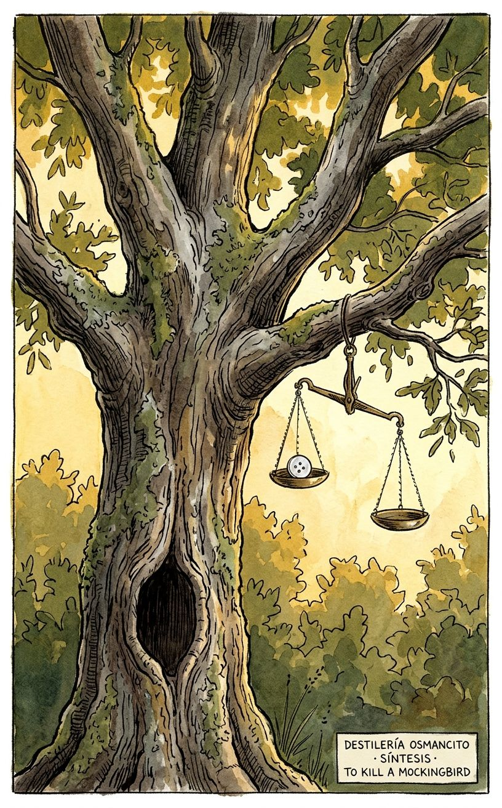
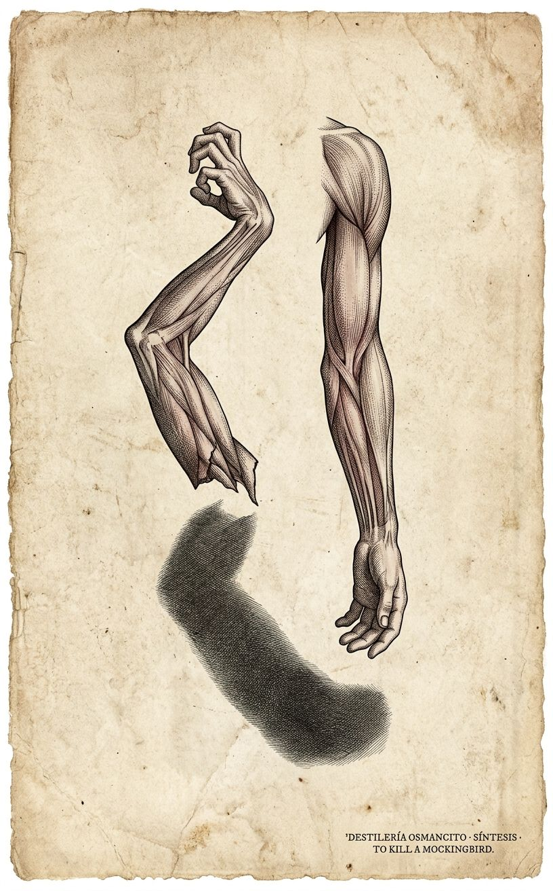
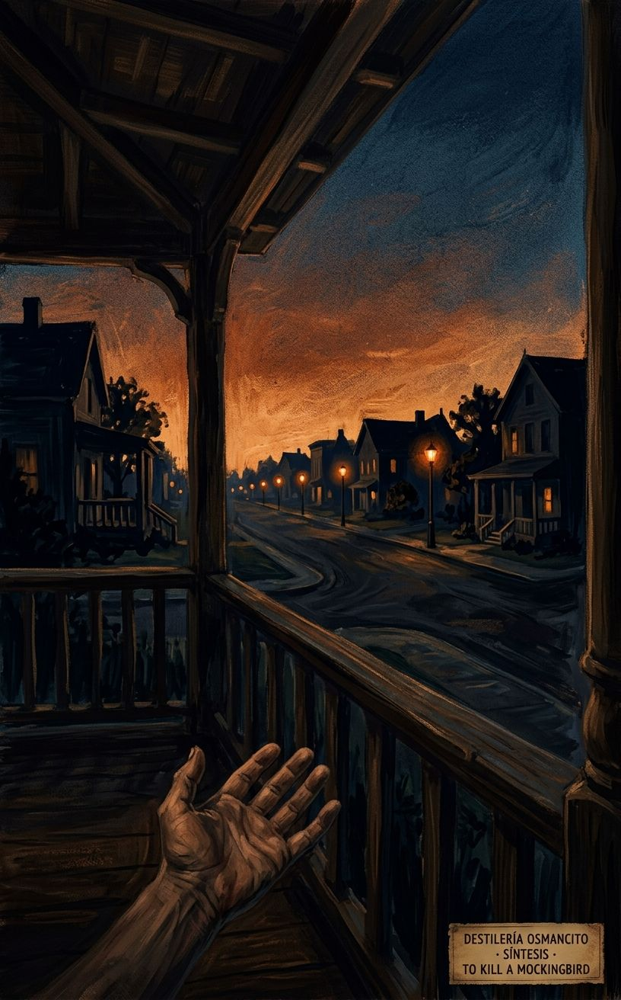
Todo este sistema de doce instrumentos converge, sin decirlo nunca, hacia una sola pregunta: a quién le presta el corpus su lenguaje y a quién se lo niega. Cada mirada distinta —arquitectura, pulso, contexto, reconocimiento, efectos en el tiempo— llegó, por caminos separados, al mismo punto: la voz de Tom Robinson. Eso no es casualidad del corpus. Es la gravedad del propio sistema de análisis, que no puede evitar organizarse alrededor de quién habla y quién no.
M01 Víspera — objeto: el corpus como objeto editorial futuro — produjo prompts de imagen desde la atmósfera del corpus, sin analizarlo.
M02 Recepción — objeto: el corpus como territorio orientador — produjo ficha, sinopsis, mapa de hechos y diagnóstico de primer contacto.
M05 Batimetría — objeto: las condiciones de acceso al contenido del corpus — produjo un mapa de qué está vivo, sepultado, cifrado, borrado y ausente.
M06 Apolo — objeto: lo construido del corpus — produjo un análisis estructural de su arquitectura, su imán conceptual y su veredicto de calidad.
M07-i Escucha Dionisíaca — objeto: el pulso del corpus en siete pasos progresivos — produjo una lectura fenomenológica acumulativa culminando en una taxonomía de miradas posibles.
M07-ii Dioniso — objeto: lo experiencial del corpus — produjo zonas vivas, ausencias, síntomas, patrones inconscientes, cuatro lecturas divergentes y una sentencia final.
M08 Hermes — objeto: las condiciones contextuales del corpus — produjo un análisis del suelo geográfico, histórico, material y posicional de su producción, verificado con fuentes externas.
M21 Menú Emergente — objeto: las operaciones que el estado del análisis solicitaba — produjo y ejecutó cinco operaciones derivadas del mapa de profundidades.
M22 Márgenes — objeto: los bordes del corpus — produjo un inventario de pérdidas internas y de irradiaciones externas (estela cultural), verificado con fuentes.
M23 Testigo del Testigo — objeto: la mirada de la narradora como observador con huella involuntaria — produjo un patrón de selección/omisión sistemática y una proposición sobre lo que esa mirada protege.
M24 Bucle — objeto: la elegibilidad del corpus para autoaplicación de mecanismos — produjo una declaración de no elegibilidad, sin forzar el instrumento.
M25 Umbral del Reconocimiento — objeto: la mecánica del reconocimiento en el corpus — produjo un mapa exhaustivo de actos de reconocimiento, su umbral declarado versus real, y su asimetría.
M26 Historia de los Efectos — objeto: la recepción del corpus a través del tiempo — produjo momentos de inflexión históricos verificados y una síntesis de lo que cada época pudo y no pudo leer.
M96 Síntesis — objeto: el análisis completo como unidad — produjo un texto integrador, una cartografía total y tres imágenes de cierre.
El punto de fuga hacia el que convergen todos los instrumentos, sin que ninguno lo declare como su objeto explícito, es: a quién el corpus le concede lenguaje propio y a quién se lo retira. Batimetría lo nombra como capa “Borrado”. Apolo lo mide como falla en la arquitectura de voz. Dioniso lo encuentra en sus ausencias y en su cuarta lectura (“lo que guarda”). Testigo del Testigo lo rastrea como reflejo involuntario de selección. Umbral del Reconocimiento lo formula como la asimetría entre quién otorga y quién espera. Márgenes lo identifica como la pérdida central del primer movimiento y el motor de la estela crítica del segundo. Historia de los Efectos lo sigue como el eje que el tiempo fue haciendo legible. Ningún instrumento fue diseñado para buscar esto específicamente — cada uno llegó ahí por su propio camino, lo cual confirma que no es un hallazgo de un instrumento sino la gravedad del conjunto.
Este punto está dentro del análisis: no es infinitamente distante en el sentido de Panofsky, porque el sistema sí lo alcanza, lo nombra y lo mide repetidamente con precisión creciente instrumento tras instrumento. Lo que sí permanece fuera del alcance del sistema es la voz misma de Tom Robinson — el análisis puede señalar su ausencia con exactitud pero no puede, por su propia naturaleza de sistema que opera sobre el corpus y no en su lugar, producir esa voz que el corpus nunca escribió.
Este sistema puede ver corpus que reparten voz de forma desigual entre sus personajes y que dejan huellas de esa desigualdad en su propia forma —frecuencia léxica, extensión de escenas, distribución de diálogo. Por construcción, no puede ver con la misma fuerza corpus donde el problema central no sea de representación o voz sino, por ejemplo, puramente formal o lingüístico sin dimensión social —el sistema entero está orientado, en casi todos sus instrumentos, hacia preguntas de poder, reconocimiento y quién habla.
Se considera evidencia cualquier patrón repetido con suficiente frecuencia como para no ser azar —una palabra que aparece mil veces, una ausencia sostenida durante treinta capítulos. Se considera hallazgo la divergencia entre lo que el corpus declara ser y lo que hace en la práctica; el sistema premia sistemáticamente la contradicción sobre la coherencia como unidad de valor analítico. Queda fuera del campo, por definición y no por descuido, cualquier evaluación puramente estética que no tenga correlato de poder o de voz —el sistema no tiene, en ninguno de sus doce instrumentos, una categoría dedicada exclusivamente al placer formal del lenguaje sin relación con quién habla y quién calla. Esto no es un error: es la condición necesaria para que el sistema pueda producir el tipo de hallazgo que produce.
Este conjunto de instrumentos porta la visión de que ningún texto es inocente de su propia forma: que la manera en que un corpus distribuye su atención —a quién le da escena, a quién le da eco— es tan significativa como lo que el corpus declara creer. Cree que la lectura es un acto de justicia distributiva tanto como de comprensión: leer bien es notar quién fue leído y quién fue mirado sin ser escuchado. Cree que un texto no es un objeto cerrado sino un campo de fuerzas —geográficas, históricas, materiales— que lo atraviesan desde afuera y que el propio texto no puede ver desde dentro de sí mismo.
Cree, también, que el analista y el corpus no están en relación de autoridad sino de escucha: varios instrumentos (Dioniso, la Escucha Dionisíaca) insisten explícitamente en no interpretar sino en registrar lo que el corpus produce en quien lo recibe, lo que sugiere una visión del mundo donde el conocimiento crítico no se impone desde una posición externa superior sino que se extrae de la atención sostenida y casi corporal al objeto. Es una visión del mundo profundamente ética antes que estética: el valor de un texto no se mide solo por su logro formal sino por a quién incluye y a quién excluye en su propia arquitectura de voz.
Ningún instrumento preguntó directamente por el placer estético puro de la prosa de Harper Lee —su ritmo de frase, su manejo del humor infantil, su comicidad— como valor autónomo, desconectado de la cuestión de voz y representación. Todos lo tocaron de pasada (Apolo mencionó la doble voz como logro técnico, Dioniso describió su textura sensorial) pero ninguno lo habitó como objeto central.
Ningún instrumento preguntó por la experiencia de lectura de un lector infantil o adolescente real —el público al que el libro está mayormente dirigido en la práctica educativa— versus la experiencia de un lector adulto crítico, que es la posición implícita de todo el análisis. El sistema entero asume, sin declararlo, un lector adulto con vocabulario crítico disponible.
Ninguna operación comparó este corpus con otras novelas de iniciación sureñas o estadounidenses contemporáneas suyas para verificar si los patrones detectados son específicos de esta obra o genéricos del subgénero. El sistema analiza el corpus casi enteramente en su propio aislamiento formal.
El imán del sistema de instrumentos es la asimetría de voz como categoría de valor —no declarada como tal en ningún instrumento individual, pero determinante en las elecciones de qué contar como hallazgo relevante en absolutamente todos ellos. Cada instrumento, sin importar su ángulo de entrada declarado (arquitectura, pulso, contexto, reconocimiento, efectos históricos), termina orbitando la misma pregunta sobre quién habla.
Este imán del análisis coincide, casi con exactitud, con el imán que Apolo identificó en el propio corpus —Atticus visto a través de Scout— pero lo invierte en polaridad: donde el corpus se organiza alrededor de la mirada filial hacia el padre, el análisis se organiza alrededor de la ausencia de mirada hacia Tom. Es una resonancia y una inversión simultáneas: el sistema de análisis encontró su propio centro de gravedad precisamente en el punto ciego del centro de gravedad del corpus. No es casualidad ni error — es lo que un sistema orientado hacia la justicia distributiva de la voz necesariamente encuentra cuando se aplica a un corpus construido, él mismo, sobre una distribución desigual de voz.
El último instrumento en producir algo genuinamente nuevo fue Umbral del Reconocimiento, que introdujo una distinción no presente en ningún instrumento anterior —umbral declarado versus umbral real— y con ella permitió nombrar con precisión inédita la divergencia entre el criterio de verdad que el corpus profesa y el criterio de pertenencia racial que en realidad opera. A partir de Historia de los Efectos, el sistema empezó a confirmar más que a descubrir: ese instrumento, aunque valioso, en gran medida documenta con fuentes externas lo que Testigo del Testigo, Batimetría y Umbral del Reconocimiento ya habían señalado desde dentro del corpus mismo — la crítica contemporánea del “salvador blanco” es, en esencia, la misma asimetría de voz nombrada con vocabulario público en vez de vocabulario del sistema.
Una dirección distinta que el conjunto no tomó y que probablemente habría producido algo nuevo: un instrumento dedicado exclusivamente a la comicidad y el humor infantil del libro como mecanismo técnico —no como decoración del tono sino como estrategia deliberada para hacer soportable la denuncia— podría haber revelado algo que ninguno de los doce instrumentos actuales, orientados hacia voz y poder, estaba construido para ver.
El sistema puede demostrar, con toda la evidencia acumulada de sus doce instrumentos, que el corpus reparte su voz de forma desigual entre razas — pero no puede, desde sus propias reglas de operar sobre el corpus sin sustituirlo, demostrar si esa desigualdad invalida el valor del corpus como experiencia de lectura o si es, en cambio, precisamente lo que hace posible que ese valor exista.
En el espacio entre todos los instrumentos, sin que ninguno lo declare, emerge algo que el conjunto porta como saber implícito: que el propio sistema de análisis reproduce, en su forma, la misma tensión irresoluble que encuentra en el corpus. El sistema denuncia la asimetría de voz del libro con precisión creciente instrumento tras instrumento, y sin embargo el sistema mismo nunca produce, en ninguno de sus doce módulos, un ejercicio que le dé a Tom Robinson la densidad de voz que exige del corpus — ni siquiera el Menú Emergente, que propuso “reconstruir la voz ausente de Tom Robinson” como operación, la ejecuta más allá de un párrafo especulativo breve, mucho menor en extensión que cualquier análisis dedicado a Atticus o a Boo. El sistema sabe nombrar la ausencia. No sabe, o no ha llegado todavía a, llenarla con el mismo compromiso de extensión y cuidado que dedica a analizarla.
Hay un objeto que aparece, sin que ningún instrumento lo señale como objeto, en casi todos los análisis: algo pequeño, dado en silencio, sin explicación, que alguien deja para que otro lo encuentre sin verlo llegar. El botón de nácar en el hueco del árbol. La manta sobre los hombros de Scout durante el incendio. El apagón de luz que Boo hace posible sin que nadie lo sepa. Los dos “buenos-suerte” pennies. El jabón tallado. La misma estructura se repite en Víspera (como símbolo irreducible de la cubierta), en Batimetría (como zona “sepultada”), en la Escucha Dionisíaca (como “peso de gesto irrecuperable”), en Dioniso (como zona viva de “cuidado fantasma”), en Umbral del Reconocimiento (como “los reconocimientos que el corpus no llama reconocimientos”), y en Síntesis (como la primera imagen, el árbol y la balanza). Ningún instrumento se detuvo a preguntar qué tienen en común, estructuralmente, todos esos objetos entregados sin testigo.
Lo que tienen en común no es que sean regalos. Es que ninguno puede agradecerse. El que da no está presente para recibir el agradecimiento, y el que recibe no puede devolver nada al que dio, porque no sabe quién fue. Esta es una estructura de dar que el análisis entero nombra una y otra vez, en un vocabulario distinto cada vez, sin nunca cruzarla consigo misma: el corpus está construido, de principio a fin, sobre actos de generosidad que no pueden cerrarse en un círculo. Scout lo dice casi al final, sin que ningún instrumento lo cite: que nunca devolvieron al árbol lo que sacaron de él, y que eso la entristece. Esa frase — “nunca pusimos de vuelta en el árbol lo que sacamos de él” — es quizás la línea más importante de todo el libro para este palimpsesto, y ningún instrumento de los doce la usó como eje. Apareció mencionada solo de pasada, dentro de la Escucha Dionisíaca, sin que nada se construyera sobre ella.
Y hay una segunda cosa, más incómoda, que se ve solo cuando se ponen lado a lado Umbral del Reconocimiento y Márgenes: el mismo mecanismo de “dar sin poder ser agradecido” que hace de Boo Radley una figura entrañable es, estructuralmente, el mismo mecanismo que el sistema legal usa para no rendirle cuentas a nadie por la muerte de Tom Robinson. El sheriff que encubre la muerte de Bob Ewell para proteger a Boo actúa exactamente como el jurado que no necesita justificar su veredicto ante nadie: ambos son actos de poder ejercidos en silencio, sin necesidad de dar explicaciones, y el libro los siente como opuestos morales —uno es piedad, el otro es injusticia— cuando en su forma son el mismo gesto de autoridad no rendida. Ningún instrumento puso estos dos silencios uno junto al otro. Cada uno los analizó por separado, en secciones distintas, como si fueran fenómenos de naturaleza distinta. No lo son. Son la misma arquitectura de poder — decidir en privado lo que se le dice al mundo — aplicada dos veces, y el libro solo tiene sentimientos opuestos hacia ella porque cambia de destinatario, no porque cambie de forma.
Esto es lo que estaba debajo: un libro que enseña que dar sin ser visto es la forma más pura de bondad, y que castiga, sin saberlo, la única vez que alguien —el jurado— también actúa sin tener que mostrar su razonamiento a nadie. El corpus ama el silencio cuando protege y lo condena cuando condena, sin advertir jamás que es la misma cosa.
Hallazgos sobre el corpus
El nombre del hermano supera en frecuencia al del padre en todo el corpus, revelando que su gravedad real es fraternal aunque su reputación sea paternal y jurídica. —Recepción—
El brazo inutilizado de Tom Robinson, prueba física que debería haberlo exculpado, y el brazo roto de Jem, causa de protección inmediata, son el mismo tipo de evidencia corporal tratada por la misma sociedad con resultados opuestos. —Menú Emergente—
La voz narrativa reparte su cercanía emocional en proporción directa a la cercanía racial y de clase del personaje observado, y ese reflejo no es una posición argumentada sino un hábito de mirada que la narradora nunca advierte en sí misma. —Testigo del Testigo—
El corpus declara que el reconocimiento depende de la verdad y la evidencia, pero opera, en los hechos que narra, con un criterio de pertenencia racial que la verdad nunca alcanza a sustituir. —Umbral del Reconocimiento—
El mismo mecanismo de doble voz narrativa que hace posible la lucidez del libro es, sin remedio interno, lo que le impide dar a Tom Robinson una interioridad equivalente a la de Atticus. —Hermes / Apolo—
La estructura que el libro más ama —dar sin ser visto, proteger en silencio— es formalmente idéntica a la estructura que el libro condena sin saberlo: el poder que decide en privado sin rendir cuentas a nadie. —Palimpsesto—
El libro no tiene los recursos internos para decidir si su propia desigualdad de voz invalida su valor como experiencia de lectura o es la condición misma de ese valor. —Punto de Fuga—
Hallazgos sobre el análisis
El sistema de doce instrumentos, orientado por un imán no declarado hacia la asimetría de voz, nombra con precisión creciente la ausencia de la voz de Tom Robinson pero nunca la llena con el mismo compromiso que dedica a analizarla. —Punto de Fuga—
Nadie devolvió nunca al árbol lo que sacó de él.
Eso es todo lo que el libro sabe hacer con la gratitud: recibirla y no poder cerrarla. Un hombre da sin que lo vean y una niña crece sin saber a quién agradecer, y esa misma incapacidad de cerrar el círculo —de que el que da y el que recibe se encuentren alguna vez en igualdad— es la forma exacta que toma después la injusticia que el libro cree estar denunciando por separado. El silencio que protege a Boo Radley y el silencio que condena a Tom Robinson no son dos silencios distintos comparados por casualidad: son el mismo gesto de alguien con poder decidiendo, sin testigos, qué merece salir a la luz y qué no. El libro ama ese gesto cuando lo hace un sheriff por compasión y no puede nombrarlo cuando lo hace un jurado por costumbre, porque para verlos como la misma cosa tendría que admitir que su propia bondad más entrañable —el regalo anónimo en el hueco de un árbol— comparte estructura con la injusticia que más le indigna. Nunca lo admite. Por eso el niño que creció en esas páginas puede querer para siempre a un vecino que nunca conoció del todo, y nunca preguntarse si el mismo cariño silencioso que lo salvó a él fue, para otro, la explicación de por qué nadie tuvo que responder por su muerte.
Un árbol que nunca recibió de vuelta lo que dio, dos brazos que la misma sociedad trata de forma opuesta, y un sheriff y un jurado tomando la misma decisión en silencio sin saber que es la misma decisión: este set no ilustra la trama. Ilustra lo que el análisis entero encontró debajo de ella.
Diez imágenes. Siete hallazgos genuinamente nuevos —uno por cada instrumento que descubrió algo que ningún otro había producido antes— más tres imágenes temáticas transversales que encarnan los ejes que solo aparecen cuando se ve el análisis completo como unidad. Diez es el máximo permitido para siete hallazgos nuevos, y este corpus lo exige: cada hallazgo tiene peso propio, ninguno es variación de otro, y los tres ejes transversales —el silencio que protege, el silencio que condena, y la voz que nunca llega— no caben dentro de ningún hallazgo individual sin perder su carácter de visión total.
Grabado a buril con veladuras de tinta — este corpus vive en blanco y negro moral (una mentira piadosa, un veredicto injusto) y el grabado, con su línea que no puede mentir sobre dónde está la sombra, encarna esa dureza sin necesitar color para doler.
Gouache mate de calor sureño — la textura física del corpus —polvo, sudor, tablas de madera recalentadas— pide un medio que se sienta seco y opaco, no brillante ni líquido; el gouache mate reproduce esa sequedad del aire de Alabama sin nunca parecer fotografía.
Acuarela de veladuras superpuestas — para las imágenes donde dos cosas conviven sin fundirse —la doble voz narrativa, el silencio que ama y el silencio que condena— la acuarela permite capas transparentes que se ven una a través de la otra sin mezclarse del todo, que es exactamente la relación que el análisis encontró entre esas parejas.
Estilo elegido: grabado a buril con veladuras de tinta, como base común del set, porque la temperatura dominante de todo lo que el análisis reveló —desde el árbol que no recibe devolución hasta el brazo que no se salva— es la de una claridad moral que duele precisamente por su nitidez, y ningún medio sostiene esa nitidez mejor que la línea grabada. Las variaciones de acuarela y gouache se aplican como veladuras sobre esa base grabada, nunca como sustitutos.
Sepia envejecido, gris de corteza y de acero, ocre quemado de Alabama, un blanco hueso para el papel y el nácar, y un solo acento de rojo oxidado reservado para lo que el corpus trata como herida — nunca decorativo, siempre puntual.
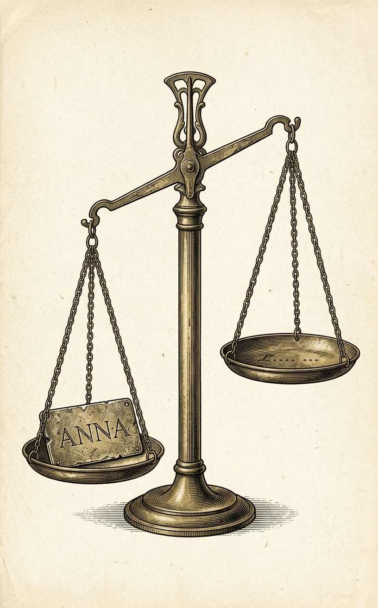
Origen: Recepción encontró que el nombre del hermano supera en frecuencia al del padre en todo el corpus — la gravedad real del libro es fraternal, no paternal.
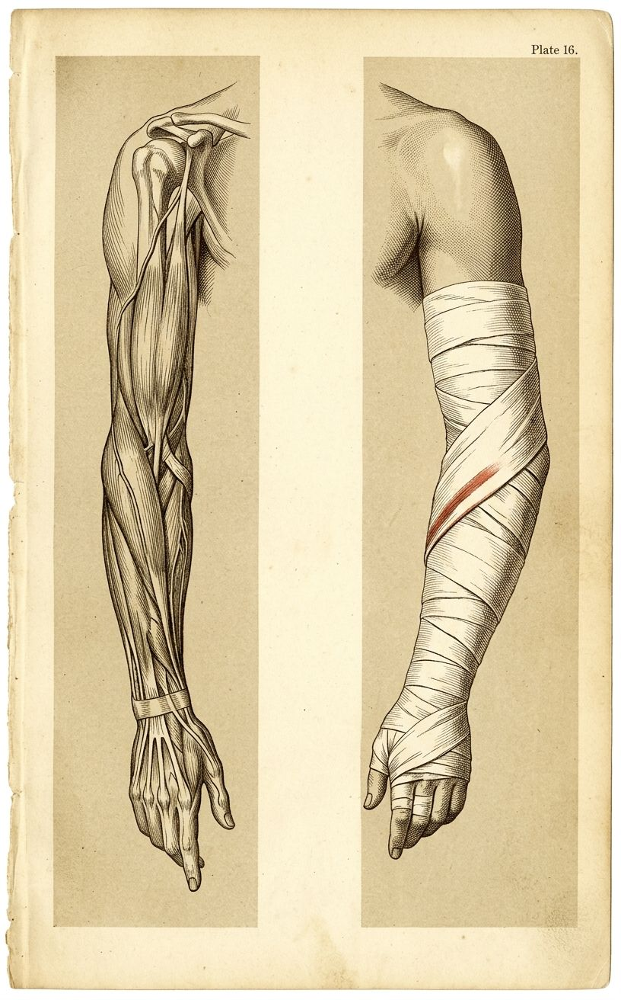
Origen: El Menú Emergente cruzó el brazo inutilizado de Tom Robinson con el brazo roto de Jem — la misma evidencia corporal, tratada por la misma sociedad con resultados opuestos.
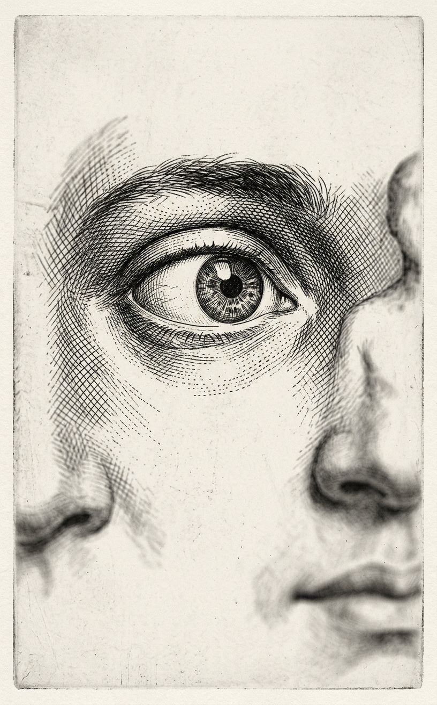
Origen: Testigo del Testigo encontró que la mirada narrativa se desvía sistemáticamente hacia el objeto o el gesto justo cuando una voz negra está por hablar por sí misma.
Imagen 4 — La vara que no es la misma
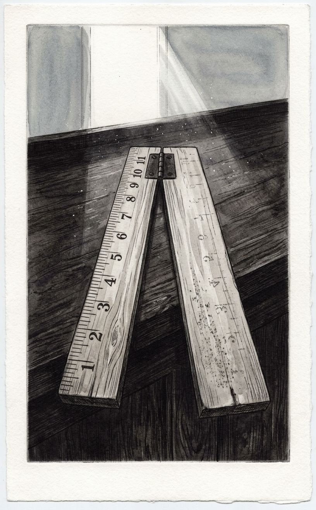
Origen: Umbral del Reconocimiento halló que el corpus declara un criterio de verdad para el reconocimiento pero opera, en la práctica, con un criterio de pertenencia que la verdad nunca sustituye.
Origen: Apolo y Hermes coincidieron en que la doble voz narrativa —niña que vive, mujer que recuerda— es a la vez el logro técnico central del libro y la razón por la que no puede dar interioridad plena a quien más lo necesita.
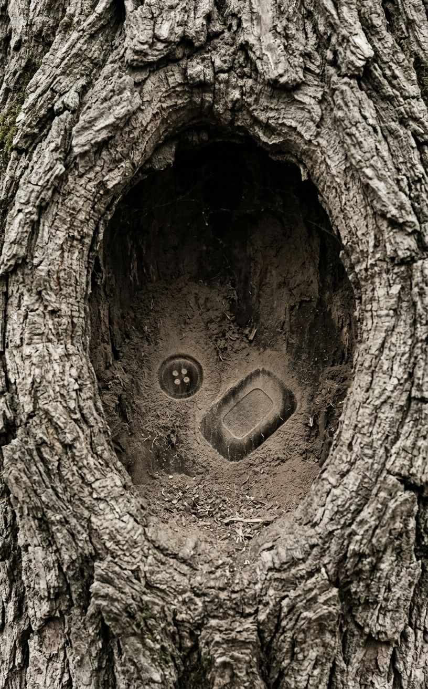
Origen: El Palimpsesto encontró la estructura del dar-sin-testigo repetida en todo el corpus, y la frase de Scout sobre nunca haber devuelto al árbol lo que sacó de él como su núcleo no explotado.
Imagen 7 — El mismo silencio, dos rostros
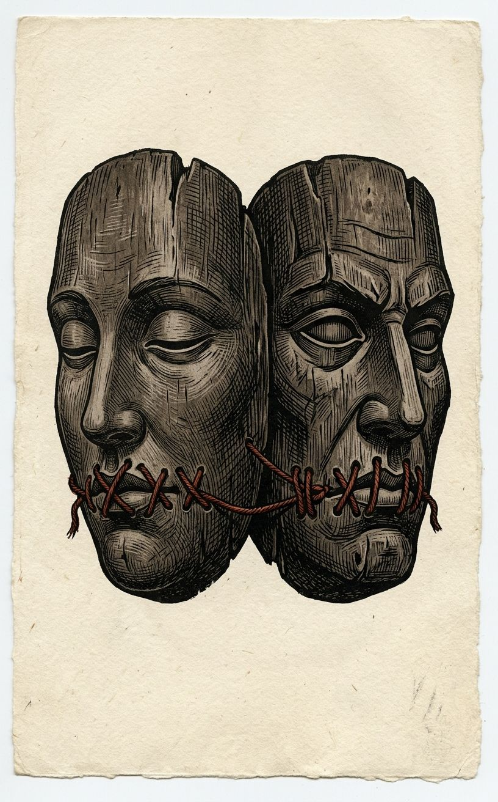
Origen: El Palimpsesto reveló que el silencio institucional que protege a Boo Radley y el silencio del jurado que condena a Tom Robinson son la misma arquitectura de poder no rendido, aunque el corpus los sienta como opuestos morales.
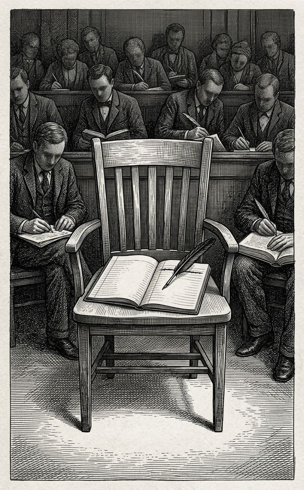
Origen: Punto de Fuga encontró que el análisis entero nombra con precisión creciente la ausencia de voz de Tom Robinson sin nunca llenarla con el mismo compromiso que dedica a analizarla.
Imagen 9 — El calor que no distingue
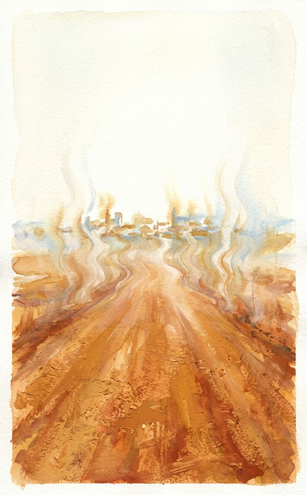
Origen: Imagen sin figura humana ni objeto fabricado, exigida por la coherencia del set: el fenómeno atmosférico que atraviesa todo el análisis —el calor de Alabama— como condición previa a cualquier juicio moral, indiferente a quién protege y a quién condena.
Imagen 10 — Lo que ninguna escena predijo
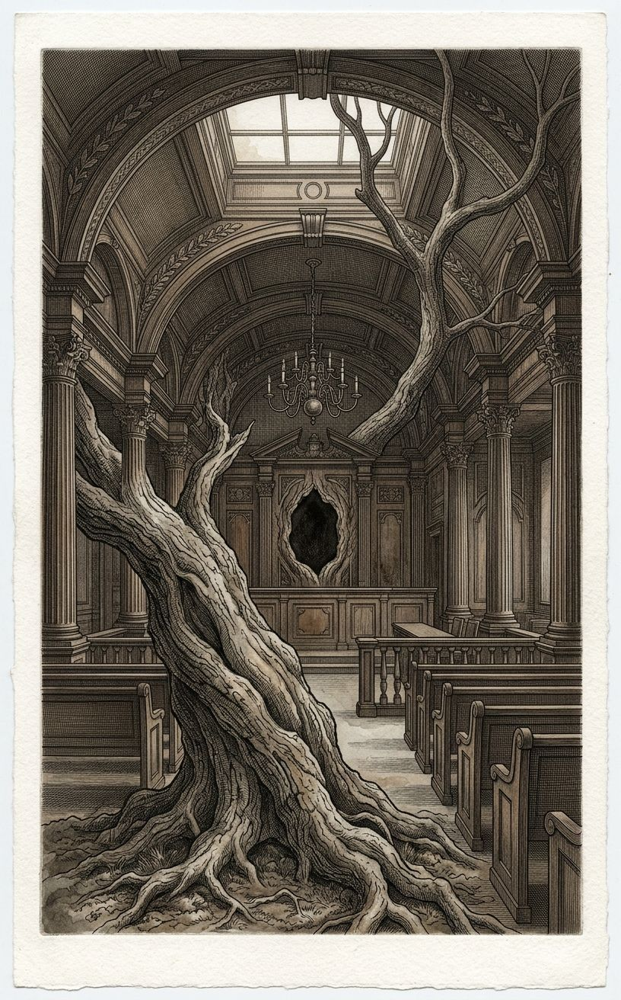
Origen: Imagen exigida por la coherencia del set —ninguna descripción verbal del corpus la habría anticipado—: el punto de fuga y el palimpsesto comprimidos en un solo objeto imposible dentro de la trama del libro.
Ningún objeto en primer plano se repite más de dos veces (balanza, brazos, ojo, vara, río, árbol/hueco, máscara, silla, calle, árbol-tribunal); la temperatura lumínica dominante —luz blanca y neutra— se mantiene sin exceso en las imágenes 1, 4 y 8, mientras 2, 6 y 7 usan tonos más cálidos y las imágenes 3, 5 y 9 usan tonos fríos o difusos, evitando concentración. La imagen 9 no contiene figura humana ni objeto fabricado, solo fenómeno atmosférico. La imagen 10, el árbol-tribunal imposible, es la que ninguna descripción verbal del corpus original hubiera predicho por sí sola.